EE274: Data Compression, course notes
Welcome! This e-book serves as lecture notes for the Stanford EE course, EE274: Data Compression. This set of lecture notes is WIP, so please file an issue at https://github.com/stanfordDataCompressionClass/notes/issues if you find any typo/mistake.
Lossless data compression
The first part of the lecture notes pertain with lossless data compression
- Introduction
- Prefix Free Codes
- Kraft Inequality
- Entropy and Neg-log likelihood thumb rule
- Huffman coding
- Asymptotic Equipartition Property
- Arithmetic coding
- Asymmetric Numeral Systems
Introduction to lossless coding
Data compression, is one area of EECS which we are aware of and unknowingly make use of thousands of times a day.
But, not many engineers are aware of how things work under the hood.
Each text, image and video is compressed before it gets transmitted and shared across devices using compression
schemes/formats such as GZIP, JPEG, PNG, H264 ... and so on. A lot of these compression schemes are somewhat domain
specific, for example typically use GZIP for text files, while we have JPEG for images.
While there is significant domain expertise involved in designing these schemes,
there are lots of commonalities and fundamental similarities.
Our focus in the first half of the course is going to be to understand these common techniques part of all of these compression techniques, irrespective of the domain. The goal is to also build an intuition for these fundamental ideas, so that we can appropriately tweak them when eventually designing real-life and domain-specific compression techniques. With that in mind, we are going to start with very simple hypothetical but relevant scenarios, and try to tackle these. As we will see, understanding these simpler cases will help us understand the fundamental details of compression.
Let's start with a simple example:
Let's say we are given a large random text file consisting of
4letters . To be more precise, each letter of the text file is generated randomly by picking a letter from the set independently and with uniform probability. i.e.
An example of such a file is given below. Let's say we have such a file containing letters.
ACABDADCBDDCABCDADCBDCADCBDACDACDBAAAAACDACDA...
Now if one examines this file, then the size of the file is going to be 1,000,000 bytes, as can be seen below.
➜ ls -l sample_ABCD_uniform.txt
-rw-rw-r-- 1 kedar kedar 1000000 Jun 23 19:27 sample_ABCD_uniform.txt
This is quite obvious as we are using 1 byte (or 8 bits/symbol) to represent each alphabet. In fact, if we look at the
bits in the file, we see that each symbol has a unique codeword, given by the ASCII table:
| Symbol | ASCII code |
|---|---|
| A | 1000001 |
| B | 1000010 |
| C | 1000011 |
| D | 1000100 |
Every time we write text to a file, the programming language encodes the text file using ASCII encoding table -- to
map the characters and other punctuations to binary data. Also, when we read the file back, the binary data is
read 8 bits at a time and then decoded back to the character.
Now, the question we want to answer is "Can we reduce the size of the file?"
To be more precise, we will restrict ourselves to Symbol codes, which are encoding schemes where we have a unique binary string (called a codeword) for every symbol.
For the example above where our file contains random letters from the set ,
the ASCII code gives us a compression of 8 bits/symbol. Can we design a symbol code which
achieves better compression and is lossless, i.e. a lossless compression scheme?
Fixed Bitwidth encoding
If we look at the ASCII code table, we see that all the codes start 1000, which is kind of redundant. It is useful if
we have other letters in the file, but in this case we only have 4 letters. Thus, we don't need all the 8-bits! In
fact, we can just use 2 bits/symbol to represent them all as follows:
| Symbol | ASCII code |
|---|---|
| A | 00 |
| B | 01 |
| C | 10 |
| D | 11 |
Note that this is lossless compression, as during decoding as well we can just read 2 bits at a time and map them
to A,B,C,D. Thus, this simple idea has given us a compression of 4x!
In general, if we have different symbols in our text file, then using this simple idea we can represent/encode the data using bits.
Going beyond Fixed Bitwidth encoding
Now, this 2 bits/symbol compression is all well and good, but works only if some letters are fully absent from our
text file. For example, if now our file the letters were absent and only the letters were present, then
we could go from 2 bits/symbol to 1 bit/symbol, by assigning codes a follows:
| Symbol | ASCII code |
|---|---|
| A | 0 |
| B | 1 |
But, what if were present, but in a smaller proportion? Is it possible to achieve better compression? Here is a more precise question:
Lets say that our random text file contains the letters , such that each letter is sampled
independently with probability:
Then can we design a symbol code which achieves lossless compression better than 2 bits/symbol?
Clearly, if we stick with fixed bitwidth encoding, then irrespective of the distribution of letters in our file, we are
always going to get compression of 2 bits/symbol for all the 4 symbols, and so of course we can't achieve
compression better than 2 bits/symbol. But, intuitively we know that most of the time we are only going to encounter
symbol or , and hence we should be able to compress our file closer to 1 bit/symbol. To improve compression,
the idea here is to go for variable length codes, where the code length of each symbol can be different.
But, designing variable length codes which are also lossless is a bit tricky. In the fixed bitwidth scenario, the
decoding was simple: we always looked at 2 bits at a time, and just performed a reverse mapping using the code table
we had. In case of variable length codes, we don't have that luxury as we don't really know how many bits does the
next codeword consists of.
Thus, the variable length codes need to have some special properties which makes it both lossless and also convenient to decode.
Instead of just mentioning the property, we are going to try to discover and reverse engineer this property! With that in mind, I am going to present the solution to the Quiz-2, but what you have to do is figure out the decoding procedure! So here is one possible code:
| Symbol | codewords |
|---|---|
| A | 0 |
| B | 10 |
| C | 110 |
| D | 111 |
Some questions for you to answer:
For the variable code above, answer the following questions:
- Are we doing better than
2 bits/symbolin terms of the average compression? - Is the code really lossless?
- How can we perform the decoding?
Even before we try to answer these questions, lets try to first eyeball the designed code and see if we can
understand something! We see that the code for is now just 1 bit instead of 2. At the same time, the code
lengths for are 3 instead of 2. So, in a way, we are reducing the code length for symbols which are more
frequent, while increasing the code length for symbols which occur less frequently, which intuitively makes sense if
we want to reduce the average code length of our file!
Compression ratio: Lets try to answer the first question: "Are we doing better than 2 bits/symbol in terms of the
average compression?" To do this, we are going to compute , the average code length of the code:
So, although in the worst case this increases the symbol code length from 2 to 3, we have been able to reduce the
average code length from 2 to 1.53, which although is not as good as 1 bit/symbol we see when were
completely absent, it is still an improvement from 2 bits/symbol. Great!
Lossless Decoding: Now that we have answered the first question, lets move to the second one: "Is the code really lossless?"
Okay, lets get back to the code we have:
| Symbol | codewords |
|---|---|
| A | 0 |
| B | 10 |
| C | 110 |
| D | 111 |
Let's take an example string and see how the encoding/decoding proceeds:
input_string = ABCADBBA
The encoding proceeds in the same way as earlier: for every symbol, we look at the lookup table and write the corresponding bits to the file. So, the encoding for our sample string looks like:
input_string = ABCADBBA
encoding = concat(0, 10, 110, 0, 111, 10, 10, 0)
= 010110011110100
Now, lets think about how we can decode this bit sequence: 010110011110100. The issue with using a variable length
code, unlike before where we used 2 bits for each symbol is that we don't know where each code ends beforehand. For
example, we don't know how to decode symbol no. 7 directly. but let's see how we can decode the input sequentially,
one symbol at a time.
-
The first bit of
010110011110100is0. We see that only one codeword (corresponding to ) starts with0, so we can be confident that the first letter was an ! At this time we have consumed1bit, and so to decode the second symbol we have to start reading from the second bit. -
Let's now focus our attention on the remaining bits:
10110011110100. Now, the first bit is a1. Unfortunately have codewords which start with a1, so lets read another bit:10. Okay! we have a match with the symbol . We can also be confident that the second symbol is indeed , as no other codeword begins with10. Thus, our decoded string until now isA,B -
We can continue in the same way and decode the remaining symbols one at a time, by following the following procedure, to recover the input string:
ABCADBBA.
Below is a pseudocode to decode a single symbol using the matching scheme described above.
codewords_table = {A: 0, B: 10, C: 110, D: 111}
def decode_symbol(encoded_bitstring, codewords_table):
temp_bits = ""
# read until we find a match with a codeword in the codewords_table
while not find_match(temp_bits, codewords_table):
temp_bits += encoded_bitstring.read_next_bit()
decoded_symbol = find_match(temp_bits, codewords_table)
return decoded_symbol
Note, that one reason why our decoding procedure works is because no codeword is an initial segment of another codeword,
i.e. no two codewords are prefixes of each other. Thus, if
codeword for is 10, then no other codeword can begin with 10. This kind of Symbol codes are known as
prefix-free codes (or simply Prefix Codes). As we just saw, we can confidently say that if a code is *
prefix-free*, then it indeed leads to lossless compression, and a convenient decoding procedure.
Note that prefix-free codes aren't the only way of designing symbol codes which are lossless. For example, consider the following code
| Symbol | codewords |
|---|---|
| A | 0 |
| B | 01 |
| C | 011 |
| D | 111 |
Notice that codeword for starts with 01 which is in fact the codeword for (similarly for and ). Thus,
this code is not prefix-free and our decoding procedure described above will fail. For example if we encode a
-> 011..., our decoding procedure will always output a , as it would find a match at 01 itself. Note that
although our simple decoding scheme above fails, lossless decoding is still possible. Although, the decoding scheme
might be more complicated as, we have to read "future bits" to determine if a or a was encoded here.
As a fun exercise, can you try to figure out how the decoding works for this code?
Can you think of a decoding procedure which works for this code? (Hint: It sometimes helps to think in the reverse direction)
| Symbol | codewords |
|---|---|
| A | 0 |
| B | 01 |
| C | 011 |
| D | 111 |
To summarize: the key idea to learn from the design of our code is that
If no codeword in a symbol code is a prefix of each other, then the symbol code is a prefix-free code.
Prefix-free codes by design are lossless compression schemes which allow for a convenient decoding scheme.
Another name for prefix-free codes is instantaneous codes as the decoding procedure is in a sense "instantaneous", i.e. we don't have to read bits written by future symbols to decode the current symbols.
Next Lecture
In this lecture, we discussed the design of a simple prefix-free code which improves upon the compression of a
non-uniform source from 2 bits/symbol to 1.53 bits/symbol by using variable length codewords. We also briefly
discussed how the decoding might proceed.
In the next lecture we will take this discussion further and try to answer the following questions:
-
Implementing the decoding: We will see how to transform our simple decoding procedure into an efficient algorithm, which we can implement in practice
-
Designing prefix-free codes: We will discuss how to design prefix-free codes to obtain better compression.
Prefix(-Free) Codes
As a recap, in the previous lecture, we discussed a simple example of a prefix-free code. We also discussed a simple procedure for decoding data encoded using the prefix-free code. In this lecture we will be thinking about how to actually go about implementing the decoding, and also how to design prefix-free code itself.
Lets start by thinking about the decoding. As a recap, here is our prefix-free code and the decoding procedure
| Symbol | Codewords |
|---|---|
| A | 0 |
| B | 10 |
| C | 110 |
| D | 111 |
### Prefix-free decoding procedure
codewords_table = {A: 0, B: 10, C: 110, D: 111}
def decode_symbol(encoded_bitstring, codewords_table):
temp_bits = ""
# read until we find a match with a codeword in the codewords_table
while not find_match(temp_bits, codewords_table):
temp_bits += encoded_bitstring.read_next_bit()
decoded_symbol = find_match(temp_bits, codewords_table)
return decoded_symbol
The procedure is as follows:
- We start from the encoded bitstream, and try to find a match with either of the codewords. We stop when we get our first match
- Note that the decoding procedure above is "correct" because we have a prefix-free code, and so we can stop searching
when
find_matchobtains its first match.
Let's think about how we can implement the find_match function.
Idea-1: Hash-tables: One simple way to implement the find_match function in the decoding is via a hash table. We
can just create a hash table using the codewords_table. We can then just query the hash table with the temp_bits,
until we get a match.
Can we think of a simple data-structure which will make this procedure faster?
Prefix-free Tree
Another approach towards prefix-free code decoding is to construct a prefix-free tree and use this tree for decoding.
Lets get back to our prefix-free code example to see what I mean by that:
Given the codewords table, we can represent it as a binary tree follows:
graph TD *(Root) -->|0| A:::endnode *(Root) -->|1| n1(.) n1 -->|10| B:::endnode n1 -->|11| n2(.) n2 -->|110| C:::endnode n2 -->|111| D:::endnode
- The idea behind the prefix-free tree construction is simple. For each codeword, we add a node at depth
len(codeword)from root node, taking the right path or the left path from previous node in the tree depending on whether the corresponding bit in the codeword is1or0. E.g. in our codewords tableB -> 10. In this case we add a node to the binary tree at depth2 = len(10), corresponding to the path10 -> right, leftfrom the root node. Similarly, forC -> 110, we add a node at depth3corresponding to the path110 -> right, right, left. - Notice that for prefix-free codes, the codewords correspond to the leaf nodes. This can be shown using contradiction. If there was another node
n2corresponding to codewordc2sprouting out of noden1(with codewordc1), then based on the construction of prefix-free tree defined in the previous step,c1is a prefix ofc2. This is a contradiction because we're violating theprefix-freeproperty of our code. In fact, the property that prefix-free codes correspond to the leaf nodes of prefix-free tree is another way to define prefix-free codes!
Okay, now that we have understood how to create the prefix-free tree data structure for any prefix-free code, can we use this tree structure to improve the decoding algorithm? Take a look!
## Prefix-free code decoding using a prefix-free tree
prefix_tree = ... # construct the tree here using codewords
def decode_symbol(encoded_bitarray, prefix_tree):
# start from the root node and read bits until you read a leaf node
node = prefix_tree.root
while not node.is_leaf_node:
bit = encoded_bitarray.read_next_bit()
node = node.right if bit else node.left
# return the symbol corresponding to the node, once we reached a leaf node
return node.symbol
Some observations:
- This decoding scheme is similar in logic to the previous one, but quite a bit more efficient, as we are not querying the hash table multiple times.
- The key idea is that for prefix-free codes the codewords correspond to leaf nodes. Hence, we just parse the tree with the bits from the output until we reach one of the leaf nodes.
- Note that we need to create the prefix-free tree during the pre-processing step of our decoding as a one-time cost, which typically gets amortized if the data we are encoding is quite big.
As we will see later the prefix-free tree is not just useful for efficient decoding, but is a great way to think and visualize prefix-free codes. We will in fact use the structure when we learn about how to design a good prefix-free code.
How to design good prefix-free codes?
Okay, now that we have convinced that prefix-free codes are indeed lossless and that they have an efficient decoding scheme, lets revisit our code and think again about why the scheme leads to better compression
To recap: we wanted to design a code for the skewed non-uniform distribution:
we started with the following Fixed Bitwidth code.
| Symbol | Codewords |
|---|---|
| A | 00 |
| B | 01 |
| C | 10 |
| D | 11 |
Then we were able to construct a variable-length code, which is indeed lossless and improves the compression
from 2 bits/symbol to 1.53 bits/symbol on an average.
| Symbol | Codewords |
|---|---|
| A | 0 |
| B | 10 |
| C | 110 |
| D | 111 |
How did this improvement come about?
-
The Fixed Bitwidth code is assigning equal importance to all the symbols , as the code-lengths are the same (
2 bits/symbol). This seems all good, in case they are equiprobable. i.e. if the probabilities are: -
But in case of the skewed probability distribution, clearly are more important as they occur much more frequently. So, we should try to assign a shorter codeword to and could afford to assign longer codewords to as they occur much less frequently.
Thus we have a simple and somewhat obvious thumb rule for a code:
Given a distribution, it is better (in terms of compression) to assign shorter codewords to symbols with higher probability.
Even though we want to assign shorter codes to symbols with higher probability, it is not clear what the proportionality should be.
For example, the prefix-free code we have works well for distribution and gives us the average codelength of 1.53 bits/symbol. But, the same code doesn't work well for a less
skewed distribution like:
as in this case the average codelength is 2.1 bits/symbol (which is even higher than Fixed Bitwidth code!).
This problem, (and much more) was definitively analyzed in the brilliant work by Claude Shannon in his 1948 paper A Mathematical theory of Communication. Shannon's work laid the theoretical foundations of not just the field of data compression, but more so of the area of error-free data communication. (The paper remains surprisingly accessible and short for its legendary nature. Do take a look!)
We will definitely come back in the future lectures to understand the work in more detail, but here is another thumb rule from Shannon's work for the optimal code-lengths:
Note that this is still a thumb rule, until we prove it and show convincingly in which scenarios it holds true. But, lets try to verify this rule in a couple of simple cases:
-
Uniform Distribution: Let's consider the case of We know that as we have 4 equiprobable symbols, we can encode data using
2 bits/symbol. This matches the thumb rule above: In general, we see that if the probability is for all the symbols of a distribution, then the optimal codelength is going to be , according to the thumb rule. Now, in cases where is not a power of , and if we have a single unique codeword per symbol, then the best we can achieve is -
Dyadic distribution: Based on the thumb rule, we need to be an integer, which is only possible if is a negative power of for all symbols. Such distributions are known as dyadic distributions
Dyadic distribution A distribution is called dyadic if
Based on the thumb rule, it is unambiguously clear that for dyadic distribution, the symbol should have codeword of length . For example: for the following dyadic distribution the code-lengths are going to be:
Symbol Prob Optimal codelength A 1/2 1 B 1/4 2 C 1/8 3 D 1/8 3 -
General Distributions: For generic distributions, , might not be achievable in general. But, a good goal to aim for is: Is this possible? Lets look at this problem in the next section
Designing prefix-free codes
Okay! So, now that we know that the code-lengths to shoot for are: let's try to think how.
Let's take a simple example (see below) and see if we can try to come up with a prefix-free code with the prescribed lengths.
| Symbol | Prob | Optimal codelength |
|---|---|---|
| A | 0.55 | 1 |
| B | 0.25 | 2 |
| C | 0.1 | 4 |
| D | 0.1 | 4 |
We know that all prefix-free codes have a corresponding prefix-free tree. So, essentially we want to come up with a
binary tree with the leaf nodes at a distance equal to the code-lengths from the root node. For example, in the above
example, we want to construct a binary tree with leaf nodes at distance 1, 2, 4, 4 from the root node. Note that there
can be some additional leaf nodes to the binary tree which are not assigned to any codeword.
- Let's start with nodes at distance
1. We know a binary tree has2^1 = 2nodes at distance1from the root node. These correspond to codewords0(left node) and1(right node). Let's make the left node a leaf node corresponding to symbol (with codelength =1as needed)
graph TD
*(Root) -->|0| A:::endnode
*(Root) -->|1| n1(.)
- Now we have the right node (corresponding to codeword
1), which we can split further into two nodes corresponding to10and11. As we are needed to assign a codeword with length2, lets assign node corresponding to10to symbol , and make it a leaf node.
graph TD
*(Root) -->|0| A:::endnode
*(Root) -->|1| n1(.)
n1 -->|10| B:::endnode
n1 -->|11| n2(.)
- We are now again left with the right node
11, which we can split further into two nodes110, 111at distance =3from the root node. Now, looking at the table of code-lengths, we do not have any code to be assigned to length3, so lets split node110further into nodes corresponding to1100and1101. We can now assign these two nodes to symbols respectively.
graph TD
*(Root) -->|0| A:::endnode
*(Root) -->|1| n1(.)
n1 -->|10| B:::endnode
n1 -->|11| n2(.)
n2 --> |110| n3(.)
n2 --> |111| n4(.)
n3 --> |1100| C:::endnode
n3 --> |1101| D:::endnode
Thus, our final codewords are:
| Symbol | Prob | Optimal codelength | codewords |
|---|---|---|---|
| A | 0.55 | 1 | 0 |
| B | 0.25 | 2 | 10 |
| C | 0.1 | 4 | 1100 |
| D | 0.1 | 4 | 1101 |
Notice that the leaf node corresponding to 111 was not linked to any symbol. That is absolutely ok! It just implies
that we could have squeezed in another symbol here with length 3, and points to the slight inefficiency in using the
approximation .
The procedure we followed seems general enough that we can follow it for any distribution:
- Sort the distribution in descending order and compute codelengths as
- Assign the first lexicographically available codeword to the next symbol which is not a prefix of the previous ones and is of the stipulated length.
We still need to argue the correctness of the procedure and that it will work in all cases! For example, how can we be sure that we will not run out of nodes?
We will look at all these problems in the next lecture.
Summary & Next Lecture
To summarize: here are the key takeaway's for this lecture:
-
Prefix-free codes: Among the symbol codes, prefix-free codes allow for efficient and convenient encoding/decoding. In fact as we will see, given any uniquely-decodable code (or lossless code), we can construct a prefix-free code with exact same code-lengths and thus the same compression performance. Thus, we restrict ourselves to the analysis of prefix-free codes among the symbol codes.
-
Prefix-free tree: Any prefix-free code has a prefix-free binary tree associated with it, which has the leaf nodes corresponding to the codewords.
-
Compression thumb rule: One, somewhat obvious thumb rule we learnt for symbol codes was that if else we could swap the codewords for symbols and achieve lower average codelength.
-
Neg Log-likelihood: Another thumb-rule we learnt was that the optimal code-lengths for a prefix-free code are We will understand why this rule is true in the next lecture.
-
Prefix-free code construction: We looked at a procedure for constructing prefix-free codes for any distribution. In the next lecture, we will justify the correctness of the procedure and also discuss a couple of more ideas of constructing prefix-free codes
Designing prefix-free codes
As a recap, in the previous lecture we discussed how to design a prefix free code given the code lengths. We discussed a simple procedure which constructs a prefix-free tree given the code-lengths.
We also saw a simple thumb rule which tells us what the code-lengths of the prefix-free code should be. In this lecture we are going to discuss two things:
- Justify that correctness of our prefix-free tree construction with lengths
- Look at a few more prefix-free code constructions
Kraft Inequality & converse
With the goal of proving the correctness of the prefx-free tree construction, we will first look at a simple but fundamental property of binary trees, called the Kraft-Mcmillan Inequality (or simply the Kraft Inequality)
Consider a binary tree, where the leaf nodes are at depths from the root node respectively.
Then the node depths satisfy the inequality:
The inequality is quite elegant, and so is its proof. Any thoughts on how the proof might proceed? Here is a hint:
Hint: Let . Then, the Kraft inequality can be written as: All we have done here is multiply both sides by , but this simple transformation will help make the inequality more interpretable! Can you see the proof now? Here is a proof sketch:
- Let's try to interpret the RHS, are the number of nodes of the binary tree at depth .
- The LHS also has a natural interpretation: Given a leaf node at depth , one can imagine that it corresponds to nodes at depth .
graph TD *(Root) -->|0| A:::endnode A -.-> n6(.):::fake A -.-> n7(.):::fake n6-.-> n8(.):::fake n6-.-> n9(.):::fake n7-.-> m1(.):::fake n7-.-> m2(.):::fake *(Root) -->|1| n1(.) n1 -->|10| B:::endnode B -.-> m3(.):::fake B -.-> m4(.):::fake n1 -->|11| n2(.) n2 --> |110| C:::endnode n2 --> |111| D:::endnode classDef fake fill:#ddd;
For example in the tree example above, node has 4 nodes corresponding to it at depth = 3, while node has 2
nodes.
- It is clear that the nodes at depth are distinct for each of the leaf nodes (Think why?). As the "total number of nodes at depth ", is larger than "the sum of nodes at depth corresponding to leaf nodes , we get the inequality
- This completes the proof sketch for the Kraft Inequality:
Well, that was a short and simple proof! It is also clear that the equality is true, if and only if there is no leaf node left unaccounted for.
We can use the Kraft inequality to now show the correctness of the prefix-free tree construction with code-lengths , as we discussed in last lecture.
Prefix-tree construction correctness
To recap, our prefix-free tree construction proceeds as follows:
-
We are given probability distribution for symbols . WLOG assume that: Now, compute code-lengths such that: Thus, the lengths, satisfy
-
The prefix-free tree construction follows by starting with an empty binary tree, and then recursively adding a leaf node at depth to the binary tree.
We want to argue the correctness of the tree construction at each step, i.e. we want to show that when we are adding node , there will always be a node available for us to do so.
Let's proceed towards showing this inductively.
- In the beginning, we just have the root node, so we can safely add the node with length . To do so, we need to create a binary tree with leaf nodes, and just assign one of the leaf nodes to node
- Now, let's assume that we already have a binary tree with nodes and that we want to add node . We want to argue that there will always be a leaf node available with depth in the binary tree . Let's see how can we show that:
- If we look at the code-lengths, i.e. the depths of the nodes , we see that they follow the Kraft inequality Now as it implies that the node depths of the tree satisfies (for )
- We know from the Kraft inequality that if the inequality is not tight, then there will be a leaf node available at depth. Now, as , we can safely say that the node can be added to the binary tree .
- This completes the correctness proof.
In fact if you look at the proof, all we have used is the fact that . Thus, the same proof also gives us the following converse theorem of the Kraft inequality:
Let such that:
then, we can always construct a binary tree with leaf nodes at depths from the root node for .
Kraft inequality and the thumb rule
In the last chapter we introduced the thumb rule without any justification. Since then we have seen a code construction that gets close to this thumb rule. Here we briefly sketch how Kraft inequality can be shown to justify the thumb rule. Details can be found in section 5.3 of extremely popular book by Cover and Thomas "Elements of Information Theory". The idea is to consider the optimization problem This is simply the optimization problem to minimize the expected code lengths for a prefix code (Kraft's inequality gives a mathematical way to express the constraint). While this is a integer optimization problem (due to the code lengths being integral) and hence is hard to solve, we can relax the integer constraint and try to solve this for any positive . Then the method of Lagrange multipliers from convex optimization can be used to sovle this problem and obtain the optimal code lengths . In the next chapter, we will look again into this and derive the thumb rule in a different way (though the Kraft inequality still plays a crucial role).
Entropy & Neg-log likelihood thumb rule
In this lecture, our goal is to understand where the thumb rule for prefix-free code-lengths came from. To understand this, we are going to take a brief detour and get a sneak-peek into the area of Information Theory.
Information theory is the science of information, and is an area which tries to understand the fundamental nature of what is information, how do we store it, how do we communicate it etc. The whole field (along with some of the most fundamental results in the field) was laid down in a single seminal paper A Mathematical theory of Communication by Claude Shannon in 1948.
Rather than talking about information in philosophical terms, we are going to understand information theory mathematically. We are going to first define some quantities and properties central to information theory. As we will see, understanding the mathematical properties of these quantities is what will lead us to the intuition and understanding of information theory.
Entropy
So, lets get started: the first property, or information-theoretic measure we are going to define is the Entropy. The entropy, although a term overloaded with a lot of meaning in the (math/science) pop culture, has a precise definition in information theory.
Let be a random variable, with alphabet and discrete probability distribution . i.e. one can imagine the samples generate by the random variable to be independent and identically distributed as per distribution .
Then the entropy of the random variable is defined as:
Some comments:
- As you can see, is a simple function of the distribution . So, some works also denote as a . We will use both of these notations interchangeably; but note that that the notation is more precise and will be more helpful when we deal with more complex distributions (like Markov distributions).
- Another way to look at is as expectation over the negative-log likelihood function Although, this feels a bit weird, the neg-log likelihood function is a completely legitimate function of the random variable . All the different viewpoints are useful in different scenarios
Properties of Entropy
Now that we have defined Entropy, lets take a look at some properties of . To prove most of these properties, we are going to need a simple but a very profound property of convex functions: the Jensen's inequality.
Jensen's inequality
Let be a convex function. Let be a random variable on with discrete probability distribution be some probability distribution. Then:
Similarly if is a concave function, then the reverse inequality is true:
In both cases, equality holds iff (if and only if)

- If one looks at the LHS: , then it can be understood as simply a weighted average with weights over the points . This weighted average corresponds to a point somewhere on the segment joining points and
- If one looks at the RHS: . Thus, the RHS corresponds to the value of the convex function at the weighted averaged point . It is clear from the figure that because of the "bowl-shaped* nature of , .
- It is also clear from the figure why the equality condition holds true iff
We won't prove the Jensen's inequality here, but it is useful to understand and visualize the inequality. For a rigorous proof look at the wiki article on Jensen's Inequality. In the simple discrete case, it can be proved using induction.
Okay, we are all set to look at some properties of Entropy. As you can guess, in our case, we will be specifically using Jensen's inequality on the concave function .
1. Non-negativity of Entropy: :
It is easy to see that . The reason is that: , as
2. Upper bound on Entropy: :
We know that . We can also compute an upper bound on : The first step of the proof follows from Jensen's inequality for the Concave function . Also, note that the equality is possible only if: which implies that
3. Joint entropy of independent random variables:
If we have random variables , we can define their entropy simply as the entropy of the pair . The joint entropy is denoted as and can be expanded as
Now if and are independent random variables, then we have
Thus, the joint entropy of independent random variables is simply the sum of their individual entropies. This generalizes to independent random variables using induction. In particular, if the -tuple consists of i.i.d. random variables distributed like , then . The general case of dependent random variables and their joint entropy is studied in a later chapter.
4. Entropy as a lower bound: for any distribution :
Let us spell out this property in a bit more detail. Given any probability distribution , the following is true: the equality holds iff , i.e. we want to show that Okay, so proving the lower bound property is equivalent to showing that . Any idea how can we do this?
The idea is again to use Jensen's inequality:
Note that we used Jensen's inequality in step (2), but the sign of the inequality is reversed because of the negation. We also know that equality holds iff i.e. if !
Alright! This proves our property as
Let's pause a bit and think about what this property is telling:
- Essentially we are telling that is the solution to the minimization problem: We will see that this characterization is often quite useful.
- Another corollary we proved is that for any two distributions . The quantity on the right is also known as the KL-Divergence between the two distributions.
Let and be two given probability distributions. Then the KL-Divergence is defined as:
The following property holds for :
Equality holds iff
The KL-Divergence is a very important information theoretic quantity, which we will revisit!
Okay, now that we have defined and got a bit familiar with some of the information theoretic measures, we are all set to understand where the thumb rule comes from!
To do so, let's try to answer the question:
Given a probability distribution ,
- What is the optimal prefix-free code for this distribution?
- What is the best compression it can achieve?
Optimal prefix-free codes
The question seems quite daunting! How can we even go about approaching this one? The space of all prefix-free codes is quite large, and not very structured.
Luckily, based on the converse of Kraft's inequality, we know that the space of all prefix-free codes can be characterized by the inequality:
where represent the code-lengths (i.e the depths of the nodes in the prefix-free tree)
Thus, the problem of finding the optimal prefix-free code given a probability distribution can be formulated as a concise optimization problem.
The problem of finding optimal prefix-free code given a probability distribution can be formulated as:
Given probabilities , solve for code-lengths , such that:
Quite elegant! We have disassociated the problem of finding optimal prefix-free codes from unclear search spaces over trees and so on. Instead, we now just have this concrete optimization problem. Unfortunately we have integers to optimize over; and integer optimization problems might not be a feasible problem in general. In this case however, we can indeed solve this problem! We will look at a solution in the next lecture.
For this lecture, our goal is to see what best average compression performance we can achieve, i.e what is the solution (or a lower bound) to the minimization objective
Lower bounding the average codelength
Okay, lets try to see how we can obtain a lower bound for , given the constraint that .
Let's start by adding a dummy length , so that: The benefit of this formulation is that we can now imagine as probability values, and use the plethora of properties we proved earlier! Note that might not be an integer, but that is okay.
Let's also define , so that the new objective is equal to the average codelength.
Okay, now that we have the setup ready, let us try to analyze the average codelength:
All we have done until now is some basic math yoga, but the outcome is that we have transformed the objective into a form more amenable for our purpose. Do you now see the lower bound?
Using the property 3 of entropy for distribution and proved above, we can now show that:
Thus, the lower bound on average codelength of any prefix-free code is the Entropy ! It is also easy to see that the equality holds if and only if: for all .
To summarize the important theorem:
Given a distribution for data. Any prefix-free code with code-lengths will have average codelength lower bounded by the entropy of the source distribution :
The equality holds if and only if: for all , i.e:
Some observations/comments:
1. Thumb-rule justification
Notice that the equality condition tells us that optimal compression can be achieved by the prefix-free code iff:
and, this is the justification for the thumb rule , we discussed in the previous lecture and used for construction of Shannon code.
2. Shannon code performance
Another point to note is that, we can never achieve avg codelength equal to entropy , unless , i.e. all the probabilities are powers of . This can be quite unlikely in real life, which is a bit of a bummer.
The positive news is that we can in fact get quite close to .
Let's analyze the performance of Shannon code. We know that Shannon code has code-lengths , thus the average codelength is:
Thus, Shannon code guarantees that we can always achieve average code-lengths within bit of the optimal. This is quite promising!
Essentially, unless the entropy is very low, we are not missing much by using Shannon codes.
3. Coding in blocks
As discussed above Shannon codes only guarantee performance up to 1 bit of entropy, and this gap is too much in some scenarios, especially with highly compressible data. In such cases, one common strategy is to code in blocks. This simply means we can treat an input -tuple as a symbol in a bigger alphabet, and apply Shannon code to this alphabet. So we split the input stream into blocks of size symbols, encode each block and concatenate the results. Here again, Shannon codes get us to within 1 bit of entropy and hence we have (denoting the expected code length by ):
Using the properties of joint entropy for i.i.d. random variables, and dividing by we get which means coding in blocks of brings us within bits of entropy. This means we can get arbitrary close to entropy using block coding and hence entropy is not only the lower bound, but it is also achievable. In the next chapter, we will look at some examples of this phenomenon where we'll see how the average code length improves as we code with bigger and bigger blocks. But there is no free lunch with block coding! Note that a naive implementation would lead to a complexity exponential in as if the alphabet size is per-symbol, with block-coding the number of symbols in the alphabet an encoder needs to handle expands to a size of . Moreover, we now have a decoding delay of since we cannot just go and decode a single symbol until we get the entire block. In later chapters, we will look at clever implementations that successfully get the benefits of block coding while reducing this penalty.
4. Entropy as a lower bound for uniquely decodable codes
We showed that lower bounds the average code-lengths for prefix-free codes. But, what about general symbol codes which are uniquely decodable (or lossless)?
We saw that even for general uniquely decodable symbol codes, the Kraft inequality holds true. i.e: Notice that this is precisely the only property we use for proving the lower bound on , and so, entropy is in fact a lower bound on average code-lengths for general uniquely decodable codes.
5. Mismatched coding and KL-divergence
We saw above that the code optimized of a source will have code lengths . This achieves expected code length close to entropy:
Now, consider a scenario where we optimize a code for source distribution but then use it for a source with distribution . In this case, the code lengths will be and the average code length will be In this scenario, the optimal code length was but the actual average code length exceeds it by . Thus the KL-divergence is the penalty for mismatched coding for using the incorrect distribution for designing the code. Later in the class we will study universal codes which imply existence of distributions that can closely approximate any distribution from a large class, meaning that a single code (over a block) is able to perform well irrespective of the actual source distribution.
Entropy beyond data compression
Given a random variable over with distribution , we know that the fundamental limit on compression of the random variable using symbol codes is .
is sometimes also referred to as the self-information of the random variable , as in a way, we are saying that the amount of information (on an average) in each instantiation of the random variable is bits. This is quite natural, as we should not be able to compress an input better than the amount of information it is worth.
The discussion, although a bit hand-wavy is quite fundamental. Due to this, we see popping up at lots of other places as a fundamental limit of a problem, and not just in case of compression.
For example, here are a few scenarios, for which the answer is related to . Try to solve them for fun!
1. Simulating non-uniform random variables: Lets say you want to simulate a random variable over with distribution . To simulate the random variable, you are only allowed to use fair coin tosses. In that case, what is fundamental limit on the average number of coins you would have to toss to simulate ?
2. Simulating a fair coin using a biased coin: Lets now say you have a biased coin with probability of H/T to be respectively. The goal is to use this coin to simulate a fair coin. One simple way to do this is to toss the coin twice, and associate (H,T) as heads, and (T,H) as tails. If we get (H,H), (T,T), then we discard the result and toss again. Is this the optimal strategy though? Can you do better? What is the fundamental limit on the average number of biased coins you would have to toss do to obtain a fair coin?
3. Biased binary search: We are familiar that given a sorted array of size , we can locate a query in one of the bins using comparisons. However, a lot of times, we already have a good idea which bins the query might lie in. Can we accelerate the binary-search in this case? To be more precise, lets say you have a bias that the query will lie in each of the bins with probability . (usually this bias is uniform, i.e ). In such a scenario what is the fundamental limit on the average number of comparisons you have to do to locate the query ?
Although all these scenarios seem very different, they are essentially related to Entropy , and use the property that the self information, the amount of bits corresponding to random variable is . This key intuition led to a very diverse and vibrant area of mathematics called Information Theory. What we saw in today's lecture is just a small glimpse into information theory, but if you are interested please take a look at the course EE 276, and the resources listed there.
Summary and next lecture
To summarize this lecture:
- Entropy: We took a detour into information theory and understood some properties of entropy .
- Entropy as a limit of compression: We derived the properties of and used them to show that is the fundamental limit on the compression, i.e. the average codelength of any prefix-free code designed for compressing a given source is always lower bounded by .
Although we were able to show that is the fundamental limit on average codelength, and that we can always come within 1 bit of the fundamental limit using Shannon codes, it is a bit unsatisfactory as we don't know if Shannon Code is the optimal prefix code.
In the next lecture, we are doing to discuss Huffman Code, which is the answer to the question:
Given a random variable with instances sampled i.i.d with probability distribution , what is the best prefix free code for this source?
Huffman Code
Introduction
As a recap, in the last lecture we formulated the problem of finding the optimal prefix-free code given a probability distribution as a concrete optimization problem as follows:
The problem of finding optimal prefix-free code given a probability distribution can be formulated as:
Given probabilities , solve for code-lengths , such that:
We also showed that the optimal average codelength is lower bounded by , the entropy corresponding to source . (i.e. ). In this lecture we are going to discuss the famous Huffman codes, which is in fact (one of) the solutions to the optimization problem above!
The problem of finding optimal prefix-free codes eluded researchers for quite some time; until David Huffman, then a mere graduate student in the EE dept at MIT solved it as his course project! Here is an anecdote about the discovery of Huffman codes, borrowed from the maa webpage.
"The story of the invention of Huffman codes is a great story that demonstrates that students can do better than professors. David Huffman (1925-1999) was a student in an electrical engineering course in 1951. His professor, Robert Fano, offered students a choice of taking a final exam or writing a term paper. Huffman did not want to take the final so he started working on the term paper. The topic of the paper was to find the most efficient (optimal) code. What Professor Fano did not tell his students was the fact that it was an open problem and that he was working on the problem himself. Huffman spent a lot of time on the problem and was ready to give up when the solution suddenly came to him. The code he discovered was optimal, that is, it had the lowest possible average message length. The method that Fano had developed for this problem did not always produce an optimal code. Therefore, Huffman did better than his professor. Later Huffman said that likely he would not have even attempted the problem if he had known that his professor was struggling with it."
Huffman code construction
Even before we get started, it is important to note that Huffman codes are one of the optimal prefix-free codes for a given distribution, and that there are multiple of those. It is easy to see why: for example, given codewords 0, 10, 110, ... from Huffman code, we can just switch 0 with 1 and that is another legit optimal prefix-free code (1, 01, 001, ...). So, we are going to discuss one of the many possible optimal prefix free constructions.
Let's first discuss the construction of the Huffman codes, and then we will discuss the optimality. Let's start with an example probability distribution:
probs_dict = {"A": 0.35, "B": 0.25, "C": 0.2, "D": 0.12, "E": 0.08}
STEP 0: The initial step is to first build singleton nodes from these probabilities.
graph TD
N1["A<br/>(p=0.35)"]:::endnode
N2("B<br/>(p=0.25)"):::endnode
N3("C<br/>(p=0.2)"):::endnode
N4("D<br/>(p=0.12)"):::endnode
N5("E<br/>(p=0.08)"):::endnode
Note that each Node has the following structure.
class Node:
str symbol_name
float prob
Node left = None
Node right = None
Each node has a symbol_name and a prob fields.
The node also has left and right fields, which are pointers to its children.
node_list = [Node(A, 0.35), Node(B, 0.25), Node(C, 0.2), Node(D, 0.12), Node(E, 0.08)]
Essentially we now have 5 nodes (or binary trees with a single node). The Huffman tree construction works by joining these nodes in a recursive fashion using the next 2 steps, to construct a single tree.
Step 1: We pop out the two nodes with the smallest probability from the node_list.
In our example, these are Node(D, 0.12) and Node(E, 0.08)
Thus, the node_list now looks like:
node_1, node_2 = Node(D, 0.12), Node(E, 0.08)
node_list = [Node(A, 0.35), Node(B, 0.25), Node(C, 0.2)]
Step 2: In the next step, we join the two popped nodes and create a new node as a parent of these two nodes. The probability of the new node is equal to the sum of the two children nodes. In our example, the new node is node N1 and has prob = 0.12 + 0.08 = 0.2.
This new node is re-added to the node_list.
So, now our node list is:
## Iter 1
node_list = [Node(A, 0.35), Node(B, 0.25), Node(C, 0.2), Node(N1, 0.2)]
graph TD
N1["A<br/>(p=0.35)"]:::endnode
N2("B<br/>(p=0.25)"):::endnode
N3("C<br/>(p=0.2)"):::endnode
N4("D<br/>(p=0.12)"):::endnode
N5("E<br/>(p=0.08)"):::endnode
N6("N1<br/>(p=0.2)") --> N4
N6 --> N5
style N6 fill:#dddddd
Let's pause and see what the two steps above did: Step 1,2 reduced the length of node_list by 1 (as we removed 2 nodes and added 1). We can thus apply Step 1, Step 2 recursively, to obtain a single node/tree. The resulting final tree is our Huffman tree!
## Iter 2
node_list = [Node(A, 0.35), Node(B, 0.25), Node(N2, 0.4)]
graph TD
N1["A<br/>(p=0.35)"]:::endnode
N2("B<br/>(p=0.25)"):::endnode
N3("C<br/>(p=0.2)"):::endnode
N4("D<br/>(p=0.12)"):::endnode
N5("E<br/>(p=0.08)"):::endnode
N6("N1<br/>(p=0.2)") --> N4
N6 --> N5
N7("N2<br/>(p=0.4)") --> N6
N7 --> N3
style N6 fill:#dddddd
style N7 fill:#dddddd
## Iter 3
node_list = [Node(N2, 0.4), Node(N3, 0.6)]
graph TD
N1["A<br/>(p=0.35)"]:::endnode
N2("B<br/>(p=0.25)"):::endnode
N3("C<br/>(p=0.2)"):::endnode
N4("D<br/>(p=0.12)"):::endnode
N5("E<br/>(p=0.08)"):::endnode
N6("N1<br/>(p=0.2)") --> N4
N6 --> N5
N7("N2<br/>(p=0.4)") --> N6
N7 --> N3
N8("N3<br/>(p=0.6)") --> N1
N8 --> N2
style N6 fill:#dddddd
style N7 fill:#dddddd
style N8 fill:#dddddd
## Iter 4
node_list = [Node("*", 1.0)]
graph TD
N1["A<br/>(p=0.35)"]:::endnode
N2("B<br/>(p=0.25)"):::endnode
N3("C<br/>(p=0.2)"):::endnode
N4("D<br/>(p=0.12)"):::endnode
N5("E<br/>(p=0.08)"):::endnode
N6("N1<br/>(p=0.2)") --> N4
N6 --> N5
N7("N2<br/>(p=0.4)") --> N6
N7 --> N3
N8("N3<br/>(p=0.6)") --> N1
N8 --> N2
N9("*<br/>(p=1.0)") --> N8
N9 --> N7
style N6 fill:#dddddd
style N7 fill:#dddddd
style N8 fill:#dddddd
style N9 fill:#dddddd
Thus, our procedure for constructing the Huffman tree can be described in pseudo-code as follows:
# Input -> given prob distribution
probs_dict = {A1: p_1, A2: p_2, ..., Ak: p_k} # p_1, .. are some floating point values
class Node:
str symbol_name
float prob
Node left = None
Node right = None
def build_huffman_tree(probs_array):
## STEP 0: initialize the node_list with singleton nodes
node_list = [Node(s,prob) for s,prob in probs_array.items()]
# NOTE: at each iter, we are reducing length of node_list by 1
while len(node_list) > 1:
## STEP 1: sort node list based on probability,
# and pop the two smallest nodes
node_list = sort(node_list) # based on node.prob
node_0, node_1 = node_list.pop(0, 1) # remove the smallest and second smallest elements
## STEP 2: Merge the two nodes into a single node
new_node_prob = node_0.prob + node_1.prob
new_node = Node(symbol_name="", prob=new_node_prob, left=node_0, right=node_1)
node_list.append(new_merged_node)
# finally we will have a single node/tree.. return the node as it points to the
# root node of our Huffman tree
return node_list[0]
Quite cool! We are essentially constructing the tree in by stitching one node at a time, until we have a single tree. Nodes with smaller probabilities join into a sub-tree earlier and thus, they will likely have higher depth in the final tree (and thus longer codelength). As we will see this greedy approach is in fact optimal!
Once the Huffman tree is constructed, we can use this tree as a prefix-free code for encoding/decoding data. For example, in our case the table we get is:
| Symbol | Codewords |
|---|---|
| A | 00 |
| B | 01 |
| C | 10 |
| D | 110 |
| E | 111 |
Here is another example below of the Huffman code constructed on a typical text of english language. Notice that vowels, punctuations have much shorter length as they occur quite frequently.


Optimizing the tree construction
There are certain optimizations which can be performed in the Huffman tree construction:
For example, STEP 1 in the pseudocode can be replaced with a priority queue, as we mainly need top two elements and nothing more. Here is the full code implementation in the Stanford Compression Library: https://github.com/kedartatwawadi/stanford_compression_library/blob/main/compressors/huffman_coder.py.
Optimality of Huffman codes
To get some intuition into the Huffman code optimality, let's think about what are the necessary conditions for a prefix-free code to be optimal? Let me list a couple of conditions, and we will see why they are true:
Any optimal prefix free code for a distribution must satisfy the following conditions:
Condition 1 The code-lengths are ordered in inverse order of the probabilities, i.e.
Condition 2 The two longest codewords have the same code-lengths
Condition 1 proof
Condition 1 is quite obvious but fundamental: it just says that if the probability of a symbol is higher than it necessarily has to have a shorter codelength. We have seen condition Condition 1 before, as a thumb-rule. But, lets show that it is explicitly true in this case. Let's assume that our code is optimal but for has .
Let the average codelength of code be . Now, lets consider a prefix-free code where we exchange the codewords corresponding to i and j. Thus, the new code-lengths are:
The new average codelength is:
As , it implies that , which is in contradiction to our assumption that code is optimal. This proves the Condition 1.
Condition 2 proof
The Condition 2 is also equally simple to prove. Let's show it by contradiction again. For example, let be the unique longest codeword. Then, as there is no other codeword of length , we can be sure that we can drop one bit from , and the resulting code will still be a valid prefix-free code. Thus, we can assign , and we get a shorter average codelength!
As we can see, these two properties are satisfied by the construction procedure of Huffman coding.
- The symbols with higher probability are chosen later, so their code-lengths are lower.
- We always choose the two symbols with the smallest probability and combine them, so the Condition 2 is also satisfied.
Note that these are just observations about Huffman construction and don't prove its optimality. The optimality proof is a bit more technical, and we refer you to the Cover, Thomas text, section 5.8.
The main property is that after the merge step of merging two smallest probability nodes of probability distribution , the remaining tree is still optimal for the distribution .
Practical prefix-free coding
Huffman codes are actually used in practice due to their optimality and relatively convenient construction! Here are some examples:
-
http/2 header compression: https://www.rfc-editor.org/rfc/rfc7541#appendix-B
-
ZLIB, DEFLATE, GZIP, PNG compression: https://www.ietf.org/rfc/rfc1951.txt
-
JPEG huffman coding tables: https://www.w3.org/Graphics/JPEG/itu-t81.pdf
A lot of times in practice, the data is split into streams and after multiple transformations needs to be losslessly compressed. This is the place where Huffman codes are used typically.
Fast Prefix-free decoding
In practice, Huffman coders lie at the end of any compression pipeline and need to be extremely fast. Let's look at the typical encoding/decoding and see how we can speed it up.
For simplicity and clarity we will work with a small exmaple. Let's say this is our given code:
encoding_table = {"A": 0, "B": 10, "C": 110, "D": 111}
- The encoding itself is quite simple and involves looking at a lookup table.
## Prefix-free code encoding
encoding_table = {"A": 0, "B": 10, "C": 110, "D": 111}
def encode_symbol(s):
bitarray = encoding_table[s]
return bitarray, len(bitarray)
The typical prefix-free code decoding works by parsing through the prefix-free tree, until we reach a leaf node, e.g. see the code in SCL: https://github.com/kedartatwawadi/stanford_compression_library/blob/main/compressors/prefix_free_compressors.py. Here is a pseudo-code for the decoding algorithm:
## Prefix-free code decoding:
prefix_free_tree = ... # construct a tree from the encoding_table
def decode_symbol_tree(encoded_bitarray):
# initialize num_bits_consumed
num_bits_consumed = 0
# continue decoding until we reach leaf node
curr_node = prefix_free_tree.root_node
while not curr_node.is_leaf_node:
bit = encoded_bitarray[num_bits_consumed]
if bit == 0:
curr_node = curr_node.left_child
else:
curr_node = curr_node.right_child
num_bits_consumed += 1
# as we reach the leaf node, the decoded symbol is the id of the node
decoded_symbol = curr_node.id
return decoded_symbol, num_bits_consumed
Although this is quite simple, there are a lot of branching instructions (e.g. if, else conditions). These instructions are not the fastest instructions on modern architectures. So, here is an alternative decoding procedure for this example:
## faster decoding
state_size = 3
decode_state = {
000: "A",
001: "A",
010: "A",
011: "A",
100: "B",
101: "B",
110: "C",
111: "D",
}
codelen_table = {
"A": 1,
"B": 2,
"C": 3,
"D": 3,
}
def decode_symbol_tree(encoded_bitarray):
state = encoded_bitarray[:state_size]
decoded_symbol = decode_state[state]
num_bits_consumed = codelen_table[decoded_symbol]
return decoded_symbol, num_bits_consumed
Looking at the new decoding pseudo-code, we see following observations:
- The
state_size=3corresponds to the maximum depth of the prefix-free tree. - The
stateis the first3bits of theencoded_bitarray. We use thestateas an index to query thrdecode_statelookup table to obtain thedecoded_symbol. - As the
stateis sometimes reading in more bits that what we wrote, we need to output thenum_bits_consumedcorrectly to becodelen_table[decoded_symbol].
One natural question is why should the decoded_symbol = decode_state[state] operation output the correct state? The reason is because of the prefix-free nature of the codes. So, if we look at the entries in decode_state table corresponding to B, we see that these are 100, 101 both of which start with 10 which is the codeword corresponding to B.
Based on first look, the decoding is indeed simpler with this new decoding procedure, but we do have to pay some cost. The cost is in terms of memory consumption. For example, we now need to maintain a table decode_state which has size . This is clearly more memory than a typical prefix-free tree. In a way we are doing some caching. But for caching to work properly, the table sizes need to be small. The bigger the lookup table, the slower the table lookup is. So, practically the maximum leaf depth needs to be kept in check.
Thus, practically we want to get a Huffman tree with a maximum leaf depth constraint. Typically, the depth is also set to be 16 or 24 so that it is a byte multiple. For more details on efficient Huffman Coding, we encourage the reader to have a look at this blog entry by Fabian Giesen on Huffman coding: https://fgiesen.wordpress.com/2021/08/30/entropy-coding-in-oodle-data-huffman-coding/?hmsr=joyk.com&utm_source=joyk.com&utm_medium=referral.
Asymptotic Equipartition Property
We have been looking at the problem of data compression, algorithms for the same as well as fundamental limits on the compression rate. In this chapter we will approach the problem of data compression in a very different way. The basic idea of asymptotic equipartition property is to consider the space of all possible sequences produced by a stochastic (random) source, and focusing attention on the "typical" ones. The theory is asymptotic in the sense that many of the results focus on the regime of large source sequences. This technique allows us to recover many of the results for compression but in a non-constructive manner. Beyond compression, the same concept has allowed researchers to obtain powerful achievability and impossibility results even before a practical algorithm was developed. Our presentation here will focus on the main concepts, and present the mathematical intuition behind the results. We refer the reader to Chapter 3 in Cover and Thomas and to Information Theory lecture notes (available here) for some details and proofs.
Before we get started, we define the notation used throughout this chapter:
- Alphabet: specifies the possible values that the random variable of interest can take.
- iid source: An independent and identically distributed (iid) source produces a sequence of random variables that are independent of each other and have the same distribution, e.g. a sequence of tosses of a coin. We use notation for iid random variables from distribution .
- Source sequence: denotes the -tuple representing source symbols, and represents the set of all possible . Note that we use lowercase for a particular realization of .
- Probability: Under the iid source model, we simply have where we slightly abuse the notation by using to represent both the probability function of the -tuple and that for a given symbol .
As an example, we could have alphabet and a source distributed iid according to . Then the source sequence has probability .
Before we start the discussion of asymptotic equipartition property and typical sequences, let us recall the (weak) law of large numbers (LLN) that says the empirical average of a sequence of random variables converges towards their expectation (to understand the different types of convergence of random variables and the strong LLN, please refer to a probability textbook).
That is for arbitarily small , as becomes large, the probability that the empirical average is within of the expectation is .
With this background, we are ready to jump in!
The -typical set
Recall that is the entropy of the random variable . It is easy to see that the condition is equivalent to saying that . The set of all **-typical** sequences is called the **-typical set** denoted as . Put in words, the **-typical set** contains all -length sequences whose probability is close to .Next, we look at some probabilities of the typical set:
For any ,
- .
- For large enough ,
Simply put, this is saying that for large , the typical set has probability close to and size roughly
Proof sketch for Theorem-2
- This follows directly from the Weak LLN by noting the definition of typical sequences and the following facts: (i) (since this is iid). (ii) from the definition of entropy. Thus applying the LLN on instead of directly gives the desired result.
Both 2 & 3 follow from the definition of typical sequences (which roughly says the probability of each typical sequence is close to ) and the fact that the typical set has probability close to (less than just because total probability is atmost and close to due to property 1).
Intuition into the typical set
To gain intuition into the typical set and its properties, let and consider the set of all length sequences with size . Then the AEP says that (for sufficiently large), all the probability mass is concentrated in an exponentially smaller subset of size . That is,
Furthermore, all the elements in the typical set are roughly equiprobable, each with probability . Thus, contains within itself a subset that contains almost the entire probability mass, and within the subset the elements are roughly uniformly distributed. It is important to note that these properties hold only for large enough since ultimately these are derived from the law of large numbers. The intuition into typical sets is illustrated in the figure below.

What does the elements of the typical set look like?
- Consider a binary source with . What is the size of the typical set (Hint: this doesn't depend on !)? Which elements of are typical? After looking at this example, can you still claim the typical set is exponentially smaller than the set of all sequences in all cases?
- Now consider a binary source with . Recalling the fact that typical elements have probability around , what can you say about the elements of the typical set? (Hint: what fraction of zeros and ones would you expect a typical sequence to have? Check if your intuition matches with the expression.)
- In part 2, you can easily verify that the most probable sequence is the sequence consisting of all s. Is that sequence typical (for small )? If not, how do you square that off with the fact that the typical set contains almost all of the probability mass?
Before we discuss the ramifications of the above for compressibility of sequences, we introduce one further property of subsets of . This property says that any set substantially smaller than the typical set has negligible probability mass. Intuitively this holds because all elements in the typical set have roughly the same probability, and hence removing a large fraction of them leaves very little probability mass remaining. In other words, very roughly the property says that the typical set is the smallest set containing most of the probability. This property will be very useful below when we link typical sets to compression. Here we just state the theorem and leave the proof to the references.
Compression based on typical sets
Suppose you were tasked with developing a compressor for a source with possible values, each of them equally likely to occur. It is easy to verify that a simple fixed-length code that encodes each of the value with bits is optimal for this source. But, if you think about the AEP property above, as grows, almost all the probability in the set of -length sequences over alphabet is contained in the typical set with roughly elements (where ). And the elements within the typical set are (roughly) equally likely to occur. Ignoring the non-typical elements for a moment, we can encode the typical elements with bits using the simple logic mentioned earlier. We have encoded input symbols with bits, effectively using bits/symbol! This was not truly lossless because we fail to represent the non-typical sequences. But this can be considered near-lossless since the non-typical sequences have probability close to , and hence this code is lossless for a given input with very high probability. Note that we ignored the 's and 's in the treatment above, but that shouldn't take away from the main conclusions that become truer and truer as grows.
On the flip side, suppose we wanted to encode the elements in with bits for some . Now, bits can represent elements. But according to theorem 2 above, the set of elements correctly represented by such a code has negligible probability as grows. This means a fixed-length code using less than bits per symbol is unable to losslessly represent an input sequence with very high probability. Thus, using AEP we can prove the fact that any fixed-length near-lossless compression scheme must use at least bits per symbol.
Lossless compression scheme
Let us now develop a lossless compression algorithm based on the AEP, this time being very precise. As before, we focus on encoding sequences of length . Note that a lossless compression algorithm aiming to achieve entropy must be variable length (unless the source itself is uniformly distributed). And the AEP teaches us that elements in the typical set should ideally be represented using bits. With this in mind, consider the following scheme:
Fix , and assign index ranging from to the elements in (the order doesn't matter). In addition, define a fixed length code for that uses bits to encode any input sequence. Now the encoding of is simply:
- if , encode as followed by
- else, encode as followed by
Let's calculate the expected code length (in bits per symbol) used by the above scheme. For large enough, we can safely assume that by the AEP. Furthermore, we know that needs at most bits to represent (theorem-1 part 2). Thus, denoting the code length by , we have where the first term corresponds to the typical sequences and the second term to everything else (not that we use the simplest possible encoding for non-typical sequences since they don't really matter in terms of their probability). Also note that we add to each of the lengths to account for the or we prefix in the scheme above. Simplifying the above, we have where represents terms bounded by for some constant when is small. Thus we can achieve code lengths arbitrary close to bits/symbol by selecting and appropriately!
- Describe the decoding algorithm for the above scheme and verify that the scheme is indeed lossless.
- What is the complexity of the encoding and decoding procedure as a function of ? Consider both the time and memory usage. Is this a practical scheme for large values of ?
Arithmetic coding
Recap -> Issues with symbol codes:
Lets consider the simple distribution below and think about what designing prefix-free codes for the same
P = {A: 0.1, B: 0.9}
H(P) = 0.47
It is clear that as there are just two symbols, the only reasonable prefix-free code design here is:
A -> 0, B -> 1
Huffman code (or any other prefix-free code) = 1 bit
So the average codelength for huffman code for this data is 1 bit. If we compare it with the entropy of the distribution,
our average codelength (1 bit) is quite off. Ideally for a symbol , ideally we want to use bits (to achieve ). But, as we are using a symbol code, we cant use fractional bits.
Thus, there is always going to an overhead of upto ~1 bit per symbol with symbol codes. Thus the expected codelength with Huffman codes.
One solutionto this problem, which was by considering block codes. i.e. we consider tuples of symbols from the alphabet as a new "symbol" and construct a Huffman code using that.
For example, we can consider blocks of size 2: P = {AA: 0.01, AB: 0.09, BA: 0.09, BB: 0.81}. Here is the Huffman tree:
block_size: 1, entropy: 0.47, avg_codelen: 1.00 bits/symbol
|--A
·-|
|--B
block_size: 2, entropy: 0.47, avg_codelen: 0.65 bits/symbol
|--BA
|--·-|
| | |--AA
| |--·-|
| |--AB
·-|
|--BB
We see that BB has probability 0.81, so it receives the shortest codelength of 1 bit. The aaverage codelength in this case is 0.65 bits/symbol which is definitely an improvement over the 1 bit/symbol.
The idea here is that, as we are using fixed codes per "symbol", as now the symbols are tuples of size 2, the overhead gets amortized to 2 symbols from the alphabet.
We can continue doing this by considering larger blocks of data. For example, with blocks of size , the new alphabet size is , and the overhead due to Huffman coding should be ~1/k (or lower).
Here is an example of applying the Huffman coding on blocks of size 3,4,5:
block_size: 3, entropy: 0.47, avg_codelen: 0.53 bits/symbol
|--AAA
|--·-|
| |--BAA
|--·-|
| | |--ABA
| |--·-|
| |--AAB
|--·-|
| |--ABB
|--·-|
| | |--BBA
| |--·-|
| |--BAB
·-|
|--BBB
## Huffman code for blocks
block_size: 1, entropy: 0.47, avg_codelen: 1.00 bits/symbol
block_size: 2, entropy: 0.47, avg_codelen: 0.65 bits/symbol
block_size: 3, entropy: 0.47, avg_codelen: 0.53 bits/symbol
block_size: 4, entropy: 0.47, avg_codelen: 0.49 bits/symbol
block_size: 5, entropy: 0.47, avg_codelen: 0.48 bits/symbol
We already see that the with block size 4 we are already quite close to the entropy of 0.47. So, this is quite great, and should help us solve our problem of reaching the entropy limit.
In general the convergence of Huffman codes on blocks goes as:
- Huffman codes
- Huffman codes on blocks of size B
However there is a practical issue. Do you see it? As a hint (and also because it looks cool!) here is the huffman tree for block size 5:
block_size: 5, entropy: 0.47, avg_codelen: 0.48 bits/symbol
|--BABBB
|--·-|
| | |--BBABA
| | |--·-|
| | | |--ABBBA
| | |--·-|
| | | | |--BABBA
| | | |--·-|
| | | |--AABBB
| |--·-|
| | |--BBAAA
| | |--·-|
| | | |--AABAB
| | |--·-|
| | | | |--AAABB
| | | |--·-|
| | | |--ABBAA
| | |--·-|
| | | | |--AABBA
| | | | |--·-|
| | | | | | |--AAAAB
| | | | | | |--·-|
| | | | | | | |--AABAA
| | | | | | |--·-|
| | | | | | | | |--AAAAA
| | | | | | | | |--·-|
| | | | | | | | | |--BAAAA
| | | | | | | |--·-|
| | | | | | | | |--ABAAA
| | | | | | | |--·-|
| | | | | | | |--AAABA
| | | | | |--·-|
| | | | | |--BAAAB
| | | |--·-|
| | | | |--BABAA
| | | | |--·-|
| | | | | |--ABABA
| | | |--·-|
| | | | |--BAABA
| | | |--·-|
| | | |--ABAAB
| | |--·-|
| | | | |--ABBAB
| | | |--·-|
| | | |--BABAB
| |--·-|
| | |--BBAAB
| | |--·-|
| | | |--BAABB
| |--·-|
| | |--ABABB
| |--·-|
| |--BBBAA
|--·-|
| | |--BBBAB
| | |--·-|
| | | |--BBBBA
| |--·-|
| | |--BBABB
| |--·-|
| |--ABBBB
·-|
|--BBBBB
The issue is that, as we increase the block size , our codebook size increases exponentially as .
The larger the codebook size the more complicated the encoding/decoding becomes, the more memory we need, the higher the latency etc. For example, if we look at the tree above, the codebook size is . This is quite manageable.
However, this wouldn't have been the case if our alphabet size was instead of . In that case, block code of size 5 has a codebook = , which is definitely unmanageable.
Thus, even though with block size , we obtain compression as close as 1/B bits/symbol to entropy , the idea doesn't hold ground practically.
That is, in fact the problem which Arithmetic coding solves:
Arithmetic coding: Introduction
Arithmetic coding solves the problems we discussed with the block-based Huffman coder:
-
Entire data as a single block: Arithmetic coding encodes entire data as a single block: For data , the
block_size = ni.e. the entire data is a single block! -
codewords are computed on a fly: As the block size for arithmetic coding is the entire data, the codebook size would have been massive (). The codeword is computed on on the fly No need to pre-compute the codebook beforehand.
-
compression efficiency: Arithmetic coding is optimal in terms of compression. -> theoretically the performance can be shown to be:
i.e.~2 bitsof overhead for the entire sequence
Thus, we see that Arithmetic coding solves our problem of achieving average compression equal to , at the same time being practical.
How does Arithmetic coding work?
Primer: the number line (in binary)
Before we get to Arithmetic coding, lets take a brief detour towards revisiting the number line, as that will be helpful for the later discussions.
We are familiar with the unit interval [0,1) in decimal floating point. A decimal floating point number can also be represented in the binary alphabet.

For example:
0.5 = 2^{-1} = b0.10.75 = 2^{-1} + 2^{-2} = b0.11
In fact this is similar to how computers represent floating point values. Here are some more examples below:
# floating point values in binary
from utils.bitarray_utils import float_to_bitarrays
_, binary_exp = float_to_bitarrays(0.3333333, 20)
0.3333.. = b0.010101...
0.6666.. = b0.101010...
As you can see, like the decimal case, the binary floating point representations need not be finite (or even repetitive). Getting familiar with thinking about floating point values in binary will be useful to us for Arithmetic coding discussion.
Arithmetic Encoding (theoretical)
Okay, we are all set to discuss Arithmetic encoding. Lets consider a specific running example, as that will make it much easier:
We want to encode the sequence sampled from the distribution .
P = ProbabilityDist({A: 0.3, B: 0.5, C: 0.2})
x_input = BACB
The Arithmetic encoding works in the following two steps:
- STEP I: Find an interval (or a range)
[L,H), corresponding to the entire sequence
x_input -> |------------------[.....)------------|
0 low high 1
- STEP II: Communicate the interval
[L,H)efficiently (i.e. using less number of bits)
x_input -> [L,H) -> 011010
STEP-I: finding the interval [L,H)
Lets see how the STEP I (finding the interval L,H)) works.
We start with [L,H) = [0,1), and the subdivide the interval as we see each symbol.
x_input[0] = B

After we process the symbol B, our interval shrinks from [0,1) to [0.3,0.8). Can you guess the shrinking rule?
The main idea is to find the cumulative probability values for the symbols, and then for symbol with index i, assign it the interval [L,H) = [C(i), C(i+1))
alphabet = [A,B,C]
prob_array = [0.3, 0.5, 0.2]
cumul_array = [0.0, 0.3, 0.8, 1.0]

One comment on the interval size is that the interval size is proportional to the probability of the symbol. (i.e. C(i+1) - C(i) = P(i)). We will see that a similar relationship holds as we encode more symbols.
x_input[1] = ALet's now see how the interval updates as we encode the second symbol. As you can see from the image below, we continue subdiving the intervalL,H, based on the cumulative probability of the next symbol.

Notice that the new interval [L', H') can be described as:
j -> index of the next symbol
P(j), C(j) -> prob and cumulative_prob of j
# update rule
L' = L + C(j)*[H-L]
H' = L' + P(j)*[H-L]
We can continue this way for the entire input.

prob = ProbabilityDist({A: 0.3, B: 0.5, C: 0.2})
x_input = BACB
# find interval corresp to BACB
ENCODE: B -> [L,H) = [0.30000,0.80000)
ENCODE: A -> [L,H) = [0.30000,0.45000)
ENCODE: C -> [L,H) = [0.42000,0.45000)
ENCODE: B -> [L,H) = [0.42900,0.44400)
Thus, the final interval is: x_input -> [0.429, 0.444)
For completeness, here is a pesudo-code of the STEP I or Arithmetic coding. Note that in the literature interval and range are terms used interchangeably to describe [L,H).
class ArithmeticEncoder:
...
def shrink_range(self, L, H, s):
rng = H - L
new_L = L + (rng * self.P.cumul[s])
new_H = new_L + (rng * self.P.probs(s))
return new_L, new_H
def find_interval(self, x_input):
L,H = 0.0, 1.0
for s in x_input:
L,H = self.shrink_range(L,H,s)
return L,H
def encode_block(self, x_input):
# STEP1
L,H = self.find_interval(x_input)
# STEP-II
...
Observation: Notice that each time we encode symbol , we shrink the interval size by . For example: we started with interval [L,H) = [0,1) of size 1. We continued shrinking this interval to [0.3,0.8) which has size 0.5 = P(B).
QUIZ-1: What is the size of the interval (H-L) for the input ?
Ans: It is easy to see that the interval size is equal to the probability of the input parsed until then. For example, when we see the first symbol B, the interval size is 0.8 - 0.3 = 0.5 = P(B), when we see the next symbol, the interval size is:
0.45 - 0.3 = 0.15 = P(A)*P(B) = P(AB). This can be generalized to the entire sequence.
STEP-II communicating the interval [L,H)
Until this point, we discussed the STEP I of the Arithmetic encoding, given the input x_input, find an interval corresponding to the input.
P = {A: 0.3, B: 0.5, C: 0.2}
x_input = BACB
L = [0.429, 0.444)
The STEP-II is logically quite simple. We want to communicate the interval . We do this by communicating a value .
For example: , i.e. the midpoint of the range/interval.
(in our example Z = 0.4365)
Quiz-2: If the decoder knows:
n=4P = {A: 0.3, B: 0.5, C: 0.2}Z = 0.4365
How can it decode the entire input sequence? .
Arithmetic decoding (theoretical)
Let's try to answer the quiz question above. Let's start by plotting out what all we know. We know the value of , the midpoint of the final interval.

How can we use to decode the entire input x_input? Lets start by asking a simpler question: how can we decode the first symbol x_input[0] of the input?
- Decoding
x_input[0]
The answer is quite simple:
alphabet = [A,B,C]
prob_array = [0.3, 0.5, 0.2]
cumul_array = [0.0, 0.3, 0.8, 1.0]
As the decoder knows the probability distribution, cumulative distribution etc, the decoder can form bins using the cumulative distribution values:
# cumulative bits:
bin_0 -> [C(0), C(1)) = [0.0, 0.3) #A
bin_1 -> [C(1), C(2)) = [0.3, 0.8) #B
bin_2 -> [C(2), C(3)) = [0.8, 1.0) #C
As during the encoding the successive intervals (on encoding each symbol) are subsets of the original intervals, we can see decode the first symbol by checking which interval lies in.

In our case Z = 0.4365 lies in the bin corresponding to symbol B, so the first input symbol is B.
- Decoding
x_input[1]Having decoded the first symbolB, let's now see how we can decode the second symbol.
The logic here is again similar, if you recall, during the encoding, we divided the current range further into sub-intervals, and then picked one of them based on the next symbol. For example in this case the sub=intervals are:
# sub-intervals of [0.3, 0.8)
bin_0 -> = [0.3, 0.45) #BA
bin_1 -> = [0.45, 0.7) #BB
bin_2 -> = [0.7, 0.8) #BC
We can again find which bin does belong do, and that will correspond to our next symbol. In our case, the next symbol is A.

We can continue this recursive process until we have decoded n=4 symbols.
-
Notice that the intervals are in exact sync during the encoding and decoding, and that is the key to the lossless-ness of the decoding algorithm.
-
Also note that we do need to mention what the number of encoded symbols is (
n=4in our example), as the decoder can potentially decode infinite sequence using a single . So, we need to tell it when to stop the recursive process.
Z = 0.4365
ENCODE: B -> [L,H) = [0.30000,0.80000)
ENCODE: A -> [L,H) = [0.30000,0.45000)
ENCODE: C -> [L,H) = [0.42000,0.45000)
ENCODE: B -> [L,H) = [0.42900,0.44400)
------------------------------
DECODE: B -> [L,H) = [0.30000,0.80000)
DECODE: A -> [L,H) = [0.30000,0.45000)
DECODE: C -> [L,H) = [0.42000,0.45000)
DECODE: B -> [L,H) = [0.42900,0.44400)
For completeness, the decoding algorithm given the is described below.
class ArithmeticDecoder:
...
def shrink_range(self, L, H, s):
# same as the encoder
...
return new_L, new_H
def decode_symbol(self, L, H, Z):
rng = H - L
search_list = L + (self.P.cumul * rng)
symbol_ind = np.searchsorted(search_list, Z)
return self.P.alphabet[symbol_ind]
def decode_block(self, Z, n):
L,H = 0.0, 1.0
for _ in range(n): #main decoding loop
s = self.decode_symbol(L, H, Z)
L,H = self.shrink_range(L,H,s)
Communicating
To recap, the Arithmetic encoder we have does the following:
-
STEP-I: Find an interval (or a range)
[L,H)corresponding to the entire sequence ([0.429, 0.444]) -
STEP-II: Find the midpoint of the interval , . (
Z =0.4365), and communicate to the decoder.
One simple way of communicating , is writing the binary expansion of to the bitstream ->
eg: Z = 0.4365 = b0.01101111101...
then the final encoded_bitstream = 01101111101... and then just writing the binary expansion to a file.
However there is one problem: Quiz-4: Although our method of writing the binary expansion of to file is cute, it might not give us any compression as 's binary representation can be long, can also have infinite bits. How can we fix this?
The solution to the problem is quite simple. Instead of communicating the entire binary expansion of , we truncate the expansion to bits and communicate this truncated binary string. Let's call the the floating point value corresponding to the truncated binary string as .
Note that we have to be careful regarding how we choose , if is too small the might be steer out of the interval [L,H), which will be a problem for the decoding. Also, choosing too large will hamper our compression performance.

Thus, our full Arithmetic encoder can be described below:
-
STEP-I: Find an interval (or a range) corresponding to the entire sequence (
[0.429, 0.444]) -
STEP-II: Find the midpoint of the interval , . (
Z =0.4365) -
STEP-III: Truncate to bits () e.g:
L,H = 0.429, 0.444
Z = 0.4365 = b0.01101111101...
Z_hat = b0.011011111 ~ 0.4296
Final Encoding = encoded_bitstream = 011011111
Determining how many bits to truncate to
Okay, we are almost done finalizing the Arithmetic encoder. The only final missing piece of the jigsaw puzzle is how do we determine , the number of bits to truncate to?
There are in fact two conditions we need to satisfy when choosing :
-
Cond 1: Truncate to with bits, so that
-
Cond 2: If has binary representation:
Z_hat = b0.011011111for example, then we also need, any extension of it .
For eg:
Z_hat = b0.011011111
Z_ext = b0.01101111111011110101..
The Cond-1 is somewhat obvious, we want the obtained on truncating to bits, we still lie inside the interval [L,H). Lets now see why the Cond 2 is imposed: Lets say Arithmetic coding leads to Z_hat = b0.011011111, and thus the final encoded bitarray is 011011111. Now, in practice arithmetic coded bitstream is always going to be followed by some other bitstream, and so the decoder is going to see this stream like: 01101111111011110101... the second condition ensures that, even if the decoder reads in some bits not part of the arithmetic encoding, the resultant floating point value will still lie inside the interval [L, H).
With some simple arithmetic, it can be shown that the two conditions together can be written as:
which gives us a simple bound on :
The key observation here is that shorter the interval, , the larger we need to use to truncate . Using the computation above, we finally have got our complete Arithmetic coder pseudocode:
# Arithmetic Encoding pseudo-code
class ArithmeticEncoder:
def shrink_range(self, L, H, s):
...
def find_interval(self, x_input):
L,H = 0.0, 1.0
for s in x_input:
L,H = self.shrink_range(L,H,s)
return L,H
def encode_block(self, x_input):
# STEP-1 find interval
L,H = self.find_interval(x_input)
# STEP-II,III communicate interval
Z = (L+H)/2
num_bits = ceil(log2(1/(H-L))) + 1
_, code = float_to_bitarray(Z, num_bits)
return code
# Arithmetic decoding-pseudocode
class ArithmeticDecoder:
...
def shrink_range(self, L, H, s):
...
def decode_symbol(self, L, H, Z):
...
def decode_block(self, code, n):
Z = bitarray_to_float(code)
# start decoding
L,H = 0.0, 1.0
for _ in range(n): #main decoding loop
s = self.decode_symbol(L, H, Z)
L,H = self.shrink_range(L,H,s)
# add code to remove additional bits read
One point to note in the decoding is that, as the decoder might have read in more bits that what the encoder wrote, after decoding all the symbols, the decoder needs to backtrack a bit (otherwise the program processing the next stream is going to falter!)
Arithmetic coding compression performance:
Now that we have discussed the full Arithmetic encoder/decoder, lets try to understand the compression performance of Arithmetic coder.
Let us start by summarizing what we know:
- Size of interval
Based on these two properties, it is quite straightforward to see that the codelength for encoding an entire sequence using Arithmetic coding is:
As the optimal number of bits to encode a sequence using a distribution are , we see that arithmetic coding is in fact within 2 bits of the optimal on the ENTIRE sequence! Thus, we can summarize by saying that:
Given any model/distritbution for a sequence , arithmetic coding achieves codelength of
Also, the average codelength achieved by Arithmetic coding is within bits of the entropy .
It is quite incredible that Arithmetic coding is basically optimal for any given distribution . This in a way shifts the complexity in designing compression algorithms from designing codes to finding a distribution/model which matches the data! This property of Arithmetic coding is also called the model, entropy coding separation.
Arithmetic coding speed performance
Arithmetic coding in practice
Now that we have concluded our discussion of the (theoretical) Arithmetic coding algorithm, lets think about implementing the pseudo-code in practice and what challenges we might face.
There is one clear practical issue which you might be able to spot from the hint below!
Quiz-8: What are the practical issues with our Arithmetic encoding/decoding?
Hint ->
prob = ProbabilityDist({A: 0.3, B: 0.5, C: 0.2})
x_input = BACBBCCBA
# find interval corresp to BACB
ENCODE: B -> [L,H) = [0.30000,0.80000)
ENCODE: A -> [L,H) = [0.30000,0.45000)
ENCODE: C -> [L,H) = [0.42000,0.45000)
ENCODE: B -> [L,H) = [0.42900,0.44400)
ENCODE: C -> [L,H) = [0.44100,0.44400)
ENCODE: C -> [L,H) = [0.44340,0.44400)
ENCODE: B -> [L,H) = [0.44358,0.44388)
ENCODE: A -> [L,H) = [0.44358,0.44367)
The key idea is that every time we encode a symbol s, we are shrinking the interval [L,H), by the probability of the symbol P(s). Thus, we see that very quickly the interval becomes quite small. For example in the hint above, on encoding 8 symbols, we are already at a place where out interval is [0.44358,0.44367). We quickly see that due to finite bit arithmetic, we are going to run out of bits to represent this interval. So we need to find a way to avoid the interval [L,H) from getting too small:
Quiz-9: What can we do to avoid the interval [L,H) from getting too small?
Hint ->
L = 0.429 = b0.0110110...
H = 0.444 = b0.01110001...
The core idea is quite simple. Notice that in the example above both L, H start with 011. Then, , or any value lying inside the interval also will start with 011! Thus, we can pre-emptively output 011, and then rescale the intervals L,H. For example:
L = 0.429 = b0.0110110...
H = 0.444 = b0.01110001...
Rescaled: L=0.8580, H=0.8880, bitarray='0'
Rescaled: L=0.7160, H=0.7760, bitarray='01'
Rescaled: L=0.4320, H=0.5520, bitarray='011'
Notice that after rescaling our intervals are L=0.4320, H=0.5520 are much larger that what we started with: 0.429, 0.444. This can be understood from the fact that, flushing out a 0 is equivalent to setting L,H as: L,H = 2*L,2*H; while flushing out a 1 is equivalend to L,H = (L - 0.5)*2, (H - 0.5)*2. i.e. we are expanding out either the left half ([0,0.5)) of the number line or the right half ([0.5, 1)) of the number line by 2x.
Thus, our rescaling operation can be summarized below.
# Arithmetic encoding with rescaling of the range
class ArithmeticEncoder:
def shrink_range(self, L, H, s):
...
def rescale_range(self, L, H):
bitarray = ""
while (L >= 0.5) or (H < 0.5):
if (L < 0.5) and (H < 0.5):
bitarray+= "0"
L,H = L*2, H*2
elif ((L >= 0.5) and (H >= 0.5)):
bitarray += "1"
L,H = (L - 0.5)*2, (H - 0.5)*2
return L, H, bitarray
def find_interval(self, x_input):
L,H, bitarray = 0.0, 1.0, Bitarray("")
for s in x_input:
L,H = self.shrink_range(L,H,s)
L,H, bits = self.rescale_range(L,H)
bitarray += bits
return L,H, bitarray
This largely mitigates the problem. However, it is possible that L,H are extremely close, but don't start with the same bits. For example:
L = 0.499 = 0.111..b,
H = 0.501 = 0.100..b
In this case, we cannot premptively flush-out bits and rescale the range [L,H). This mid-range rescaling issues is handled in different ways, by either:
-
If
L=0.499, H = 0.501, we can settingH = 0.4999999...for example, and then apply the usual re-scaling. In this case, we are loosing a bit of compression, as we are reducing the interval size when it is not needed. -
An optimal way to handle the mid-range rescaling is to expand the middle interval
[0.25, 0.75)by 2xL,H <- 2L - 0.5, 2H - 0.5. This is a bit non-trivial, but is well explained in these series of lectures on Arithmetic coding. Note that this optimal rescaling is also implemented as part of the Arithmetic coder in the SCL -
In practice, it is more efficient to flush out bytes or even words instead of bits. i.e if
L,Hstart with the same 8 bits, only then those 8 bits are flushed out. These variants of Arithmetic coding are traditional called range coding. One variant of the range coder is impplemented in the SCL and can be accessed here.
Summary
To summarize, Arithmetic encoding had a profound impact on the compression world due to its optimality, and made it possibly to work on much more complex models such as adaptive i.i.d models, and even non-iid k-markov models (as we will see in future lectures).
the only drawback of Arithmetic coding is its speed (especially when compared with Huffman coding)
| Codec | Encode speed | Decode speed | compression |
|---|---|---|---|
| Huffman coding | 252 Mb/s | 300 Mb/s | 1.66 |
| Arithmetic coding | 120 Mb/s | 69 Mb/s | 1.24 |
NOTE -> Speed numbers from: Charles Bloom's blog
In the next lecture we see how we can achieve compression performance similar to Arithmetic coding, but speeds closer to that of Huffman coding.
Asymmetric Numeral Systems
NOTE: trying out a new format (actually really old, from the days of Galileo, see Systema cosmicum). This is a dialogue between three friends Brahma, Vishnu and Mahesh who are trying to understand asymmetric numeral systems
The Pre-intro
Vishnu: I have been trying to read the paper Asymmetric Numeral Systems (ANS) by Jarek Duda, but have not made any progress. Have either of you made any progress?
Mahesh: Yeah, it is driving me nuts, only if someone could tell me the TL;DR.
Brahma: Well, I did read it. In fact I have been trying to understand it on-and-off since the past 4-5 years. Seems like I finally understood it. I have still not understood the original paper, but here are some blogs by some fantastic researchers in the area of compression. I found their blogs to be the most useful. Here are links to their write-ups on ANS
- Fabian Giesen: https://fgiesen.wordpress.com/2014/02/02/rans-notes/
- Charles Bloom: https://cbloomrants.blogspot.com/2014/02/02-18-14-understanding-ans-conclusion.html
- Yann Collet: http://fastcompression.blogspot.com/2013/12/finite-state-entropy-new-breed-of.html
I would recommend starting with Fabian's blog. He talks specifically about rANS, which is one of the many variants of compressors introduced by Jarek. I found the specificity simpler to start with.
All the best! I have to now go and meditate.
Mahesh: Well hold on! I will look at these links in detail, but can you maybe give a short intro?
Brahma: Hmm, alright! The ANS paper introduces a set of new compression algorithms, namely the rANS (range-ANS) and tANS (table-ANS) compression algorithm. To be more precise rANS and tANS are actually a family of compression methods which provide a good tradeoff between compression and speed.
I found it is easier to start with rANS and then develop tANS as a consequence of optimizations under certain parameter regimes. This is in-fact the path which Fabian and Charles choose in their blogs, Yann chooses the reverse path of directly tackling tANS, which is also interesting in itself!
Vishnu: Sounds good! But even before we go there, can you explain why the name of the paper: Asymmetric Numeral Systems?
The Introduction
Brahma: Okay, lets start the story from the beginning:
Lets say the problem is that we are given a sequence of digits in [0,9], and we want to represent them with a single number x.
Lets say we are given the sequence 3,2,4,1,5. Then how can we form a single number representing them?
Vishnu: Umm, isn't this trivial? If we are given digits 3,2,4,1,5, I can just form the number x = 32415
Brahma: Thats right! this is what we do everyday in our lives. Lets however try to understand what we just did in a different way. What we are actually doing is the following: We are starting with the state x = 0, and then updating it as we see each symbol:
x = 0 # <-- initial state
x = x*10 + 3 # x = 3
x = x*10 + 2 # x = 32
...
x = x*10 + 5 # x = 32415
Thus, during the encoding we are start with state x=0, and then it increases as x = 0, 3, 32, 324, 3214, 32145 as we encode the symbols.
Can either of you tell me how would you decode back the sequence if I give you the final state 32145?
Mahesh: Sure, then we can decode the sequence as:
symbols = []
x = 32145 # <- final state
# repeat 5 times
s, x = x%10, x//10 # s,x = 5, 3214
symbols.append(s)
at the end, you would get symbols = [5,4,1,2,3].. which would need to be reversed to get your input sequence.
Brahma: Precisely! Notice that during the decoding, we are just reversing the operations, i.e: the encode_step and decode_step are exact inverses of each other. Thus, the state sequence we see is 32145, 3214, 321, ..., 3 is the same as during encoding, but in the reverse order.
def encode_step(x,s):
x = x*10 + s
return x
def decode_step(x)
s = x%10 # <- decode symbol
x = x//10 # <- retrieve the previous state
return (s,x)
We have until now spoken about representing an input sequence of digits using a single state x. But how can we turn this into a compressor? We need a way to represent the final state x using bits.
Mahesh: That is again quite simple: we can just represent x in binary using ceil(log_2[x])) bits. For example in this case:
32145 = 111110110010001. Our "encoder/decoder" can be written as:
## Encoding
def encode_step(x,s):
x = x*10 + s
return x
def encode(symbols):
x = 0 # initial state
for s in symbols:
x = encode_step(x,s)
return to_binary(x)
## Decoding
def decode_step(x):
s = x%10 # <- decode symbol
x = x//10 # <- retrieve the previous state
return (s,x)
def decode(bits, num_symbols):
x = to_uint(bits) # convert bits to final state
# main decoding loop
symbols = []
for _ in range(num_symbols):
s, x = decode_step(x)
symbols.append(s)
return reverse(symbols) # need to reverse to get original sequence
Brahma: Thats right Mahesh! Can you also comment on how well your "compressor" is compressing data?
Mahesh:: Let me see: if we look at the encode_step, we are increasing it by a factor of 10 x_next <- 10*x. There is the small added symbol s, but it is quite small, compared to the state x after some time. As we use ~ log_2(x) bits to represent the state. Increasing it 10 times, we are using ~log_2(10) bits per symbol.
Vishnu: I see! So, we are effectively using around log_2(10) bits per symbol. I think that is optimal if all our digits [0,9] are equiprobable and have probability 1/10 each. But, what if the symbols are not equi-probable? I think in that case this "compressor" might do a bad job.
Brahma: Good observation Vishnu! That is precisely correct. One thumb-rule we know from Information theory is that if a symbol occurs more frequently, it should use less bits than the symbol which occurs less frequently. In fact, we know that on average a symbol s with probability prob[s] should optimally use log_2 (1/prob[s]) bits.
Let me even put this thumb-rule in a box to emphasize:
avg. optimal bits for a symbol s = log_2 (1/prob[s])
Notice that our compressor is using log_2(10) = log_2(1/10), which validates the fact that our compressor is optimal if our symbols have probability 1/10, but otherwise it is not.
Vishnu: Thats a very useful thumb rule. I think our compressor will be "fixed" if the encode_step increases the state x as:
x_next ~ x* (1/prob[s]). In that case, effectively our symbol s is using log_2(1/prob[s]) bits.
Brahma: Very good Vishnu! You have got the correct intuition here. In fact this is the core idea behind rANS encoding. Ohh, to answer Mahesh's question: what we were doing with our "compressor" was our usual Symmetric Numeral System, where the probability of all symbols is the same. We will now be discussing the Asymmetric Numeral Systems which will handle the case where the digits don't have the same probability.
Mahesh: Ahh, cool! I now understand the title of the paper :)
Theoretical rANS
Brahma: Okay, before we go into the details of rANS, lets define some notation: as x is an integer, lets represent prob[s] using rational numbers:
prob[s] = freq[s]/M
where M = freq[0] + freq[1] + ... + freq[9], i.e. the sum of frequencies of all symbols (also called as Range Factor). Here freq[s] is also called the "Frequency" of symbol s. Lets also define cumul[s], the cumulative frequency. i.e:
cumul[0] = 0
cumul[1] = freq[0]
cumul[2] = freq[0] + freq[1]
...
cumul[9] = freq[0] + freq[1] + ... + freq[8]
For example: if we limit ourselves to only the digits {0,1,2}:
freq -> [3,3,2], M = 8
cumul -> [0,3,6]
prob -> [3/8, 3/8, 2/8]
Is this setting clear?
Vishnu: Yes, yes, basically you are just representing everything with integers. Lets go ahead!
Brahma: Haha allright! Okay, so the rANS encoding follows the exact same pattern we saw earlier. i.e.
We still start from state x=0 and then update the state every time we see a new symbol. The main difference is that our encode_step doesn't just do x*10 + s; we do something slightly more intricate here:
## Encoding
def rans_base_encode_step(x,s):
# add details here
return x
def encode(symbols):
x = 0 # initial state
for s in symbols:
x = rans_base_encode_step(x,s)
return to_binary(x)
Any guesses on what the rans_base_encode_step(x,s) should be?
Mahesh: I think based on our discussion earlier, for optimal compression we want the state x to roughly increase as x_next <- x/prob[s]. Thus, in the notation you defined, I would say there has to be a term something similar to:
x_next ~ (x//freq[s])*M
Brahma: Very good Mahesh! In fact the true rans_base_encode_step is quite close to what you suggested, and is as follows:
## Encoding
def rans_base_encode_step(x,s):
x_next = (x//freq[s])*M + cumul[s] + x%freq[s]
return x_next
Lets take a concrete example: If we consider our example distribution:
symbols = [0,1,2]
freq -> [3,3,2], M = 8
cumul -> [0,3,6]
and the sample input as [1,0,2,1], then the encoding proceeds as follows:
step 0: x = 0
step 1: s = 1 -> x = (0//3)*8 + 3 + (0%3) = 3
step 2: s = 0 -> x = (3//3)*8 + 0 + (3%3) = 8
step 3: s = 2 -> x = (8//2)*8 + 6 + (8%2) = 38
step 4: s = 1 -> x = (38//3)*8 + 3 + (38%3) = 101
Any observations?
Vishnu: One thing I noticed is that, if we choose the uniform probability scenario where prob[s] = 1/10, for s in [0,9] i.e. freq[s] = 1, M = 10, then we reduce to the symmetric numeral system formula!
# rANS state update
x_next = (x//freq[s])*M + cumul[s] + x%freq[s]
# substitute freq[s] = 1, M = 10
x_next = x*10 + s
Brahma: Indeed! We reduce to the symmetric numeral system, if all the probabilities are equal; which is good news!
Okay, now that we have understood the encoding, lets try to understand the decoding. The decoding also proceeds in a similar fashion: we start with the final state x and in each step try to decode the symbol and the previous state.
def rans_base_decode_step(x):
# perform decoding
return (s,x_prev)
def decode(bits, num_symbols):
x = to_uint(bits) # convert bits to final state
# main decoding loop
symbols = []
for _ in range(num_symbols):
s, x = rans_base_decode_step(x)
symbols.append(s)
return reverse(symbols) # need to reverse to get original sequence
Any thoughts on how the decoding might proceed?
Mahesh: Let me give it a shot: Essentially we just want to find the inverse of the rans_base_encode_step right?
So let me start by writing that down:
x = (x_prev//freq[s])*M + cumul[s] + (x_prev % freq[s])
Given x we want to retrieve the symbol s and x_prev... but, I am not sure how to make progress (:-|)
Brahma: Good start Mahesh. Let me give you a hint, we can write the encoding step as follows:
block_id = x_prev//freq[s]
slot = cumul[s] + (x_prev % freq[s])
x = block_id*M + slot
One thing to notice is that 0 <= slot < M, as:
slot = cumul[s] + (x_prev % freq[s])
< cumul[s] + freq[s]
<= M
Does this help?
Mahesh: Aha! yes, I think as 0 <= slot < M, one can think of it as the remainder on dividing x with M. So, I can retrieve the block_id and slot as:
# encode step
x = block_id*M + slot
# decode step:
block_id = (x//M)
slot = (x%M)
Brahma: Good job Mahesh! That is a good first step. Vishnu, can you go ahead and retrieve s, x_prev from slot, block_id?
Vishnu: We know that 0 <= slot < M. But we know a bit more about the slot:
slot = cumul[s] + (x_prev % freq[s])
< cumul[s] + freq[s]
= cumul[s+1]
i.e.
cumul[s] <= slot < cumul[s+1]
So, once we obtain the slot, we can just do a linear/binary search over the list [cumul[0], cumul[1], ... cumul[9], M] to decode s.
Once we have decoded the symbol s, we know freq[s], cumul[s]. So, we can decode x_prev as:
x_prev = block_id*freq[s] + slot - cumul[s]
Thus, the decoding can be described as follows:
def rans_base_decode_step(x):
# Step I: find block_id, slot
block_id = x//M
slot = x%M
# Step II: Find symbol s
s = find_bin(cumul_array, slot)
# Step III: retrieve x_prev
x_prev = block_id*freq[s] + slot - cumul[s]
return (s,x_prev)
Brahma: Absolutely correct Vishnu! That is very precise. So that we all are on the same page, lets again go through our example:
symbols = [0,1,2]
freq -> [3,3,2], M = 8
cumul -> [0,3,6]
and the sample input as [1,0,2,1] -> final state x = 101
Lets see how the decoding goes:
x = 101
# Step I
block_id = 101//8 = 12
slot = 101%8 = 5
# Step II
cumul_array = [0, 3, 6, 8]
as 3 <= slot < 6, the decoded symbol s=1
# Step III
x_prev = 12*3 + 5 - 3
x_prev = 38
Voila! we have thus decoded s=1, x_prev=38. We can now continue to decode other symbols. To summarize, here are our full encode decode functions:
####### Encoding ###########
def rans_base_encode_step(x,s):
x_next = (x//freq[s])*M + cumul[s] + x%freq[s]
return x_next
def encode(symbols):
x = 0 # initial state
for s in symbols:
x = rans_base_encode_step(x,s)
return to_binary(x)
####### Decoding ###########
def rans_base_decode_step(x):
# Step I: find block_id, slot
block_id = x//M
slot = x%M
# Step II: Find symbol s
s = find_bin(cumul_array, slot)
# Step III: retrieve x_prev
x_prev = block_id*freq[s] + slot - cumul[s]
return (s,x_prev)
def decode(bits, num_symbols):
x = to_uint(bits) # convert bits to final state
# main decoding loop
symbols = []
for _ in range(num_symbols):
s, x = rans_base_decode_step(x)
symbols.append(s)
return reverse(symbols) # need to reverse to get original sequence
Mahesh: Great! I think, I now understand the rANS base encoding and decoding step quite well. Essentially, we are increasing the state by approximately x_next ~ x/prob[s] as needed to be optimal, but we are doing it in a smart way, so that we can follow our steps backwards and retrieve the encoded symbols and state.
One think I noticed is that, as the state is growing by a factor of ~ 1/prob[s] at every step.. it is growing exponentially, and practically would surpass the 64-bit (or 32-bit) limit on computers. So, I think that is the reason you are calling this theoretical rANS. I think there is still some work left to make this algorithm practical.
Brahma: Yes, that is correct Mahesh; the state x does increase exponentially. For example, in our example it increases as 0, 3, 8, 38, 101, .... Thus we need to somehow limit the state from growing beyond a certain limit. That is however a story for some other day. Let me leave you both here to re-think the base rANS steps!
Mahesh, Vishnu: Thank you Brahma! See you next time!
Streaming rANS
Brahma: Okay, hope you guys had time to revise on the base rANS step. Lets now talk about how to make it practical. As you recall, every time we call the the x = rans_base_encode_step(x,s), we are typically increasing the state x exponentially. Thus, we need some way to limit this growth.
The methodology employed by Jarek Duda in his paper is ingenious, but at the same time quite simple. The goal is to limit the state x to always lie in a pre-defined range [L,H].
Mahesh: Even before we go into the details, I have a fundamental question: as a final step of rANS, we represent state x using ceil(log_2(x)) bits. However, if x is always going to lie in the range [L,H], we can at maximum transmit ceil(log_2(H)) bits of information, which doesn't seem much.
Brahma: Sharp observation Mahesh. In the theoretical rANS discussion, the only bits we write out are at the end, and are equal to ceil(log_2(x)). It is clear that this is not going to work if x is not growing. So, in the streaming rANS case, along with writing out the final state at the end, we stream out a few bits after we encode every symbol. Thus, the new encoding structure looks like this:
def encode_step(x,s):
# update state + output a few bits
return x_next, out_bits
def encode(symbols):
x = L # initial state
encoded_bitarray = BitArray()
for s in symbols:
x, out_bits = encode_step(x,s)
# note that after the encode step, x lies in the interval [L,H]
assert x in Interval[L,H]
# add out_bits to output
encoded_bitarray.prepend(out_bits)
# add the final state at the beginning
num_state_bits = ceil(log2(H))
encoded_bitarray.prepend(to_binary(x, num_state_bits))
return encoded_bitarray
As you can see, the new encode_step doesn't just update the state x, but it also outputs a few bits.
Vishnu: Cool! That makes sense. I have a couple of observations:
-
I see that the initial state in
streaming rANSisx = Land notx = 0. I also see you have anassert x in Interval[L,H]after theencode_step. So, it seems that the input state toencode_stepand its output always lie inInterval[L,H]. -
Another interesting I noticed is that you prepend
out_bitsto the finalencoded_bitarray. I am guessing this is because therANSdecoding decodes symbols in the reverse order right?
Brahma: That is right Vishnu! similar to rANS decoding, the streaming rANS decoder also proceeds in the reverse direction, and hence needs to access the bits in the reversed order. (NOTE: prepending could be a bit tricky and slow, due to repeated memory allocations.. but lets worry about the speed later!)
Lets now take a look at the decoder structure in case of streaming rANS:
def decode_step(x, enc_bitarray):
# decode s, retrieve prev state
# also return the number of bits read from enc
return s, x_prev, num_bits_step
def decode(encoded_bitarray, num_symbols):
# initialize counter of bits read from the encoded_bitarray
num_bits_read = 0
# read the final state
num_state_bits = ceil(log2(H))
x = to_uint(encoded_bitarray[:num_state_bits])
num_bits_read += num_state_bits
# main decoding loop
symbols = []
for _ in range(num_symbols):
# decoding step
s, x, num_bits_step = decode_step(x, encoded_bitarray[num_bits_read:])
symbols.append(s)
# update num_bits_read counter
num_bits_read += num_bits_step
return reverse(symbols) # need to reverse to get original sequence
The decoder starts by retrieving the final state by reading num_state_bits bits from the encoded_bitarray. Once it has retrieved the final state x, we call the decode_step function in a loop until we have decoded all the symbols, as in case of rANS. The difference now is that the decode_step function also consumes a few bits (num_bits_step). As you can imagine, these num_bits_step correspond to the length of the out_bits from the encode_step.
Mahesh: I see! This makes sense. So, now the missing component in our algorithms are the encode_step and decode_step functions, which need to be perfect inverses of each other, but at the same time need to ensure that the state x lies in the Interval[L,H].
Brahma: Thats right Mahesh! Lets think about the encode_step first. Let me start by writing its structure, so that we understand how we are modifying the basic rans_base_encode_step:
def shrink_state(x,s):
# TODO
# reduce the state x -> x_shrunk
return x_shrunk, out_bits
def encode_step(x,s):
# shrink state x before calling base encode
x_shrunk, out_bits = shrink_state(x, s)
# perform the base encoding step
x_next = rans_base_encode_step(x_shrunk,s)
return x_next, out_bits
Any thoughts Vishnu?
Vishnu: Hmm, lets look at the encode_step function. We still have the rans_base_encode_step(x_shrunk,s) call as before; but before this base encode step, we seem to modify the state x -> x_shrunk using the shrink_state(x,s) function call, which as the name suggests is probably making the state smaller.
I think I understand intuitively what is happening: We know that the input state x to encode_step lies in the range [L,H]. We also know that typically rans_base_encode_step increases the state; Thus, to ensure x_next lies in [L,H], we shrink x -> x_shrunk beforehand.
Brahma: Thats right! The main function of shrink_state is indeed to reduce the state x -> x_shrunk, so that after encoding symbol s using the rans_base_encode_step, the output state, x_next lies in [L,H].
One more thing to note is that, as we are performing lossless compression, the "information" content should be retained at every step. If we look at the encode_step function, and the two sub-steps:
- We know that
rans_base_encode_step(x_shrunk,s)encodes the information of the statesand statex_shrunkinto a single statex_next, and that no information is lost. - Thus, the first step
shrink_statealso needs to also ensure that statexis retrievable fromx_shrunkandout_bits.
As we will see, the shrink_state function basically tries to do this, in the simplest possible way:
def shrink_state(x,s):
# initialize the output bitarray
out_bits = BitArray()
# shrink state until we are sure the encoded state will lie in the correct interval
while rans_base_encode_step(x,s) not in Interval[L,H]:
out_bits.prepend(x%2)
x = x//2
x_shrunk = x
return x_shrunk, out_bits
The shrink_state function shrinks the state by streaming out the lower bits of the state x. For example, if state x = 22 = 10110b, then then shrink_state could output:
# input state
x = 21 = 10110b
# output options:
x_shrunk = 10110b = 22, out_bits = ""
x_shrunk = 1011b = 11, out_bits = "0"
x_shrunk = 101b = 5, out_bits = "10"
x_shrunk = 10b = 2, out_bits = "110"
...
The question is now: how many bits to stream out from x?
the answer is quite simple; as we want to ensure that
rans_base_encode_step(x,s) lies in Interval[L,H], we keep streaming out bits until this condition is satisfied! It is quite simple in the hindsight.
Any thoughts Vishnu?
Vishnu: Yes, I think it is quite simple and intuitive. I however think that we have to choose the Interval [L,H] carefully, as otherwise it might be possible that there is no state x_shrunk for which rans_base_encode_step(x_shrunk,s) is in that interval.
Brahma: That is right Vishnu, the range will have to be chosen carefully and precisely. We will also see that we can simplify the comparison step while rans_base_encode_step(x,s) not in Interval[L,H], so that we don't need to call the base_encode_step multiple times. But, before that, lets see if we can understand how the decode_step might work. Any thoughts on the same Mahesh?
Mahesh: Let me start by thinking about the overall decode_step structure first. I think as the decode_step has to be an inverse of encode_step, we need to have expand_state step which is an inverse of the shrink_state step. Also, as the decoding proceeds in a reverse order: so, we first perform the rans_base_decode_step and then call the expand_state function.
def expand_state(x_shrunk, enc_bitarray):
# TODO
# read in bits to expand x_shrunk -> x
return x, num_bits_step
def decode_step(x, enc_bitarray):
# decode s, retrieve prev state
s, x_shrunk = rans_base_decode_step(x)
# expand back x_shrunk to lie in Interval[L,H]
x_prev, num_bits_step = expand_state(x_shrunk, enc_bitarray)
return s, x_prev, num_bits_step
Brahma: Thats good Mahesh! Another way to intuitively think about expand_state is that: typically rans_base_decode_step reduces the state value, so we need to expand it back using expand_state function so that it lies back in the range [L,H]. Any thoughts on the specifics of expand_state function?
Mahesh: Sure, let me think! We basically want to do the inverse of what we do in the shrink_state function.
We know that the input state x to the shrink_state(x,s) lies in x in Interval[L,H], so in the expand_state(x_shrunk, enc_bitarray), we can read in the bits into the state x_shrunk, until it lies in Interval[L,H]. Thus, the expand_state function might look like:
def expand_state(x_shrunk, enc_bitarray):
# init
num_bits_step = 0
# read in bits to expand x_shrunk -> x
x = x_shrunk
while x not in Interval[L,H]:
x = x*2 + enc_bitarray[num_bits_step]
num_bits_step += 1
return x, num_bits_step
Brahma: Good job Mahesh, your expand_state function is very precise! However, as Vishnu said in case of encode_step, one thing to note even in case of the decoding is that, we need to choose the L and H values carefully.
For example: we need to make sure that while we expand the state as: x = x*2 + enc_bitarray[num_bits_step], there is a unique x which lies in the Interval[L,H], as otherwise there is no guarantee that the the state x we obtain from expand_state function is the same as the one which the shrink_state function used as input.
Choosing the Interval[L,H]
Brahma: Okay, lets try to answer the final piece of the streaming rANS puzzle: the choice of the values L, H. Instead of trying to derive all possible values for L,H, I am going to straightaway present the solution given by Duda in his paper, and we will try to understand why that works:
The acceptable values for L, H for streaming rANS are:
L = M*t
H = 2*M*t - 1
where M = freq[0] + freq[1] + ... + freq[9] (sum of frequencies), and t is an arbitrary unsigned integer. Any thoughts?
Vishnu: Okay, lets see: Based on the previous discussions, the two conditions we need the Interval[L,H] to satisfy are:
1: encode-step-constraint: The shrink_state function can be understood in terms of the shrinking operation:
start -> x_0 in Interval[L,H]
shrink_op -> x_i = x_{i-1}//2
Then, Interval[L,H] should be large enough so that for all x_0 in Interval[L,H], there is at least one i such that rans_base_encode_step(x_i,s) in Interval[L,H] for all symbols s
2: decode-step-constraint: During the expand_state we repeatedly perform the state expansion operation:
start -> x_0
expand_op -> x_i = 2*x_{i-1} + bit
The Interval[L,H] should be small enough so that there is at max a single i for which x_i in Interval[L,H].
I think it is easy to see that the second constraint, i.e. decode-step-constraint will be satisfied if we choose L, H as: L, H <= 2L - 1. The idea is simple.. Lets assume that x_{i-1} in interval[L,H, i.e x_{i-1} >= L. Then x_i = 2*x_{i-1} + bit >= 2*L > H. Thus, if x_{i-1} is in the Interval[L,H], then x_{i} cannot. Thus if H <= 2L - 1, then the decode-step-constraint is satisfied.
I am not sure how to ensure the first constraint is satisfied.
Brahma: Good job Vishnu with the second constraint. As for the first constraint, the encode-step-constraint: lets start by writing down rans_base_encode_step:
def rans_base_encode_step(x,s):
x_next = (x//freq[s])*M + cumul[s] + x%freq[s]
return x_next
Now, for any given symbol s, it is clear that rans_base_encode_step(x, s) is monotonically increasing in x. If not, I will leave it as an exercise for you to verify!
Now, lets see what range of values of x_shrunk map to in the Interval[L,H], where L = M*t, H = 2*M*t - 1:
M*t = rans_base_encode_step(freq[s]*t,s)
2*M*t = rans_base_encode_step(2*freq[s]*t,s)
Thus, as rans_base_encode_step(x_shrunk, s) is monotically increasing, if freq[s]*t <= x_shrunk <= (2*freq[s] - 1), only then
rans_base_encode_step(x_shrunk, s) in Interval[L,H].
So, to satisfy the encode-step-constraint, we need to argue that, as we remove bits from x_shrunk, it will always end up in the Interval[freq[s]*t, 2*freq[s]*t - 1]. This is again true for a similar argument as to what we discussed for decode-step-constraint. (I will again keep it an exercise for you to prove this!).
So, we can conclude that:
For streaming rANS: L=Mt, H=2M*t - 1
Vishnu: Wow, that was a bit involved, but I now understand how the L, H values were chosen by Duda! Essentially everything revolves around the interval of type [l, 2*l-1]. These intervals play well with the shrinking op (i.e x -> x//2) or the expand op (x -> x*2 + bit), and guarantee uniqueness.
Mahesh: Yeah, that was quite innovative of Duda! Another thing which I noticed from Brahma's arguments is that:
we can basically replace the check while rans_base_encode_step(x,s) not in Interval[L,H] with while x not in Interval[freq[s]*t, 2*freq[s]*t - 1]. That way, we don't need to call the rans_base_encode_step again and again, and this should increase our encoding efficiency.
Brahma: Good observation Mahesh! And, in fact that was the last thing we needed to complete our streaming rANS. To summarise here are our full encoder and decoder:
########################### Global variables ############################
freq[s] # frequencies of symbols
cumul[s] # cumulative frequencies of symbols
M = freq[0] + freq[1] + ... + freq[9] # sum of all frequencies
## streaming params
t = 1 # can be any uint
L = M*t
H = 2*M*t - 1
########################### Streaming rANS Encoder ###########################
def rans_base_encode_step(x,s):
x_next = (x//freq[s])*M + cumul[s] + x%freq[s]
return x_next
def shrink_state(x,s):
# initialize the output bitarray
out_bits = BitArray()
# shrink state until we are sure the encoded state will lie in the correct interval
while rans_base_encode_step(x,s) not in Interval[freq[s]*t,2*freq[s]*t - 1]:
out_bits.prepend(x%2)
x = x//2
x_shrunk = x
return x_shrunk, out_bits
def encode_step(x,s):
# shrink state x before calling base encode
x_shrunk, out_bits = shrink_state(x, s)
# perform the base encoding step
x_next = rans_base_encode_step(x_shrunk,s)
return x_next, out_bits
def encode(symbols):
x = L # initial state
encoded_bitarray = BitArray()
for s in symbols:
x, out_bits = encode_step(x,s)
# note that after the encode step, x lies in the interval [L,H]
assert x in Interval[L,H]
# add out_bits to output
encoded_bitarray.prepend(out_bits)
# add the final state at the beginning
num_state_bits = ceil(log2(H))
encoded_bitarray.prepend(to_binary(x, num_state_bits))
return encoded_bitarray
########################### Streaming rANS Decoder ###########################
def rans_base_decode_step(x):
# Step I: find block_id, slot
block_id = x//M
slot = x%M
# Step II: Find symbol s
s = find_bin(cumul_array, slot)
# Step III: retrieve x_prev
x_prev = block_id*freq[s] + slot - cumul[s]
return (s,x_prev)
def expand_state(x_shrunk, enc_bitarray):
# init
num_bits_step = 0
# read in bits to expand x_shrunk -> x
x = x_shrunk
while x not in Interval[L,H]:
x = x*2 + enc_bitarray[num_bits_step]
num_bits_step += 1
return x, num_bits_step
def decode_step(x, enc_bitarray):
# decode s, retrieve prev state
s, x_shrunk = rans_base_decode_step(x)
# expand back x_shrunk to lie in Interval[L,H]
x_prev, num_bits_step = expand_state(x_shrunk, enc_bitarray)
return s, x_prev, num_bits_step
def decode(encoded_bitarray, num_symbols):
# initialize counter of bits read from the encoded_bitarray
num_bits_read = 0
# read the final state
num_state_bits = ceil(log2(H))
x = to_uint(encoded_bitarray[:num_state_bits])
num_bits_read += num_state_bits
# main decoding loop
symbols = []
for _ in range(num_symbols):
# decoding step
s, x, num_bits_step = decode_step(x, encoded_bitarray[:num_bits_read])
symbols.append(s)
# update num_bits_read counter
num_bits_read += num_bits_step
return reverse(symbols) # need to reverse to get original sequence
Whoosh! That concludes our discussion of making rANS practical. You should now be able to take this pseudocode and implement a working rANS compressor. There are some optimizations + parameter choices we can perform on streaming rANS, to make it even better. However, I will leave that discussion for some other time. Now I have to go back to meditating! The Asymmetric Numeral Systems story is not over yet...!
Vishnu, Mahesh: Thanks Brahma! That was a great discussion. Lets take a few days to ruminate over this.. we will be back to finish the story!
rANS in practice
Brahma: Allright! Now that we have understood the Streaming rANS algorithm, lets try to understand the speed of the algorithm, and see what all modifications we can do to make the encoding/decoding faster.
Lets start with the parameter choices. One of the most fundamental parameters is M = sum of freqs. As a reminder, given the input probability distribution, prob[s], we chose the values freq[s] and M so that:
prob[s] ~ freq[s]/M
Any thoughts on how the choice of M impacts the rANS algorithm?
Vishnu: I think as for the compression performance is concerned, we probably want M as high as possible so that the approximation prob[s] ~ freq[s]/M is good. As for speed: lets' take a re-look at rans_base_encode_step and rans_base_decode_step:
def rans_base_encode_step(x,s):
x_next = (x//freq[s])*M + cumul[s] + x%freq[s]
return x_next
def rans_base_decode_step(x):
# Step I: find block_id, slot
block_id = x//M
slot = x%M
# Step II: Find symbol s
s = find_bin(cumul_array, slot)
# Step III: retrieve x_prev
x_prev = block_id*freq[s] + slot - cumul[s]
return (s,x_prev)
If we look at the rans_base_encode_step, we have a multiplication with M ( x_next = (x//freq[s])*M + ...). Choosing M to be a power of 2 will make this multiplication a bit-shift and slightly speed up the encoding.
Also, if we look at the rans_base_decode_step, we have operations such as
# Step I: find block_id, slot
block_id = x//M
slot = x%M
I think both of these operations should be faster if M = 2^r for some r.
Brahma: Thats a good observation Vishnu. Indeed in practice, M is chosen to be of the form M=2^r, typically M = 2^{16} or higher for sufficient precision.
M = 2^r i.e. M is typically chosen to be a power of 2
Vishnu: I however noticed that even after the M=2^r change, the rans_base_encode_step is still probably slow because of the division by freq[s] (x_next = (x//freq[s])*M + ...).
Also, rans_base_decode_step seems to be dominated by the binary search over the cumul[s] array:
# Step II: Find symbol s
s = find_bin(cumul_array, slot)
Any idea if we can speed this up?
Brahma: Good observations Vishnu! Indeed we need to address these bottlenecks. As far as the rans_base_encode_step is concerned the division by freq[s] can be sped up a bit by pre-processing reciprocals 1/freq[s] and multiplying by them. Check out the nice blog by Fabian Giesen on the same: on the same.
As far as the find_bin step is concerned, unfortunately there is no simple way to make it fast, without changing the rANS algorithm itself! This is again mentioned in the blog link by Fabian, in a modification which he refers to as the alias method.
I will leave it as an exercise for you to look through the details of the alias method. The end result is however that instead of taking log(alphabet size) comparisons for the binary search, we now only need a single comparison during the base decoding. This however leads to making the base encoding a bit slower, essentially shifting the compute from encoding to decoding!
Vishnu: Wow! definitely sounds interesting.
Mahesh: Thanks Brahma! It is nice to see tricks to speed up the rans_base_encoding/decoding steps. I however wonder if we have been giving too much emphasis on speeding the base steps. The encoding for example also includes the shrink_state state, which we haven't thought about. Maybe we should look into how to speed those up?
Brahma: That is right Mahesh, we can do a few things to speed up shrink_state and expand_state functions. Let me start by writing them down again:
# [L,H] -> range in which the state lies
L = M*t
H = 2*L - 1
def shrink_state(x,s):
# initialize the output bitarray
out_bits = BitArray()
# shrink state until we are sure the encoded state will lie in the correct interval
while rans_base_encode_step(x,s) not in Interval[freq[s]*t,2*freq[s]*t - 1]:
out_bits.prepend(x%2)
x = x//2
x_shrunk = x
return x_shrunk, out_bits
def expand_state(x_shrunk, enc_bitarray):
# init
num_bits_step = 0
# read in bits to expand x_shrunk -> x
x = x_shrunk
while x not in Interval[L,H]:
x = x*2 + enc_bitarray[num_bits_step]
return x, num_bits_step
If you notice, in both shrink_state and expand_state, we are streaming out/in 1 bit at a time. Due to the memory layout on modern computer architectures where the memoery unit is of size 32-bits/64-bits, this might be slower than say accessing a byte at a time.
Any thoughts on how we can modify the algorithm to read/write more than one bit at a time?
Mahesh: I think i got this! If you recall, our choice of range H=2*L - 1, was chosen mainly because we are reading in/out one bit at a time. If we choose, H = 256*L - 1 for example, I think we should be able to write 8 bits at a time, and still guarantee everything works out fine.
The new shrink_state and expand_state would then be:
# [L,H] -> range in which the state lies
b = 8 # for example
b_factor = (1 << NUM_OUT_BITS) # 2^NUM_OUT_BITS
L = M*t
H = b_factor*L - 1
def shrink_state(x,s):
# initialize the output bitarray
out_bits = BitArray()
# shrink state until we are sure the encoded state will lie in the correct interval
x_shrunk = x
while rans_base_encode_step(x,s) not in Interval[freq[s]*t,b_factor*freq[s]*t - 1]:
out_bits.prepend(x%b_factor)
x = x//b_factor
x_shrunk = x
return x_shrunk, out_bits
def expand_state(x_shrunk, enc_bitarray):
# init
num_bits_step = 0
# read in bits to expand x_shrunk -> x
x = x_shrunk
while x not in Interval[L,H]:
x = x*b_factor + to_uint(enc_bitarray[num_bits_step:num_bits_step+b])
num_bits_step += b
return x, num_bits_step
I think that should satisfy the constraints we had laid out for the strink_state and expand_state functions, but allow us to stream out b bits at a time.
Brahma: Very good Mahesh! The code indeed gets a bit complicated, but this does lead to a significant speed-up! In practice, b is typically chosen as b=8, 16 (byte, word), or even b=32 if the architecture supports it.
Although we have been mainly talking in terms of psuedo-code, we can look at the encode/decode times, thanks to implementations provided by Fabian Giesen.
# reading/writing one byte at a time
rANS encode:
9277880 clocks, 12.1 clocks/symbol (299.6MiB/s)
9276952 clocks, 12.1 clocks/symbol (299.7MiB/s)
...
rANS: 435113 bytes
14754012 clocks, 19.2 clocks/symbol (188.4MiB/s)
14723258 clocks, 19.2 clocks/symbol (188.8MiB/s)
...
decode ok!
# reading/writing 32 bits at a time:
rANS encode:
7726256 clocks, 10.1 clocks/symbol (359.8MiB/s)
7261792 clocks, 9.4 clocks/symbol (382.8MiB/s)
...
rANS: 435116 bytes
12159778 clocks, 15.8 clocks/symbol (228.6MiB/s)
12186790 clocks, 15.9 clocks/symbol (228.1MiB/s)
...
decode ok!
As you can see the speed up from going from b=8 to b=32 is quite significant! Note that getting such fast encoders/decoders is no mean feat. You should definitely take a look at the source code, to see how he implements this!
Vishnu: Wow, those numbers are quite incredible! I glanced through the github page, and noticed that these are some interlaced/SIMD rANS encoder/decoders there. What are these?
Brahma: Ahh! One thing you might note is that even though we have been able to significantly speed up the rANS encoders/decoders, they are still inherently sequential. This is a pity, considering the modern computer architectures have bumped up their compute through parallelization features such as: instruction level parallelism (ILP), multiple cores, SIMD cores (single instruction multiple data) and even GPUs. In a way, inspite of having SIMD cores, GPUs etc. our encoder is only currently using a core to run the encoder/decoder.
Any idea how we can parallelize our encoders/decoders?
Vishnu: Yes, I think we could cut the data into multiple chunks and encode/decode each chunk independently in parallel.
Brahma: Thats right Vishnu. Typically there are some threading overheads to doing things in this manner. One can however be a bit more smarter about it, and avoid any significant overheads. Fabian in his paper, explains how to achieve good performance with this parallelization, without incurring significant overheads. I myself have not read it yet, so would be great if either of you could do that for me!
What however struct me even more is that we can interleave two encoders/decoders together and eveen using a single core, thanks to instruction level parallelism, one can achieve some speed up. This is explained well in the blog and blog. We can also run the interleaved rANS variant, and compare the numbers for ourselves:
# rANS decoding
8421148 clocks, 11.0 clocks/symbol (330.1MiB/s)
8673588 clocks, 11.3 clocks/symbol (320.5MiB/s)
...
# interleaved rANS decoding
5912562 clocks, 7.7 clocks/symbol (470.2MB/s)
5775046 clocks, 7.5 clocks/symbol (481.4MB/s)
....
# interleaved SIMD rANS decoding:
3898854 clocks, 5.1 clocks/symbol (713.0MB/s)
3722360 clocks, 4.8 clocks/symbol (746.8MB/s)
...
Mahesh: Thanks Brahma for all the useful references! It is great to see the incredible speedups after system optimizations.
I am wondering if it is possible to take an entire different approach to speeding up the rANS encoding/decoding algorithms, which is caching. Considering our state is always limited to [L,H], in a way one can think of the encoding for example as a mapping from: [L,H] and the alphabet set to [L,H]. Thus, we just need to fill in these tables once and then it is just a matter of looking at the table for Would that work out?
# rANS encode_step function
encode_step(x, s) -> x_next, bits
## cached encoding:
# pre-process and cache the output of encode_step into a lookup table
encode_lookup_table[x, s] -> x_next, bits
Brahma: Good observation Mahesh! That is yet another way to speed up rANS, and is in fact a good segue to the tANS i.e. the table ANS variant. I will however leave the tANS discussion for some other day!
Table ANS (tANS)
Brahma: Even before we get started on caching our rANS encoder/decoders, lets take a minute to understand what is caching and what are the caveats which come with it.
Well, the idea of caching is quite simple: if there is some operation which you are doing repeatedly, you might as well just do it once as a part of pre-processing, (or even better during compile time) and then store this result in a lookup table. Now, when we need to perform this computation again, we can just look at our lookup table and retrieve the result. No need to repeat the computation!
This surely must be faster than doing the computation? Well, to answer this question, we need to ask another question:
How much time it takes to retrieve a value stored in a lookup table?
Unfortunately, the answer to this question is not as straightforward, due to the complex memory structure (for good reasons!) we have in modern computer architectures. But the thumb rule is that, if the lookup table is small, it is going to be fast, if it is large then it will probably not be worth it.
To be more specific: if the table is small (typically smaller than a few MBs) then it resides in the L1/L2 or L3 cache (also known as LLC -> Last Level cache). The L1/L2/L3 get progressively slower, but take about < 10 cycles which is quite fast. But, if your lookup table size is larger, then the lookup table resides on the RAM (i.e. the main memory), which is much slower with reading times ~100 cycles.
Here is a screenshot on the memory layout from the excellent MIT OCW lecture series

So, the thumb-rule we need to keep in mind while designing caching based methods is to keep the tables small. The larger the table, the more likely it is that we are going to get cache-misses (i.e. accessing data from the RAM), which is quite slow.
This thumb-rule should suffice for our discussion, but if you are interested in reading more on this, feel free to look at the following references:
- https://arstechnica.com/gadgets/2002/07/caching/
- https://ocw.mit.edu/courses/6-172-performance-engineering-of-software-systems-fall-2018/
Brahma: Okay, now that we have a memory model as a reference, lets think about how we can go about caching rANS. For simplicity lets assume the following:
M = 2^r
L = M
H = 2M - 1
A -> alphabet size
i.e. we are choosing t=1 and M to be a power of 2. Lets try to think of what the decoding will look like first. Mahesh any thoughts?
Mahesh: Hmm, let me start by writing the decode_step function:
def decode_step(x, enc_bitarray):
# decode s, retrieve prev state
s, x_shrunk = rans_base_decode_step(x)
# expand back x_shrunk to lie in Interval[L,H]
x_prev, num_bits_step = expand_state(x_shrunk, enc_bitarray)
return s, x_prev, num_bits_step
I don't think there is a direct way to cache the entire decode_step function into a lookup table, as the enc_bitarray input is not finite in size, but we could probably cache the functions rans_base_decode_step and expand_state into individual lookup tables.
Let me start by thiking about rans_base_decode_step(x) first. This is just a mapping from x in [L,H] to x_shrunk, s. So the lookup table has M rows, each row consisting of the decoded symbol s and x_shrunk.
As for the expand_state(x_shrunk, enc_bitarray) function, it is a bit confusing as one of the inputs is enc_bitarray, so it is not obvious to me how to cache this function.
Brahma: Good start Mahesh! You are right that the expand_state(x_shrunk, enc_bitarray) in the current form is not amenable to caching. But, we can modify the expand_state function appropriately to make it cachable!
It is easiest to think about this in the binary alphabet.
Lets say r=5, i.e. M = 2^5, then
L = M = 100000b
H = 2L-1 = 111111b
and so the state x always looks like 1zzzzzb where z is any bit. Does this give any hints?
Vishnu: Ahh! I see, so after choosing M=2^r and looking in the binary alphabet, it is quite easy to imagine what expand_state is doing. For example: if x_shrunk = 101 then, the expanded state x will look like 101zzzb where z are the bits we read from the encoded bitstream.
Thus, we can simplify the expand_state function as:
M = 2^r
L = M
H = 2L - 1
####### Original expand_state func ############
def expand_state(x_shrunk, enc_bitarray):
# init
num_bits_step = 0
# read in bits to expand x_shrunk -> x
x = x_shrunk
while x not in Interval[L,H]:
x = x*b_factor + to_uint(enc_bitarray[num_bits_step:num_bits_step+b])
num_bits_step += b
return x, num_bits_step
######## New expand_state func #################
def expand_state(x_shrunk, enc_bitarray):
# if x_shrunk = 101, num_bits_step = (5+1) - 3
num_bits_step = (r+1) - ceil(log2(x_shrunk+1))
# get the new state:
x = (x_shrunk << num_bits_step) + to_uint(enc_bitarray[:num_bits_step])
return x, num_bits_step
Given the new expand_state function, we can convert it into a lookup table which outputs num_bits_step.
num_bits_step = expand_state_num_bits_table[x_shrunk]
As x_shrunk lies in Interval[freq[s], 2*freq[s] - 1], the expand_state_num_bits_table lookup table will at most have M rows.
Brahma: Great job Vishnu! That is indeed the correct way to go about things. Notice how our simplified expand_state function for M=2^r can also be used in non-cached rANS.
To summarise the here is how the new rans cached decoding will look like:
M = 2^r
L = M
H = 2L - 1
def rans_base_decode_step(x):
...
return (s,x_prev)
def get_expand_state_num_bits(x_shrunk):
# if x_shrunk = 101, num_bits_step = (5+1) - 3
num_bits_step = (r+1) - ceil(log2(x_shrunk+1))
return num_bits_step
### build the tables ###
# NOTE: this is a one time thing which can be done at the beginning of decoding
# or at compile time
# define the tables
rans_base_decode_table_s = {} # stores s
rans_base_decode_table_x_shrunk = {} # stores x_shrunk
expand_state_num_bits = {} # stores num_bits to read from bitstream
# fill the tables
for x in Interval[L,H]:
s, x_shrunk = rans_base_decode_step(x)
rans_base_decode_table_s[x] = s
rans_base_decode_table_x_shrunk[x] = x_shrunk
for s in Alphabet:
for x_shrunk in Interval[freq[s], 2*freq[s] - 1]:
expand_state_num_bits[x] = get_expand_state_num_bits(x_shrunk)
### the cached decode_step ########
def decode_step_cached(x, enc_bitarray):
# decode s, retrieve prev state
s = rans_base_decode_table_s[x]
x_shrunk = rans_base_decode_table_x_shrunk[x]
# expand back x_shrunk to lie in Interval[L,H]
num_bits_step = expand_state_num_bits[x_shrunk]
# get the new state:
x_prev = (x_shrunk << num_bits_step) + to_uint(enc_bitarray[:num_bits_step])
return s, x_prev, num_bits_step
That's it! this completes the cached rANS decoder. Let's also analyse how big our lookup tables are:
M = 2^r, L = M, H = 2L - 1
rans_base_decode_table_s #M rows, stores symbol s in Alphabet
rans_base_decode_table_x_shrunk #M rows, stores state x_shrunk <= H
expand_state_num_bits #M rows, stores num_bits (integer <= r)
So, the decoding lookup tables are reasonable in terms of size! for M = 2^16, the size of the table is ~200KB which is not bad!
Does that make sense?
Mahesh: Nice! Yes, it does make lot of sense. I believe the construction for L = M*t for a general t is also similar. We still need to assume M = 2^r for our caching to work I suppose.
Brahma: Thats right Mahesh! M=2^r does simplify things quite a bit. As we will see, it will also simplify the encode_step caching. Do you want to try caching the encoding?
Mahesh: Yes, let me take a stab: Lets start by writing the encode_step function structure again:
def encode_step(x,s):
# shrink state x before calling base encode
x_shrunk, out_bits = shrink_state(x, s)
# perform the base encoding step
x_next = rans_base_encode_step(x_shrunk,s)
return x_next, out_bits
Lets start by looking at rans_base_encode_step(x_shrunk,s) function first, We know that the input state x_shrunk lies in [freq[s], 2*freq[s] - 1]. Thus, we can replace rans_base_encode_step(x_shrunk,s) with a lookup table:
base_encode_step_table = {} # contains the next state x_next
for s in Alphabet:
for x_shrunk in Interval[freq[s], 2*freq[s] - 1]:
base_encode_step_table[x_shrunk, s] = rans_base_encode_step(x_shrunk,s)
The base_encode_step_table indexed by (x_shrunk, s) should contain in total sum(freq[s]) = M elements.
Now, coming to the shrink_state(x,s), I think it might again help visualizing the state x in the binary alphabet.
Lets again take the same example. Say r=5, i.e. M = 2^5, then
L = M = 100000b
H = 2L-1 = 111111b
and so the state x always looks like 1zzzzzb where z is any bit. If you recall, the shrink_state function basically streams out the lower bits of the state x, until it is in the Interval[freq[s], 2*freq[s] - 1].
Now, lets say, freq[s] <= 2^y < (2*freq[s] - 1). Then we know the following:
- For any
x_shrunk in [2^y, 2*2^y - 1], we need to outputr+1-ybits. - For any
x_shrunk in [2^{y-1}, 2*2^{y-1} - 1], we need to outputr+2-ybits.
Note that there can be one and only one integer y satisfying the condition. Also, note that due to the size of the interval [Freq[s], 2*freq[s] - 1], we either output r+1-y or r+2-y bits, no other scenario can occur. This should help us simplify the shrink_state function as follows:
M = 2^r
L = M
H = 2L - 1
####### Original shrink_state func ############
def shrink_state(x,s):
# initialize the output bitarray
out_bits = BitArray()
# shrink state until we are sure the encoded state will lie in the correct interval
x_shrunk = x
while x_shrunk not in Interval[freq[s]*t,2*freq[s]*t - 1]:
out_bits.prepend(x%2)
x = x//2
return x_shrunk, out_bits
####### New/Simplified shrink_state func ############
def shrink_state(x,s):
# calculate the power of 2 lying in [freq[s], 2freq[s] - 1]
y = ceil(log2(freq[s]))
num_out_bits = r+1 - y
thresh = freq[s] << (num_out_bits+1)
if x >= thresh:
num_out_bits += 1
x_shrunk = x >> num_out_bits
out_bits = to_binary(x)[-num_out_bits:]
return x_shrunk, out_bits
The new shrink_state much more amenable to caching. We can just cache the y, thresh values for each symbol s. This completes the encode_step caching. The full pseudo-code is as follows:
M = 2^r
L = M
H = 2L - 1
def rans_base_encode_step(x_shrunk,s):
...
return x_next
def shrink_state_num_out_bits_base(s):
# calculate the power of 2 lying in [freq[s], 2freq[s] - 1]
y = ceil(log2(freq[s]))
return r + 1 - y
### build the tables ###
# NOTE: this is a one time thing which can be done at the beginning of encoding
# or at compile time
base_encode_step_table = {} #M rows, each storing x_next in [L,H]
for s in Alphabet:
for x_shrunk in Interval[freq[s], 2*freq[s] - 1]:
base_encode_step_table[x_shrunk, s] = rans_base_encode_step(x_shrunk,s)
shrink_state_num_out_bits_base = {} #stores the exponent y values as described above
shrink_state_thresh = {} # stores the thresh values
for s in Alphabet:
shrink_state_num_out_bits_base[s] = shrink_state_num_out_bits_base(s)
shrink_state_thresh[s] = freq[s] << (shrink_state_num_out_bits_base[s] + 1)
### the cached encode_step ########
def encode_step_cached(x,s):
# shrink state x before calling base encode
num_out_bits = shrink_state_num_out_bits_base[s]
if x >= shrink_state_thresh[y]:
num_out_bits += 1
x_shrunk = x >> num_out_bits
out_bits = to_binary(x)[-num_out_bits:]
# perform the base encoding step
x_next = base_encode_step_table[x_shrunk,s]
return x_next, out_bits
Brahma: Very good Mahesh! That is quite precise. Lets again take a minute to see how much memory do our encoding lookup tables take:
M = 2^r, L = M, H = 2L - 1
base_encode_step_table = {} #M rows, each storing x_next in [L,H]
shrink_state_num_out_bits_base = {} # A rows (alphabet size) each storing the base num_bits <= r
shrink_state_thresh = {} # A rows (alphabet size) storing an integer <= H
For an alphabet size of 256, this takes around 100KB which is quite reasonable. Note that the cached version of the encoding is a bit slow as compared with the decoding, as we need to do a comparison, but it is not bad at all.
Vishnu: Thanks Brahma! Is the cached rANS another name for tANS or the table ANS? Intuitively the name makes sense, considering all we are now during encoding and decoding is access the lookup tables!
Brahma: You are right Vishnu! In fact cached rANS, the way in we have discussed is in fact on variant of the table ANS, the tANS. So, in a way tANS is a family of table-based encoders/decoders which have the exact same decode_step_cached and encode_step_cached functions. The main difference between them is how the lookup tables are filled.
For example, if you look at the lookup tables we have, the only constraint we have for the encode table base_encode_step_table and the decode tables rans_base_decode_table_s, rans_base_decode_table_x_shrunk is that they need to be inverses of each other.
base_encode_step_table[x_shrunk, s] = x
# implies that
s = rans_base_decode_table_s[x]
x_shrunk = rans_base_decode_table_x_shrunk[x]
We can for example, permute the values in the tables, ensuring that they are inverses, and that will give us another tANS encoder/decoder.
Vishnu: Is there a particular permutation of these tables which is the optimal tANS?
Brahma: As you can imagine, all of these tANS encoders have subtle differences in their compression performance. A more in-depth analysis on tANS and which permutations should one choose is discussed in great detail by Yann and Charles:
This brings us to the end of our discussion on the Asymmetric Numeral Systems. Hope you enjoyed the discussion! In case you are interested in learning more, here is a curated list of references
- Original Paper: Although the algorithms are great, I unfortunately found it difficult to follow the paper. Still, it might be good to skim through it, as everything we discussed is in there (in some form)
- Fabian Giesen's Blog: Great blog + implementation focused on
rANS. the seqeunce of articles also illustrates some brilliant tricks in code speed optimizations to makerANSfast. - Charles Bloom's Blog: Great sequence of articles again. We borrow quite a few things (including the examples) from here. It contains more in-depth discussion of different variants
tANSamong other things - Yann Collet's Blog: A sequence of articles discussing
tANSfrom a totally different perspective, which connectstANSwith Huffman coding and unifies them under a single framework. Very illuminating!
TODO: Add links to theoretical works on ANS
Non IID sources and entropy rate
Recap
In the previous chapters, we focused on various entropy coding techniques like Huffman codes, arithmetic codes and rANS/tANS. We can roughly summarize these as shown below.
- Huffman Coding
- very fast
- optimal symbol coder
- achieves entropy when working with larger blocks - exponential complexity
- Arithmetic Coding
- achieves entropy efficiently by treating entire input as a block
- division operations are expensive
- easily extends to complex and adaptive probability models
- ANS (Asymmetric Numeral Systems)
- achieves entropy efficiently by treating entire input as a block
- small compression overhead over arithmetic coding
- two variants: rANS and tANS
- faster than arithmetic coding
- can modify base algorithm to use modern instructions like SIMD
Various implementation details of the above coders is beyond the scope here, but you can refer to the following resources to learn about these:
- Further reading on entropy coders, particularly ANS
- Kedar's lecture notes
- Paper by inventor (Jarek Duda): "Asymmetric numeral systems: entropy coding combining speed of Huffman coding with compression rate of arithmetic coding"
- Yann Collet's blog - creator of FSE (tANS), LZ4 and zstd compression libraries
- Charles Bloom's blog
- Fabian Giesen's blog and paper on rANS with SIMD
- https://encode.su/forums/2-Data-Compression - compression forum
To summarize their performance metrics on some data set which is roughly representative of their performance:
| Codec | Encode speed | Decode speed | compression |
|---|---|---|---|
| Huffman coding (1950s) | 252 Mb/s | 300 Mb/s | 1.66 |
| Arithmetic coding (1970s) | 120 Mb/s | 69 Mb/s | 1.24 |
| rANS (2010s) | 76 Mb/s | 140 Mb/s | 1.24 |
| tANS (2010s) | 163 Mb/s | 284 Mb/s | 1.25 |
Source: Charles Bloom's blog
As you can see, all of these entropy coders are used in practice due to their unique strengths (and sometimes for legacy reasons). We will keep revisiting these as components of various compression methods.
Non-IID sources
Let us do a simple experiment on a real text file, a Sherlock Holmes novel!
$ cat sherlock.txt
...
In mere size and strength it was a terrible creature which was
lying stretched before us. It was not a pure bloodhound and it
was not a pure mastiff; but it appeared to be a combination of
the two—gaunt, savage, and as large as a small lioness. Even now
in the stillness of death, the huge jaws seemed to be dripping
with a bluish flame and the small, deep-set, cruel eyes were
ringed with fire. I placed my hand upon the glowing muzzle, and
as I held them up my own fingers smouldered and gleamed in the
darkness.
“Phosphorus,” I said.
“A cunning preparation of it,” said Holmes, sniffing at the dead
...
Let's try and compress this 387 KB book.
>>> from core.data_block import DataBlock
>>>
>>> with open("sherlock.txt") as f:
>>> data = f.read()
>>>
>>> print(DataBlock(data).get_entropy()*len(data)/8, "bytes")
199833 bytes
$ gzip < sherlock.txt | wc -c
134718
$ bzip2 < sherlock.txt | wc -c
99679
How can compressors like gzip and bzip2 do better than entropy? Recall that our entropy bound only applied to iid sources. In fact, our focus till now has exclusively been on iid data, i.e., we assumed that the random variables comprising our source were independent and identically distributed. Recall that for an iid source, if we have a sequence , then it's probability can be decomposed like . As you might have seen in your probability class, this is hardly the only class of probabilistic sources. In general the chain rule of probability gives us which tells us that the conditional probability of the th symbol depends on the sequence of symbols seen before. In contrast, for iid sources, knowing the history tells us nothing about the distribution of the next symbol. Let's consider some of the most common data sources and see how they have strong dependence across the sequence of symbols.
- Text: In English (or any other common language), knowing the past few letters/words/sentences helps predict the upcoming text. For example, if the last letter was "Q", there is a high probability that the next letter is a "U". In contrast, if the last letter was a "U", it is very unlikely that the next letter is also a "U".
- Images: In a typical image, nearby pixels are very likely to have similar brightness and color (except at sharp edges).
- Videos: Consecutive video frames are usually very similar with a small shift or rotation.
In this and the next chapter, we will study the theory behind compression of non-IID data and look at algorithmic techniques to achieve the optimal compression. The previous techniques focusing on IID data compression play a critical role even in this setting, as will become clear shortly.
Definitions and examples
Given alphabet , a stochastic process can have arbitrary dependence across the elements and is characterized by for and . This is way too general to develop useful theory or algorithms (need to separately define joint distribution for every ), so we mostly restrict our attention to time-invariant or stationary processes.
Stationary process
A stationary process is a stochastic process that is time-invariant, i.e., the probability distribution doesn't change with time (here time refers to the index in the sequence). More precisely, we have for every , every shift and all .
In particular, statistical properties such as mean and variance (and entropy for that matter) do not change with time. Most real data sources are either close to stationary or can be invertibly transformed into a stationary source. Before we look at a few examples of stationary and non-stationary sources, let us first define an important subcategory of stationary sources.
th order Markov sources
In a stationary source, there can be arbitrarily long time dependence between symbols in the sequence (also referred to as "memory"). In practice, however, this is typically not true as the dependence is strongest between nearby elements and rapidly gets weaker. Furthermore, it is impossible to accurately describe a general stationary distribution with finite memory. Therefore, in many cases, we like to focus in further on source with finite memory . Most practical stationary sources can be approximated well with a finite memory th order Markov source with higher values of typically providing a better approximation (with diminishing returns).
A th order Markov source is defined by the condition for every . In words, the conditional probability of given the entire past depends only on the past symbols. Or more precisely, is independent of the past older than symbols given the last symbols.
We will restrict attention to stationary Markov sources meaning that the distribution above doesn't change with a time-shift.
You might have already studied first order Markov sources (often called just Markov sources) in a probability class. We will not go into the extensive properties of Markov sources here, and we refer the reader to any probability text. In closing, we ask the reader to convince themselves that a stationary th order Markov source is simply an iid source!
Conditional entropy and entropy rate
The conditional entropy of given is defined as This can also be written as
Using the properties of entropy and KL-Divergence, it is easy to show the following properties of conditional entropy:
Show the following:
- Conditioning reduces entropy: with equality iff and are independent. In words, this is saying that conditioning reduces entropy on average - which is expected because entropy is a measure of uncertainty and additional information should help reduce the uncertainty unless the information () is independent of . Note that this is true in average, but that may be greater than or less than or equal to . Citing an example from Cover and Thomas, in a court case, specific new evidence might increase uncertainty, but on the average evidence decreases uncertainty.
- Chain rule of entropy: Hint: Use the chain rule of probability.
- Joint entropy vs. sum of entropies: with equality holding iff and are independent.
Thus conditional entropy can be thought of as the remaining uncertainty in once is known, and the conditional entropy can be thought of as the remaining uncertainty in if is known to be . Intuitively one can expect that if is known to both the encoder and decoder, then compressing should take bits (which is less than or equal to with equality when is independent of and hence shouldn't help with compression). This is also apparent from which says that after is stored with bits only an additional bits are needed to represent .
The above can be generalized to conditioning on :
Let us now define the entropy rate for a stationary process. Before we do that, let us list some desired properties:
- works for arbitrarily long dependency so for any finite won't do
- has operational meaning in compression just like entropy
- is well-defined for any stationary process
C&T Thm 4.2.1 For a stationary stochastic process, the two limits above are equal. We represent the limit as (entropy rate of the process, also denoted as ).
We end this discussion with the operational significance of the entropy rate, where it plays the same role for stationary sources as entropy does for iid sources. This is based on the following theorem (see Cover and Thomas for proof):
Theorem: Shannon–McMillan–Breiman theorem (Asymptotic equipartition property (AEP) for stationary sources)
under technical conditions (ergodicity).
Examples
IID sources
For an iid source with distribution , and therefore, the entropy rate according to either definition is simply . Thus the entropy rate of an iid source is simply the entropy of the source.
Markov sources
For a th order stationary Markov source, (first equality is by the Markov property and the second is by stationarity). Thus the entropy rate is simply .
Let us look at an example of a 1st order Markov source. Consider the following Markov chain, represented as a set of equations, as a transition matrix and as a state diagram:
Transition matrix
U_{i+1} 0 1 2
U_i
0 0.5 0.5 0.0
1 0.0 0.5 0.5
2 0.5 0.0 0.5

In the chain, given the previous symbol, the next symbol can only take one of two values with equal probability. Thus the entropy rate is bit. This is also apparent from the transition matrix which has only two non-zero entries in each row.
Note that the condition that be uniformly distributed is crucial to ensure that the process is stationary (otherwise the distribution of would change with time). For a time-invariant Markov chain (i.e., a chain where the transition matrix doesn't change with time), checking stationarity is as simple as checking that the distribution of is the same for all , or even more simply that and have the same distribution.
Final note on the above source: note that if you define a process then the process is a lossless transformation of the process , and in fact the process is an iid process. Given all our knowledge about entropy coding for lossless processes, we now have an easy way to optimally compress the Markov process. While such a simple transformation is not always possible, we can often apply simple transforms to the data to make it more amenable to compression with simpler techniques.
Bus arrival times
Consider arrival times for buses at a bus stop: which look something like 4:16 pm, 4:28 pm, 4:46 pm, 5:02 pm (the expected gap between buses is 15 minutes here). This is not a stationary process because the actual arrival times keep increasing. However the difference process obtained by subtracting the previous arrival time from the current arrival time can be modeled as iid. Again, we see that simple transformations can make a process into a simpler process that can be compressed easily with our entropy coders.
Entropy rate of English text
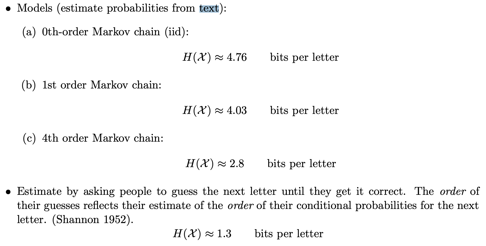
The figure above from http://reeves.ee.duke.edu/information_theory/lecture4-Entropy_Rates.pdf shows the th order entropy of English text based on a large corpus. We see the conditional entropies reduce (and will eventually converge to the entropy rate). The final figure is based on a "human prediction" experiment done by Shannon where he asked humans to predict the next character based on the past and used that as a probability model to estimate the entropy rate of text! We will look much more at how text compression has evolved over the years in the next chapter.
How to achieve the entropy rate?
Let's start small and try to achieve 1st order entropy (note that this is indeed the entropy rate for a first-order Markov chain). Assume we have a known stationary distribution and transition probability . Support we want to compress a block of length using bits.
The first idea might be to use a Huffman code on block of length . This would work but as usual we get unreasonable complexity. So we could consider working with smaller blocks. However, for non-iid sources, working on independent symbols is just plain suboptimal even discounting the effects of non-dyadic distributions. The reason is that we miss out on the dependence across the blocks.
As you might guess, a better solution is based on arithmetic coding (the basic principles are recapped below):

The above is for an iid source, but the basic idea of reducing the interval according to the probability of the symbol can be easily applied to the Markov case! Instead of reducing the interval by a factor of , we reduce it by . This is illustrated below for the given Markov source:

The general idea is simple: at every step, split interval by [more generally by ]. To see how this performs, consider the length of interval after encoding .
Thus the bits for encoding is given by which is
Thus the expected bits per symbol
Thus we can achieve the entropy rate for a first-order Markov source using arithmetic coding. This can be generalized to higher order Markov sources as well. In the next lecture, we will see how this approach can be generalized to achieve compression with arbitrary prediction models using context-based arithmetic coding as well as context-based adaptive arithmetic coding.
Context based arithmetic coding
Recall that we studied stationary process, Markov chains, conditional entropy, and entropy rate in the last lecture.
Conditional entropy was defined as
Entropy rate was defined as
Recall also that entropy rate is the fundamental limit of lossless compression for stationary sources.
This lectures asks the question - how do we compress a Markov/stationary source? We will study one technique for doing so - context based arithmetic coding.
Achieving the entropy rate for a first order Markov source
Let's start simple. How do we achieve the entropy rate for a first order Markov source with known probability distribution?
Recall entropy rate
For a first-order Markov source this is simply
This suggests two ways:
- Coding in bigger and bigger blocks (to achieve )
- Coding incrementally (to achieve )
We already saw an example of the first idea with Huffman coding at the end of the previous chapter. That suffers from complexity as the block size grows. Let us now focus on the second idea.
Recall arithmetic coding for iid sources:
The above is for an iid source, but the basic idea of reducing the interval according to the probability of the symbol can be easily applied to the Markov case! Instead of reducing the interval by a factor of , we reduce it by . This is illustrated below for the given Markov source:
The general idea is simple: at every step, split interval by [more generally by ]. To see how this performs, consider the length of interval after encoding .
Thus the bits for encoding is given by which is
Thus the expected bits per symbol
Thus we can achieve the entropy rate for a first-order Markov source using arithmetic coding.
Context based arithmetic coding
Generalizing this further, we get
So as long as we can estimate the probability distribution of the next symbol given some context, we can use arithmetic coding to encode the data. The bits used to encode is simply . Higher the probability of the actually observed symbol, lower the bits you pay!
For a th order model, the previous symbols are sufficient to predict the next symbol. But in general, the more past context you can use, the better the prediction. As an example let us consider using an LLM to predict the next token given some past:
>>> predict_next_token("than")
Token: x, Probability: 18.6%
Token: e, Probability: 8.5%
Token: , Probability: 5.2%
Token: the, Probability: 5.2%
Token: king, Probability: 4.3%
>>> predict_next_token("louder than")
Token: words, Probability: 30.4%
Token: love, Probability: 11.9%
Token: a, Probability: 11.2%
Token: the, Probability: 5.8%
Token: bombs, Probability: 4.7%
>>> predict_next_token("speak louder than")
Token: words, Probability: 47.8%
Token: money, Probability: 7.8%
Token: a, Probability: 4.7%
Token: the, Probability: 3.2%
Token: actions, Probability: 2.5%
>>> predict_next_token("Actions speak louder than")
Token: words, Probability: 96.5%
Token: the, Probability: 0.2%
Token: a, Probability: 0.1%
Token: any, Probability: 0.1%
Token: Words, Probability: 0.1%
We see that the prediction gets better as we use more context, and the probability of the actual token is higher. This is the basic idea behind context based arithmetic coding.
Before we look at some specific prediction models, let's look at the general framework for context-based arithmetic coding.
Total bits for encoding:
Let us think about how decoding would work. The idea is simple: the decoder uses same model, at step it has access to already decoded and so can generate the for the arithmetic coding step!
Now let us generalize this one more step: what if you don't already know the model? There are two common approaches:
Option 1: Two pass: first build ("train") model from data, then encode using it.
Option 2: Adaptive: build ("train") model from data as we see it.
These approaches have their pros and cons, some of which are listed below:
Two-pass vs. adaptive
Two-pass approach
✅ learn model from entire data, leading to potentially better compression
✅ more suited for parallelization
❌ need to store model in compressed file
❌ need two passes over data, not suitable for streaming
❌ might not work well with changing statistics
Adaptive approach
✅ no need to store the model
✅ suitable for streaming
❌ adaptively learning model leads to inefficiency for initial samples
✅ works pretty well in practice!
For the most part, we will focus on the adaptive approach, which is shown the figure below:

A few notes on this approach:
⚠️ It is important for encoder and decoder to share exactly the same model state at every step (including at initialization). Otherwise the models go out of sync and arithmetic decoding fails to recover the original data. This is especially important for neural net based models where there are sources of randomness such as GPUs. Note that this point affects both the adaptive and pretrained approaches.
⚠️ Be careful about updating the model with only after you perform the encoding for . As a general thumb rule, always think whether the decoder has the knowledge needed to perform the next step!
⚠️ Try not to provide probability to any symbol, otherwise arithmetic coding will not be able to produce a bounded output. The trick is to assign small but non-zero probability to all symbols, however unlikely they might be.
Compression and prediction
All of this discussion suggests a close relation between compression and prediction. In fact the cross-entropy loss for prediction (classes , predicted probabilities , ground truth class: ):
Loss incurred when ground truth is is
Exactly matches the number of bits used for encoding with arithmetic coding!
Prediction implies compression:
- Good prediction => Good compression
- Compression = having a good model for the data
- Need not always explicitly model the data
- Possible to use rANS instead of arithmetic coding in some settings
This also goes the other way:
- Each compressor induces a predictor!
- Recall relation between code length and induced probability model
- Generalizes to prediction setting
- Explicitly obtaining the prediction probabilities easier with some compressors than others. For compressors that explicitly model the data it is easier, but for others (such as LZ77) it is much harder to describe the probability model in a computationally efficient way. One can brute force compute the model by compressing all possible choices and then calculating the probabilities according to the code lengths, but this is computationally infeasible in many scenarios.
You can read more about this relationship in the recent perprint by DeepMind titled "Language Modeling Is Compression": https://aps.arxiv.org/abs/2309.10668.
Prediction models used for context based arithmetic coding
th order adaptive arithmetic coding
- Start with a frequency of 1 for each symbol in the th order alphabet (to avoid zero probabilities)
- As you see symbols, update the frequency counts
- At each step you have a probability distribution over the alphabet induced by the counts
Remember to update the counts with a symbol after you encode a symbol!
Example: if you saw BANA in past followed by N 90% of times and by L 10% of times, then predict N with probability 0.9 and L with probability 0.1 given a context of BANA.
Example: 1st order adaptive arithmetic coding
Consider the data sequence: 101011
We initialize the counts like
and assume the past is padded with 0s (to handle the initial condition).
For the first input 101011:
Current symbol: 1 Previous symbol: 0 (padding)
Predicted probability:
Counts: (this got updated)
For the second input 101011:
Current symbol: 0 Previous symbol: 1
Predicted probability:
Counts: (this got updated)
For the third input 101011:
Current symbol: 1 Previous symbol: 0
Predicted probability:
Counts:
and so on...
We observe a few things here:
- Over time this will learn the empirical distribution of the data
- We initially start off with uniform distribution in this example, but we can change prior to enforce some prior knowledge [of course both the encoder and the decoder need to know!]
- You can do this for (iid data with unknown distribution)!
th order adaptive arithmetic coding (AAC)
Let's test this out!
def freqs_current(self):
"""Calculate the current freqs. We use the past k symbols to pick out
the corresponding frequencies for the (k+1)th.
"""
freqs_given_context = np.ravel(self.freqs_kplus1_tuple[tuple(self.past_k)])
def update_model(self, s):
"""function to update the probability model. This basically involves update the count
for the most recently seen (k+1) tuple.
Args:
s (Symbol): the next symbol
"""
# updates the model based on the new symbol
# index self.freqs_kplus1_tuple using (past_k, s) [need to map s to index]
self.freqs_kplus1_tuple[(*self.past_k, s)] += 1
self.past_k = self.past_k[1:] + [s]
On sherlock.txt:
>>> with open("sherlock.txt") as f:
>>> data = f.read()
>>>
>>> data_block = DataBlock(data)
>>> alphabet = list(data_block.get_alphabet())
>>> aec_params = AECParams()
>>> encoder = ArithmeticEncoder(aec_params, AdaptiveOrderKFreqModel(alphabet, k, aec_params.MAX_ALLOWED_TOTAL_FREQ))
>>> encoded_bitarray = encoder.encode_block(data_block)
>>> print(len(encoded_bitarray)//8) # convert to bytes
| Compressor | compressed bits/byte |
|---|---|
| th order | 4.26 |
| st order | 3.34 |
| nd order | 2.87 |
| rd order | 3.10 |
| gzip | 2.78 |
| bzip2 | 2.05 |
We observe that the compression improves as we increase the order of the model, but only up to a point. The reason is due to the counts becoming sparse as we increase the order. This is a common problem with higher order models. The issues with this can be summarized as below:
- slow, memory complexity grows exponentially in
- counts become very sparse for large , leading to worse performance
- unable to exploit similarities in prediction for similar contexts. Each context is considered independent of each other, even if they are similar and hence the probability conditioned on them is likely to be similar.
These issues can be overcome with smarter modeling as discussed later. Also note that despite their performance limitations, context based models are still employed as the entropy coding stage after suitably preprocessing the data (LZ, BWT, etc.).
We also observe that th order AAC performs close to gzip, but not as well as bzip2. In the next chapters we will understand how gzip and bzip2 are able to achieve better compression by effectively making use of larger contexts.
Two-pass approach and Minimum Description Length (MDL) principle
What if we did a two-pass approach? In this case, we'll pay for the empirical conditional entropy for compression.
| order | adaptive | empirical conditional entropy |
|---|---|---|
| th order | 4.26 | 4.26 |
| st order | 3.34 | 3.27 |
| nd order | 2.87 | 2.44 |
| rd order | 3.10 | 1.86 |
We see that there is an increasing gap between adaptive coding performance and empirical entropy as we increase the order. The reason is that we are not taking into account the model size. As the order increases, knowing the empirical distribution becomes closer to just storing the data itself in the model. At the extreme, you just have a single long context and the model is just the data itself! In practice, adaptive models are often preferred due to their simplicity and not requiring two passes over the data.
This can be thought of in terms of the Minimum Description Length (MDL) principle, which considers minimizing the sum of model size and compressed size given model. This is shown in the figure below. As the model complexity grows, we can compress the data better but the model takes more bits to describe. Thus, there is a tradeoff and an optimum model size.

Other prediction models used for compression
We will not go very deep into the other prediction models used for compression, but will briefly mention them here.
- th order adaptive (in SCL): https://github.com/kedartatwawadi/stanford_compression_library/blob/main/scl/compressors/probability_models.py
- Solving the sparse count problem: These try to solve the sparse count problem by not forcing a particular but instead using a mixture of models of different orders. If you have seen a longer context several times, you use that to predict, but if not you can use the shorter context based prediction. These can do pretty well and are often used for heavy-duty entropy coding.
- Advanced prediction models:
- Neural net based (use a neural network as the predictor): NNCP, Tensorflow-compress, DZip
- Ensemble methods: CMIX, CMIX talk
- Resources: https://mattmahoney.net/dc/dce.html#Section_4
These are some of the most powerful compressors around, but often too slow for many applications!
We can quickly look at the advanced prediction models here.

Both DeepZip and NNCP use a neural net to predict the next character based on the context. They differ in how they train the neural net. DeepZip uses a two-pass approach, where it first trains the neural net on the data and then uses the trained model to compress the data. The trained model needs to be stored in the compressed file. NNCP on the other hand, starts with a random model (with the pseudorandom seed known to the decoder) and keeps updating the neural net as it sees more data.

CMIX uses several contexts (last byte, second-last byte, same bit in last byte, last word and so on) and maintains counts for all of them. A neural network and other techniques are then used to mix the prediction according to all the contexts and produce the final prediction. As time goes on the mixer is trained to focus more on models that predict the next symbol well.
Text compression over the years
To wrap up the context based compression discussion, let us look at how text compression has evolved over the years. The figure below shows the compression ratio for text compression over the years. We see how CMIX and NNCP have now beaten Shannon's entropy estimates for text compression!

LLM based compression - going beyond the MDL principle
We now consider a different setting where the model size doesn't matter, we just want to get the best compression possible. So we just throw our most powerful predictor at the problem, a model that would take gigabytes to describe, and use that to compress the data. In a traditional setting, the size of the model would be prohibitive to store as part of the compressed file (also painstakingly slow to compress and decompress). But this can still be relevant in a few cases:
- For understanding limits of compressibility/entropy rate estimation
- When there is a large amount of data of the same type and you can afford to deploy the model separately on each decompression node
- To demonstrate concepts in a compression course!
We will now look at using LLMs for compression. Note that LLMs are trained as predictors, and their loss function is simply the cross-entropy loss (or perplexity = ). Thus they are in-effect being trained for compression! We will use ts_zip: Text Compression using Large Language Models to use LLMs for compression, specifically the rwkv_169M and rwkv_430M models.
Let's look at some results for a 2023 novel (848 KB English text).

We see how LLM beats the other compressors by a wide margin, and how larger context helps a lot for LLMs. The bigger model does marginally better for both context lengths given that it is a more powerful predictor.
Now let us look at the compression ratio for an ancient Pali text (transcribed in Roman script):
| Compressor | compressed bits/byte |
|---|---|
| nd order AAC | 2.66 |
| gzip | 2.11 |
| bzip2 | 1.71 |
| small LLM model | 2.41 |
| medium LLM model | 2.19 |
Why do the LLMs no longer do so well compared to bzip2? Because this is not similar to anything it saw in the training dataset. Thus, our usual compressors that don't assume much about the data (gzip, bzip2) can do much better than LLMs in this case.
What if we took an even more powerful model. See below the results for Llama-13B (4 bit quantized) (using code here)
| Dataset | Context length | compressed bits/byte |
|---|---|---|
| 2023 short story | 10 | 1.228 |
| 2023 short story | 50 | 1.027 |
| 2023 short story | 512 | 0.874 |
Again we see how this gets amazing compression, even better than the smaller models above. Larger context length also helps, although with diminishing returns beyond a point. Now let's repeat this on a Sherlock Holmes novel:
| Dataset | Context length | compressed bits/byte |
|---|---|---|
| Sherlock | 10 | 1.433 |
| Sherlock | 50 | 0.542 |
| Sherlock | 512 | 0.200 |
This one is way too good! What's going on?
The reason is that the LLM is able to memorize a lot of its training dataset and thus achieve amazing compression. This is a common problem in machine learning, and therefore the evaluation needs to be done on a held-out dataset.
To summarize the LLM based compression results:
- Remarkable results, far beyond the commonly used compressors and even better than the state-of-the-art compressors like CMIX and NNCP (see the results on the ts_zip page)
- Be careful about model-data mismatch (e.g., Pali text) and overfitting to training data (e.g., Sherlock)
- Very slow and compute intensive today, but they might become practical with hardware acceleration in future (at least for some applications)
- Resources for futher reading:
- ts_zip: https://bellard.org/ts_server/ts_zip.html
- DeepMind paper: https://aps.arxiv.org/abs/2309.10668
Summary
We studied context based arithmetic coding, and looked at various models ranging from simple th order adaptive models to advanced neural net based models. We also looked at LLM based compression, and saw how it can achieve amazing compression shining a light on the lower bounds for compression. In the next lecture we will look at a different class of compressors: universal compressors and dive into the realm of practical compressors that are ubiquitous today.
Lossy data compression
The second set of lecture notes pertains to lossy data compression
Lossy Compression Basics and Quantization
Recap
In the first half of this course, we learned about lossless compression techniques and the fundamental limits imposed by entropy. We also learnt about the tradeoffs for various entropy coders. Here is a summary:
- Learnt about fundamental limits on lossless compression: entropy,
- Thumb rule:
- Learn about various lossless compressors aka entropy coders and their implementations
- Block codes: Shannon coding and Huffman coding
- Streaming codes: Arithmetic coding and Asymmetric Numeral Systems
- Universal (pattern) matching codes: LZ77
- Learnt about how to deal with non-IID sources
- Context-based coding
- Adaptive coding
Introduction
However, today we want to discuss a different setting. Many real-world data sources such as audio, images, and video are continuous in nature rather than discrete. To represent these sources digitally, we need to approximate and quantize them, which inherently introduces some loss of information. Previously, we assumed a discrete information source that could be losslessly compressed by entropy coding techniques like Huffman or arithmetic coding. The discrete entropy represented a hard limit on the best possible lossless compression. Let's think about a continuous source now. How much information does it contain?
Quiz-1: How much information does a continuous source X contain?
A continuous source contains an infinite amount of information, so it cannot be represented digitally in a lossless manner. This is in-fact related to a fundamental property about real numbers: they are uncountable, i.e., there are infinite real numbers between any two real numbers. Instead, we need to approximate it by quantizing to a discrete representation. This quantization step will inevitably induce some loss or distortion.
The key aspects of lossy compression are:
- It allows some loss of information or fidelity in order to achieve higher compression. The original source cannot be perfectly reconstructed.
- Lossless compression is a special case of lossy compression with zero distortion.
- Quantization is used to convert the continuous source into a discrete representation. This is a fundamental part of lossy compression.
- Entropy coding is still widely applicable and typically used as the final step after quantization.
Lossy Compression Basics: Rate-Distortion Tradeoff
A continuous source contains infinite information, so we cannot represent it exactly. We need to approximate it, which implies some unavoidable loss of information.
Distortion (D) is a quantitative measure of this loss of information introduced by the approximation/quantization process. Common distortion metrics include:
- Mean squared error (MSE):
- Mean absolute error (MAE):
In lossy compression, we have a choice regarding the tradeoff between rate and distortion:
Rate (R) refers to the number of bits used per sample to represent the lossy approximation of the source.
Higher rate implies we can represent the source more accurately with lower distortion D.
Lower rate means we have to tolerate more distortion to achieve higher compression.
This inherent tradeoff between rate R and distortion D is fundamental to lossy compression and quantization. Figure below shows a cartoon of the rate-distortion tradeoff. Fundamental to this discussion is the fact that we always strive to achieve the best possible rate-distortion tradeoff, i.e.
- given a distortion level (), we want to achieve the lowest possible rate ()
- given a rate (), we want to achieve the lowest possible distortion ()
In next set of notes, we will learn more about the rate-distortion theory which provides a theoretical framework for this tradeoff.
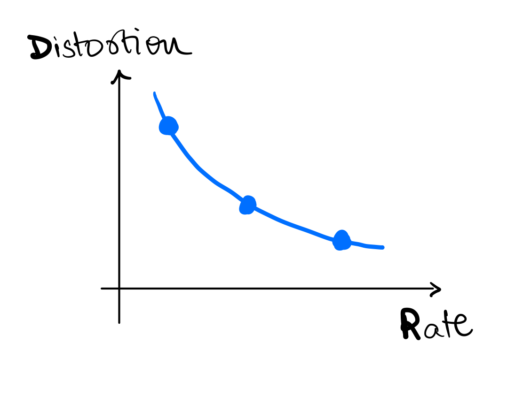
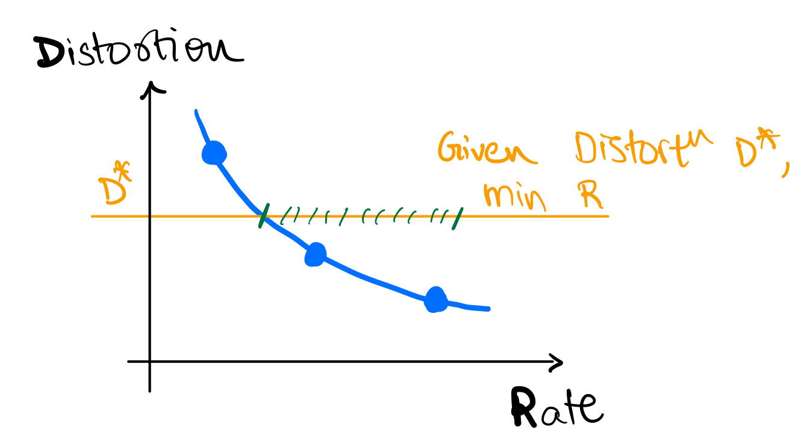

Example
Let's work through an example together.
Example 1
- Let's say you are measuring temperature (
T) in a room, say in Celsius, at an hourly interval.- Remember, physical
Tis a continuous source.
- Remember, physical
- Say your sensor is very sensitive and it records
T = [38.110001, 36.150901, 37.122020, 37.110862, 35.827111]
Quiz-2: How many bits do we want to represent T?
It depends on the application! If we are using it to control the AC, we might need more bits than if we are using it to decide whether to wear hoodie or T-shirt. In either case,
- we need to decide on the distortion we are OK with
- we can agree these many decimals are waste of bits
Quiz-3: What are some reasonable values to encode?
One reasonable way to encode is to round T to the nearest integer, i.e., T_lossy = [38, 36, 37, 37, 35]. This is similar to converting T to int from float.
Quantization
What we did in the previous example is called quantization (or binning).
- Quantization is the process of mapping a continuous source to a discrete source.
- Quantization is a lossy process, i.e., it introduces distortion.
- Quantization is a fundamental operation in lossy compression!
- Quantized values are also sometimes called symbols or codewords, and the set of quantized values is called codebook or dictionary.
- In previous example, codebook is
{35, 36, 37, 38}and codewords for each symbol are{35, 36, 37, 37, 35}.
- In previous example, codebook is
Quiz-4: For a codebook of size N, what is the rate R?
The rate because we have quantized symbols and we need bits to represent each symbol. Alternatively, we can say the quantized value for each symbol can take unique values.
Quantization Example - Gaussian
Example 2
Now say, X is a Gaussian source with mean 0 and variance 1, i.e., . Say we want to represent X using just 1 bit per symbol.
Quiz-5: What are some reasonable values to encode?
We can decide to convey just the sign of X, i.e., as the distribution is symmetric around 0. Say we get a positive value for , what should be the quantized value of the recovered symbol? For this, we need to decide on the distortion we are OK with. For today's discussion let's say we are concerned about MSE distortion.
Quiz-6: What should be the codebook for this example?
If you have taken signal processing, you know that the conditional expectation of X given the observation is the best linear estimator for MSE distortion. This is called Minimal Mean Square Estimator (MMSE). Mathematically, if we want to find
If you have not seen this before, here are some resources:
Therefore, in our case, the codebook should be .
For gaussian, this is . We can work this out as follows: where the first step follows from definition of conditional expectation and symmetry of gaussian distribution around 0. Similarly, we can show that .

Scalar Quantization
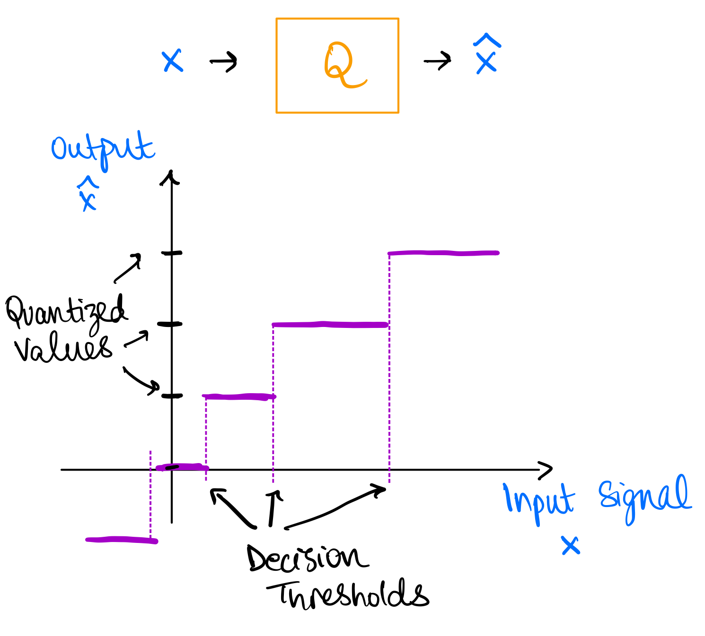
This is an example of scalar quantization. In scalar quantization, we quantize each symbol independently. The figure above explains the process of scalar quantization. Quantization can be thought of as a function which maps continuous symbols to the reconstructed symbols . The quantization function is called quantizer and is denoted by . The quantizer is defined by the codebook , which is the set of quantized values. The quantizer maps each symbol to the nearest quantized value in the codebook, i.e., where is the distortion (or some other distance) metric. The process defines decision thresholds which are the regions where all values of are mapped to the same quantized value in the codebook .
More formally, we can also think of a quantizer as a partition of the input space into disjoint regions such that and for and a mapping from each region to a quantized value .
Vector Quantization
So far, we are quantizing each symbol independently. But can we do better? Maybe we can work with two (or more) symbols at a time? Say we have , where
- you can also think of it as you generated
2*Nsamples from and then split them into two groups of sizeN(similar toblock codesin lossless compression) - or you can think of it as you have two sensors measuring the same source
- or you can think of it as having two sensors measuring two different sources
Quiz-7: We want to compare it with 1 bit/symbol scalar quantization. What's the size of codebook allowed?
The size of the codebook will be . Generalizing, we can have codebook of size for vectors (blocks) of size and bits/symbol. In other words, bits/symbol since we are using quantized values to represent symbols.
More formally, generalizing what we have seen so far,
- A quantizer is a mapping where is the "codebook" or "dictionary" comprising of -dimensional vectors.
- The mapping is defined by: where is a partition of
- The rate is
Vector quantization provides following benefits over scalar quantization:
- We can exploit dependence between vector components
- We can have more general decision regions (than could be obtained via Scalar Quantization)
The image below shows a basic example where vector quantization provides advantage over scalar quantization. Assume you have two dimensional probability density as shown and you want to quantize it. This represents a case where both are uniformly distributed with same sign.
You can either quantize each dimension independently (scalar quantization) or you can quantize both dimensions together (vector quantization). The figure below shows the decision regions for both cases. We take a specific example for vector quantization as shown in the figure. For scalar quantization we have codewords, i.e. and therefore the rate is , whereas for the vector quantizer we only need a strict subset of the scalar quantize codewords requiring half of the codewords, i.e. and therefore the rate is . It is obvious to see here that the distortion for both these quantizers will be same but the rate for vector quantizer is lower.
This is also obvious intuitively! Vector quantization allows us to exploit the correlation between the two dimensions and therefore we can achieve the same distortion with lower rate. It takes advantage of the fact that both dimensions are uniformly distributed with same sign. Therefore, vector quantization provides more flexibility in choosing the decision regions.

Some additional comments on VQ
Optimal regions are generally not uniform (as in scalar quantization) even in simple uniform IID case! In the 2D case of uniform IID, a hexagonal lattice provides most optimal regions with respect to MSE distortion. This is called lattice quantization or Voronoi diagram and can accommodate more than 2 dimensions. In the case of uniform IID variables in 2D, . This conveys two points to us:
- VQ performs better than SQ even in simple uniform IID case. As seen previously it performs even better in correlated cases.
- This can be a lot of effort for little gain given the source distribution, e.g. in this case we only gain 3.8% in MSE distortion.
Here is a proof for the above result:
Scalar Quantization of each component separately would yield square decision regions of the form as shown in following figure, where is the quantization step size.

The area of the decision region is . Therefore, since we have uniform
Alternatively, we could have chosen a vector quantizer with hexagonal decision regions as shown below:
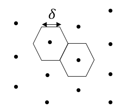
For this case, using symmetry, the area of the decision region is six times a triangle shown below. Therefore, .

Finding the MSE is left as an exercise to the reader, but it can be shown that
For comparing these two schemes, we will compare them for and such that , so that we have same rate (same number of quantization points covering the same area). This gives us the desired result
Conslusion: Even for a simple uniform IID source, there is benefit in vector quantization over scalar quantization.

The above image is a paper abstract from On universal quantization, Ziv. As you can see under certain conditions, scalar quantization can be competitive with vector quantization. However, in general, vector quantization is better than scalar quantization.
Vector Quantization Algorithm
In general, optimal regions are not easy to compute, and we need to resort to iterative algorithms. Quiz-8: Have you seen this problem before in some other context?
It's same as K-means clustering algorithm in ML! Also called as Lloyd-Max algorithm or Generalized Lloyd algorithm. We want to cluster data points into N clusters corresponding to codebook (k in k-means) such that the average distortion is minimized.
- First proposed by Stuart Lloyd in 1957 (motivated by audio compression) at Bell Labs
- Was widely circulated but formally published only in 1982
- Independently developed and published by Joel Max in 1960, therefore sometimes referred to as the Lloyd-Max algorithm
- Generalized Lloyd specialized to squared error is the Kmeans clustering algorithm widely used in Machine Learning
K-means Algorithm
Given some data points, we can compute the optimal codebook and the corresponding partition of the data points. The main idea is to do each-step iteratively:
- Given a codebook, compute the best partition of the data points
- Given a partition of the data points, compute the optimal codebook
- Repeat until convergence
Here is a pseudocode to illustrate the algorithm:
def k_means(data, k, max_iterations=100):
centroids = initialize_centroids(data, k) # some random initialization for centroids (codebook)
for iteration in range(max_iterations): # some convergence criteria
# Assign data points to the nearest centroid -- this is the partition step
clusters = assign_data_to_centroids(data, centroids)
# Calculate new centroids -- this is the codebook update step
new_centroids = calculate_new_centroids(data, clusters)
# Check for convergence
if np.allclose(centroids, new_centroids):
break
centroids = new_centroids # update centroids
return clusters, centroids
def initialize_centroids(data, k):
# Randomly select k data points as initial centroids
return data[np.random.choice(len(data), k, replace=False)]
def assign_data_to_centroids(data, centroids):
# Assign each data point to the nearest centroid
distances = np.linalg.norm(data[:, np.newaxis] - centroids, axis=2)
clusters = np.argmin(distances, axis=1)
return clusters
def calculate_new_centroids(data, clusters):
# Calculate new centroids as the mean of data points in each cluster
new_centroids = np.array([data[clusters == i].mean(axis=0) for i in range(len(np.unique(clusters)))])
return new_centroids
More resources
Following google colab notebook contains code and additional examples for vector quantization: Notebook
We only scratched the surface of quantization. There are many more advanced topics:
- Constrained vector quantization
- Predictive vector quantization
- Trellis coded quantization
- Generalized Lloyd algorithm
For more details, see following resources:
Next time
We will look into the question of what is the fundamental limit on lossy compression, i.e. what is the best possible rate-distortion tradeoff?
Rate Distortion Theory
Entropy, Conditional entropy Recap:
In case of lossless compression we saw information theoretic quantities such as entropy: , conditional entropy: etc.
To recap:
-
Entropy: Let be a random variable, with alphabet and discrete probability distribution . i.e. one can imagine the samples generate by the random variable to be independent and identically distributed as per distribution .
Then the entropy of the random variable is defined as:
-
Joint Entropy: The joint entropy of discrete random variables with distribution is simply the entropy of the joint random variable .
- Conditional Entropy/Relative Entropy The conditional entropy between two discrete random variables is defined as:
Note that has alternative definitions:
i.e. it is the average of the entropies
Mutual Information
For today's discussion another important information theoretic quantity which would be interesting to us is the mutual information
Let be two random variables with joint distribution . Then we define the mutual information between as:
One intuitive explanation for mututal information is that it is the difference between sum of individial entropies and the joint entropy between two random variables , and so in a way capture how much information is common between .
Mutual information has some nice properties, which we will use:
- property-1: : It is clear from the symmetry that mutual information between is equal to mutual information between
-
property-2: : This can be shown using the property of joint entropy: .
-
property-3: :
-
property-4: : This follows from the non-negativity of the and the property-3.
Mutual Information has a very important connection to lossy compression, but even beyond that in Information theory in general. For more information look at the EE276 course notes on communication capacity
Lossy Compression setup
Let us recap the lossy compression setup, and now that we are going to discuss this in detail, let us define it more concretely.
Lets say we are given a sequence of random variables , Our goal is to encode this sequence to bits, using a lossy encoder. We also decode back the bits to reconstruction , using a lossy decoder.
## Encoding
X_1,X_2, ..., X_k ====> [LOSSY ENCODER] ==> 0100011...1 (n = log2(N) bits)
## Decoding
0100011...1 (N bits) ======> [LOSSY DECODER] ==>
Y_1, Y_2, \ldots, Y_k
At this point, we need a few more terms to understand the performance of our lossy compressor:
- Rate : the compression rate is defined as, the average number of bits used per source symbols:
- distortion : As the compression is not lossless, we also need to know how far the reconstruction is from the input .
For simplicity lets stick to per-symbol distortion like mean square error, or hamming distortion. Thus,
For example:
- Average Distortion We mainly care about the average distortion: over the random variables .
Rate-distortion function
One interesting question to answer is: "What is the best rate R we can achieve for distortion at max D"? i.e. If the target distortion of our lossy compressor is , what is the best we can compress the data to? We define this optimal rate to be , the rate-distortion function.
Thus:
This is the precise problem Shannon solved.
Let be data generated i.i.d. Then, the optimal rate for a given maximum distortion is:
where the expectation in the minimum is over distributions , where are any arbitrary conditional distributions.
Here are some examples:
Example-1: for bernoulli r.v:
Let . and let i.e the Hamming distortion. Then:
where -> binary entropy function of .
The formula is not very intuitive. But, it is clear that:
-
decreases as increases; this should be expected as the bits required should reduce if the allowed distortion is increasing.
-
if ; This is also quite intuitve as if allowed distortion is , we can always just decode all zeros . For all zeros, the average distortion is .
Example-2: for gaussian r.v.:
Let's take a look at another example: Let , i.e. the data samples are distributed as unit gaussians. Also, lets consider the distortion to be the mean square distortion: i.e the mse distortion. Then:
Let's try to intuitively understand why this is the case:

- If 's are i.i.d , then it is clear that with high probability:
- This mainly follows from the law of large numbers, and that the variance of is . Thus, we can say that will lie in a k-dimensional sphere of radius , with high probability.
For the remaining discussion, we can thus focus our attention on vectors , only lying inside this sphere of radius .
- Now, lets say we want to cover this k-dimensional sphere of radius with k-dimensional spheres of radius . How many spheres do we need?
We can approximate this number based on the volumes of the spheres:
Although this approximation might feel very loose, as the dimension increases, it can be shown that the number of spheres of radius required to cover the sphere of radius , is indeed approximately equal to:
-
Note that we can use these spheres of radius , as centroids for vector quantization, as we saw in the last lecture, and we would get a distortion of at max , as the squared distance between any point in the sized circle is at max with one of the centroids.
-
Thus our , the rate for distortion at maximum is:
Hope this hand-wavey "proof" gives an intuition for the function for unit gaussian. The proof logic can however be made more precise.
NOTE: Similar idea proof holds for general distributions, using typical sequences balls. We won't be able to go much into the details of the Shannon's lossy compression theorem in the course unfortunately, but here are lecture notes in case you are interested: EE376a Lossy compression notes
We can also experiment with this idea, here is the R-D curve for unit gaussian and the practical performance in . We see that the R-D performance even with is quite reasonable.

We can also see the convergence as increases:
## Rate: 1, optimal_mse: 0.25
k: 1, N: 2, Rate: 1, mse_loss: 0.37
k: 2, N: 4, Rate: 1, mse_loss: 0.36
k: 4, N: 16, Rate: 1, mse_loss: 0.33
k: 8, N: 256, Rate: 1, mse_loss: 0.29
...
Achieving the R(D) in general
We saw briefly how we can achieve the optimal function using vector quantization for data distributed as i.i.d unit gaussians.
The Broad idea of using vector quantization can be actually shown to asymptotically optimal for any data distribution. i.e. as the dimension of data increases, using vector quantization, we can achieve optimal performance.
Although the convergence w.r.t can be slow. In the next lecture we will see how we can accelerate this convergence.
Lossy compression theory
We continue with lossy compression and rate distortion function (Shannon's RD theory) and applications in current technologies.
We'll start with things that seem unrelated but we'll bring it all together towards the end. We'll only touch on some of the topics, but you can learn more in the references listed below and in EE 276.
We'll start with the rate distortion function and see how it carries over to sources with memory. We'll also look into Gaussian sources with memory. Finally, we'll look at the implications to transform coding which is commonly used today.
Reminder from linear algebra:
Consider (matrix vector product)
Then the square of the Euclidean norm (sum of square of components), also denoting the energy in the signal is
In particular, if is a unitary transformation, i.e., all rows and columns orthonormal vectors , then we have This is called the Parseval's theorem which you might have seen for Fourier transform. In words, this says that the energy in transform domain matches the energy in the original.
If and , then . That is to say, unitary transformation preserves Euclidean distances between points.
Lossy compression recap
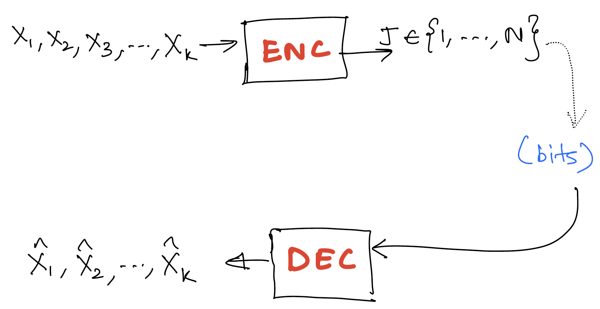
Recall the setting of lossy compression where the information is lossily compressed into an index (equivalently a bit stream representing the index). The decoder attempts to produce a reconstruction of the original information.
The two metrics for lossy compression are:
- bits/source component
- distortion [single letter distortion - distortion between k-tuples defined in terms of distortion between components]
Transform coding
Notation: we denote as which can be thought of as a column vector.
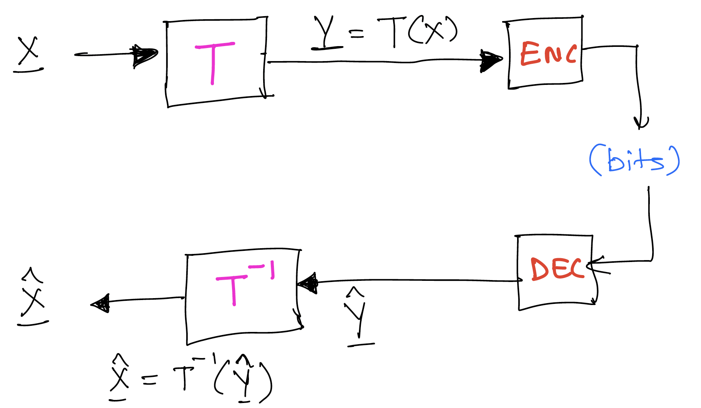
Here we simply work with an arbitrary transform , with the only requirement being that is invertible and we are able to efficiently compute and . In this framework, we simply apply our usual lossy encoding in the transform domain rather than in the original domain.
In particular, when for some some unitary (e.g., Fourier transform, wavelet transform). Then This corresponds to the squared-error distortion. Any lossy compression you do on , you get the same square error distortion for the original sequence as for the .
Why work in the transform domain? Often in the transform domain, data is simpler to model, e.g., we can construct transform in a way that the statistics of are simpler or we get sparsity. Then we can appropriately design lossy compressor to exploit the structure
Nowadays people even go beyond linear transforms, e.g., learnt transforms using deep learning models. Can even go to a vector in a smaller dimensional space, e.g., in VAE based lossy encoders. This can allow doing very simple forms of lossy compression in the transform domain.
Shannon's theorem recap
For "memoryless sources" ( are iid ~),
We sometimes write to represent this quantity when we want to be explicit about the source in question.
Beyond memoryless sources
Consider source , reconstruction . Then,
Just like was the analog of entropy of , is the analog of entropy of the n-tuple.
Now assume we are working with a process which is stationary. Then we can define . Similar to our study of entropy rate, we can show that this limit exists.
Shannon's theorem for lossy compression carries over to generality. That is, the best you can do for stationary processes in the limit of encoding arbitrarily many symbols in a block is .
Rate distortion for Gaussian sources
Note: For the remainder of this discussion, we'll stick to square error distortion.
Why work with Gaussian sources? It is a good worst case assumption if you only know the first and second order statistics about your source. This holds both for estimation and lossy compression.
For , denote by .
Recall from last lecture that for (above it is just ).
We can compactly write this as , where . This is shown in the figure below.
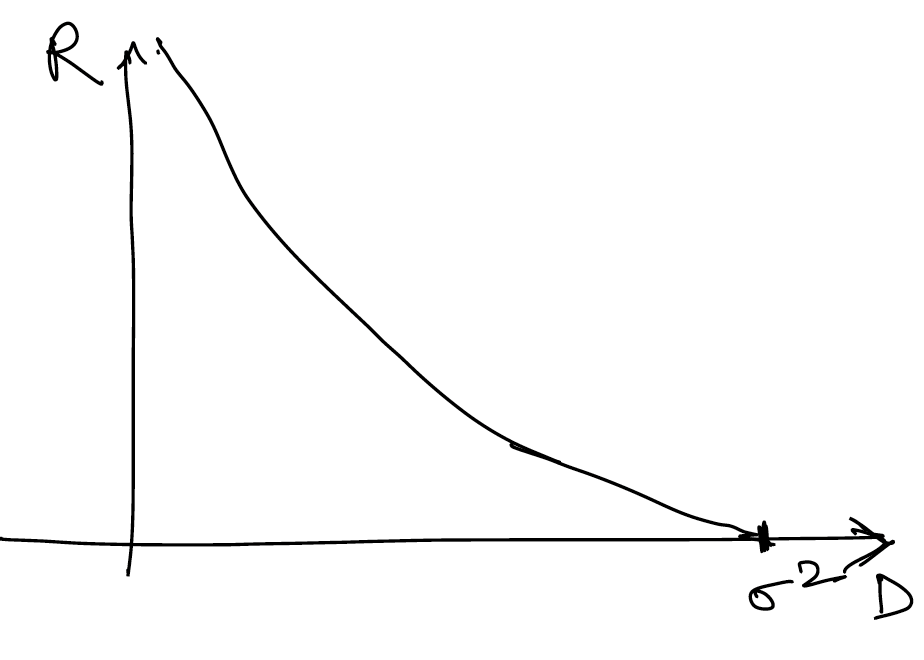
Similarly for , independent, denote by .
It can be shown that Another way to write this is
Intuition: the result is actually quite simple - the solution is just greedily optimizing the and case (decoupled), and finding the optimal splitting of the distortion between and .
Using convex optimization we can show that the minimum is achieved by a reverse water filling scheme, which is expressed in equation as follows:
For a given parameter , a point on the optimal rate distortion curve is achieved by setting
- for
And the rate given by
This can be expressed in figures as follows (assuming without loss of generality that ):
When is smaller than both and , we choose both and to be equal to ( in this case). We assign equal distortion to the two components, and higher rate for the component with higher variance.

When exceeds but is below , we set to be , and choose such that the average distortion is . The idea is that setting higher than doesn't make sense since the rate is already for that component.

When is equal to we can just set and . Here the rate is for both components!
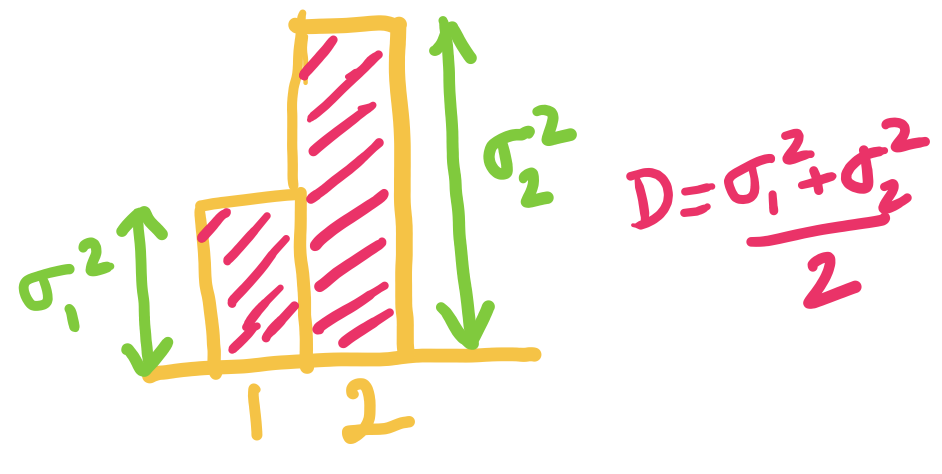
This generalizes beyond components. For independent with , we define analogously, and can very similarly show that .
Similar to before, the minimum is given by , .
Rate-distortion for stationary Gaussian source
Going back to a process zero mean Gaussian, then for any unitary transformation if then we can show [since the distortion is the same in both domains]. Recall that by using the transformation it's possible to go from a scheme for compressing to a scheme for compressing (and vice versa) without any change in the distortion.
Therefore we can take the diagonalizing unitary matrix which converts to a such that has independent components. The variances of will be the eigenvalues of the covariance matrix.
Thus, we have
where the 's are the eigenvalues of the covariance matix of .
When are the first components of a stationary Gaussian process with covariance matrix for and , with . Then we have where is the vector of eigenvalues of .
Now, we use a theorem to show a profound result for Gaussian processes.
Theorem (Toeplitz distribution) Let be the spectral density of and be a continuous function. Then
Specializing this theorem to and to , we get
The rate distortion function of a stationary Gaussian process with spectral density is given parametrically by
This is shown in the figure below, suggesting that the reverse water-filling idea extends to Gaussian processes once we transform it to the continuous spectral domain! This gives us motivation for using working in the Fourier transform domain!
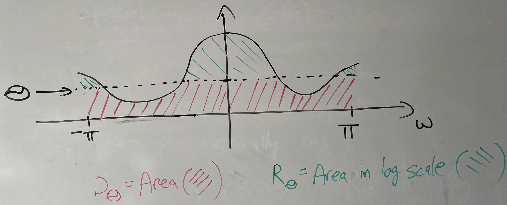
Finally, for , we can show that where is the variance of the innovations of . This can be used to justify predictive coding ideas.
Reference
For more details on this, you can read the survey paper "Lossy source coding" by Berger and Gibson available at https://ieeexplore.ieee.org/document/720552.
Resources
Interested in data compression? Great! We list a few resources (apart from the lecture notes) which might be useful to take a look.
NOTE: If you find a resource which you found useful and is not listed here, please file an github issue at https://github.com/stanfordDataCompressionClass/notes.
1. Software
A great way to learn about data compression is to play around with the compression algorithms themselves.
- Stanford compression Library: A library of compression algorithms implemented in native python for accessibility and educational purpose. Take a look at the tutorials (in progress) to get started! We will also be using the library as a basis for the course assignments.
- Audio Compression code/book A python based implementation of audio compression, in form of tutorials.
- Introduction to Digital Video compression: Great hands-on tutorial on digital video coding.
- H264 in Python: Experimental implementation of H264 in pure Python
2. Video Resources
Interested in data compression? Here are some nice youtube videos to watch to get an introduction. Most of them are beginner-friendly and are useful to get a sense of the data compression.
Here are a set of videos to watch at leisure to get an intuition for compression:
- Compressor Head playlist: This is a series of short talks by a google engineer. Very good introductory videos
- Huffman Coding (Tom Scott): I love Tom Scott and how well he explains things. Here is a nice video on Huffman coding
- Why Snow looks terrible on video, Why Night scenes look bad on video: Very nice two videos by Tom Scott again which gives a brief peek into video compression algorithms
- PNG Image Compression: video on PNG lossless compression
- JPEG compression: A bit more detailed video on JPEG compression
- Arithmetic coding series: Great sequence of lectures Information theory in general and particularly on Arithmetic coding. One of the best I found on this subject.
3. Textbooks, research papers
Although there are no textbooks which exactly correspond to the course material, but here are few books which might be relevant.
- Elements of Information Theory: Classic textbook on Information Theory
- Introduction to Data Compression, Guy E. Blelloch: Set of lecture notes/book on Data Compression by Guy E. Blelloch, CMU 2013
- Data Compression Explained, Matt Mahoney: A nice set of lecture notes on Data Compression by Matt Mahoney.
- JPEG paper: Summary of JPEG by Gregory K. Wallace
4. Blogs/websites
The web is filled with great engineers and researchers writing blogs related to Data Compression. We list a few below:
- Christopher Olah's Blog: A fun visual introduction to Information Theory.
- Yann Collet's Blog: Great blog by Yann Collet on implemeting fast and efficient data compression algorithms
- Fabian Giesen's blog: Blog by Fabian Giesen. (The parts related to rANS implementation are particularly great!)
- On understanding zlib: Introduction to zlib by Euccas Chen.
- Modern LZ Compression: Walk-through of modern LZ compressors by Gary Linscott.
- DCT: A nice blog post on DCT by Prof. Dr. Edmund Weitz
- DCT History: A small red on the history of DCT by Nasir Ahmed.
- Tossing a Biased Coin: An accessible exploration of how to generate fair randomness from a biased coin by Michael Mitzenmacher.
Homeworks
Please find here the homework problems for the latest iteration of the course!
Projects
The project is an important part of the course (and constitutes 30% of the course grade). This documentation serves as an introduction to the project expectations, deliverables etc. More details will be added as we go along.
Project Logistics
Following are the due dates for different components of the project. All (except final presentation) will be due on Gradescope. More details for each component will be provided in the subsequent sections.
| Weightage | Description | Due Date (midnight PT) | |
|---|---|---|---|
| Proposal | 5% | One page proposal | 2025/10/30 |
| Milestone Report | 5% | Upto two pages progress report + code (if any) | 2025/11/20 |
| Final Presentation | 5% | 5 min presentation + 5 min QnA | 2025/12/04 (last class) |
| Final Report and Code | 15% | Detailed report and code submission | TBD |
Project Expectations
The main goal of the project is to give you all some experience of working on a problem related to data compression. Ideally, the project will involve some component of reading, understanding and also implementation of a compression technique.
The expectation for the project is as follows:
- Literature review of a compression method/area. You are expected to work with your mentor in understanding the topic you choose, and narrow down on a concrete problem to work on for the project.
- Implement the compression method (either using SCL or otherwise). You will work with your project mentor to ensure that your implementation is well documented and tested.
- Finally, write a report explaining the theoretical ideas + implementation details behind your method.
Given that the quarter is short, the problem on which you will work on will be a bit concrete. We will release a list of topics suggested by instructors below. You are welcome to come up with your own ideas applying compression to your domain of interest or simply exploring a particular theoretical result or practical technique. Please work with the instructors to ensure the feasibility of the project in the given time frame.
The expected team size for each project is 1-2 students. Groups of 3 are also ok in exceptional circumstances given the scope of the project. Each project will also be assigned a mentor from the teaching staff. The project team and the mentor can decide to meet as per need.
Project Deliverables
I. Project Proposal
Due: 2025/10/30, Thursday, 11:59pm
Please use the time till the deadline to explore and decide what project you would like to work on. Before you submit the proposal, ensure to have at least one 10 minute 1-on-1 chat with the teaching staff (as a team), and finalize on the project idea. The list of finalized project ideas will be maintained here: TBD. Once the project is finalized, we will assign a project mentor (Kedar/Shubham/Tsachy/Jiwon) who can help you with references for the project, help with programming, etc. As we are a small class, ideally we would not like to repeat the exact same project. The teaching team will help you modify your idea appropriately in case someone else is working on the exact same project.
For deliverable, we will follow a similar template as our friends from CS231N. For the project proposal please submit a 1-page summary on what your project idea is, and an approximate timeline as to what you are planning to achieve by week-x etc. Some questions the proposal should answer:
-
What is the problem that you will be investigating? Why is it interesting?
-
What reading will you examine to provide context and background?
-
What method or algorithm are you proposing? If there are existing implementations and/or theoretical justifications, will you use them and how? How do you plan to improve or modify such implementations? You don't have to have an exact answer at this point, but you should have a general sense of how you will approach the problem you are working on.
-
How will you evaluate your results? Qualitatively, what kind of results do you expect (e.g. plots or figures)? Quantitatively, what kind of analysis will you use to evaluate and/or compare your results (e.g. what performance metrics or statistical tests)?
II. Project Milestone
Due: 2025/11/20, Thu, midnight PT
For the project milestone, please submit a 2/3 page write-up on the technique/method you chose and link to your in-progress code as a GitHub repo (if any). If possible, you can use GitHub markdown (.md) file as your milestone report, put the .md it on your code repo, and provide us a link to that. That way you will find it easy to later modify it to get the final report. The milestone should roughly include the following sections:
-
Introduction: what is the problem, why is it interesting?
-
Literature/Code review: summarize any existing papers/implementations that you referred to
-
Methods: what do you plan to implement as part of this project? What end result do you expect to achieve and how will you evaluate it qualitatively and quantitatively?
-
Progress report: what have you already finished (please include code link where relevant)? What is the plan for the remaining weeks?
III. Final presentation
2025/12/04 Thu Time TBD, Location TBD
Slides due: TBD
The Final presentation will be during the last class (note we will have a longer last class slot!). The presentation will involve lightning talks: (short 5min talk + 5min QnA).
Attendance is mandatory for the presentation. You will work with your mentor on making sure the presentation is interesting and useful to your classmates :).
Guidelines:
- You need to submit your slide-deck by TBD using gradescope. Please submit a PDF of the slides. No late days allowed for this submission!
- You will have 5 minutes for your presentation, and 5 minutes for QnA. Here are some guidelines on how to give a good lightning talk.
- You can assume you are presenting to peers who have taken the class and are aware of the basic terminology. Please use these 5 minutes to concisely convey what you have been working on with such an audience in mind, e.g. you don't have to explain entropy coding basics and/or image compression basics. You can use the allotted time to explain the algorithm you are working on, why is it exciting, what did you learn and show the results so-far. Main idea is to ensure you are able to convey the key ideas of your project to your peers.
- You can use any presentation tool you like. We recommend using Google Slides or PowerPoint. You can also use LaTeX Beamer if you are comfortable with it.
- We plan to have some drinks and snacks for everyone during the presentation. We also plan to have pizza for dinner during the presentation. :)
- We will be making the projects public after the class ends. If you do not wish your project to be made publically available, please let us know.
IV. Final report and code
Due: TBD
-
The final submission involves a 4-5 page report on your project idea. It should introduce the problem, describe in detail the technical details, and also briefly talk about results and other implementation details.
-
You also need to submit a link to your code repository. The expectation is to submit a well documented and well tested code which is reproducible, and something someone else (or even you) can build upon.
Your mentor will work with you on setting expectations, and helping you review the report/code before the submission.
Project Suggestions
The list of projects from previous iterations of the course can be found here.
Stanford Compression Library (SCL): A brief tutorial
This document provides an overview of motivation and SCL structure. We end this tutorial with an exercise on SCL and show how to use SCL in google colab notebook. For students, it is highly recommended to attempt the exercise. Please reach out to the teaching staff if you have any questions.
Introduction
The Stanford Compression Library is being implemented to aid research in the area of data compression. As students working in the field of data compression, we noticed that although these pieces of software are used everyday (gzip, jpeg etc); unfortunately there is no good pedagogical/research implementation which can be tweaked quickly.
The goals of SCL are:
- To provide pedagogical implementations of common data compression algorithms
- To provide convenient framework to quickly modify existing compression algorithm and to aid research in the area
- More selfishly, to understand these algorithms better :)
Installation
Before we dive deep into the library, please make sure you have followed the installation instructions in the README and that all the tests are passing. Please file an issue if you face problems with the setup.
Using the library
Let's look at the library structure next to understand how to use the library. Please look at next section on SCL basics to understand the basic building blocks of SCL.
Exercise
After understanding the abstractions and various classes introduced, lets take a look at the following exercise. This was a problem from year 2022 homework, and so to make it most useful it might be best to treat it as such!
Let us go over the main library structure.
Library Structure -- Useful Building Blocks
The main library folder is scl. The scl directory structure is as follows:
├── compressors
│ ├── arithmetic_coding.py
│ ├── elias_delta_uint_coder.py
│ ├── fano_coder.py
│ ├── fixed_bitwidth_compressor.py
│ ├── ... (more compressors)
├── core
│ ├── data_block.py
│ ├── data_encoder_decoder.py
│ ├── data_stream.py
│ ├── encoded_stream.py
│ └── prob_dist.py
├── external_compressors
│ ├── pickle_external.py
│ ├── zlib_external.py
│ └── zstd_external.py
└── utils
├── bitarray_utils.py
├── misc_utils.py
├── test_utils.py
└── tree_utils.py
The directories are self-explanatory, but here are some more details:
- /core: This contains the core part of the library which is common to almost all compressors. For eg: classes to represent input data, encoded bitarrays, Encoders, Decoders
- /compressors: This includes compressors implemented natively in SCL.
- /external_compressors: SCL-like interface to external compressors (such as
zlibetc.) - /utils: general utility functions for debugging, bitarray manipulation, testing etc.
1. The core library
We noticed that most of the compressors share a lot of commonalities. For example, a lot of them encode data in blocks and write to bits. The core library implements the basic frameworks and classes common to all compressors. We elaborate some of them below.
1.1 DataBlock
The encoders and decoders in SCL operate on blocks of data. Each input block is of type DataBlock. The DataBlock can be thought of as a thin wrapper around a list of input symbols. Let's take a look at the class definition:
class DataBlock:
"""
wrapper around a list of symbols.
The class is a wrapper around a list of symbols (self.data_list). The data_block is typically used
to represent input to the data encoders (or output from data decoders)
Some utility functions (useful generally for compression) implemented are:
- size
- alphabet
- empirical_distribution
- entropy
"""
def __init__(self, data_list: List):
self.data_list = data_list
@property
def size(self):
return len(self.data_list)
...
As you can see, the main data is stored in the self.data_list attribute, the other functions are helper functions which are useful in multiple places in the code.
One useful think in the SCL is that unit tests are present in the same file at the bottom, and are very useful as usage examples. For example, lets take a look at the tests for DataBlock:
def test_data_block_basic_ops():
"""checks basic operations for a DataBlock"""
data_list = [0, 1, 0, 0, 1, 1]
# create data block object
data_block = DataBlock(data_list)
# check size
assert data_block.size == 6
# check counts
counts_dict = data_block.get_counts(order=0)
assert counts_dict[0] == 3
# check empirical dist
prob_dist = data_block.get_empirical_distribution(order=0)
assert prob_dist.prob_dict[0] == 0.5
# check entropy
entropy = data_block.get_entropy(order=0)
assert entropy == 1.0
The tests above are useful for also checking out the various pre-implemented methods for the classes e.g. you can see how once you define the data_block, you can use data_block.get_entropy(order=0) to get 0th order entropy of the data, or data_block.get_empirical_distribution(order=0) to get the empirical distribution of the data.
1.2 DataEncoder and DataDecoder
Another abstraction in core library is that of DataEncoder and DataDecoder. Any compressor consists of an Encoder and a Decoder. The encoder maps input symbols (DataBlock) to bits (BitArray) while the decoder does the reverse mapping (bits to output symbols). In case of SCL, all encoders are subclasses of DataEncoder and all decoders are subclasses of DataDecoder. Let's take a look at the class definitions to understand better:
class DataEncoder(abc.ABC):
...
def encode_block(self, data_block: DataBlock):
...
# return encoded_bitarray
raise NotImplementedError
...
class DataDecoder(abc.ABC):
...
def decode_block(self, bitarray: BitArray):
...
# return decoded_block, num_bits_consumed
raise NotImplementedError
...
For now let's focus on the encode_block and decode_block member functions, which are inverses of each other. The encode_block function of DataEncoder maps input DataBlock to a BitArray, while the decode_block function of DataDecoder does the reverse. Note that decode_block also returns the num_bits_consumed. This is useful as the input BitArray might contain bits written by other encoders, and so the decode_block might not consume all the bits. We will see how this is useful in combining multiple encoders.
The encode_block and decode_block functions are the core logic of any compressor, and is usually the only part subclassing encoders/decoders need to implement. Here is an example of the encode_block of arithmetic code.
The DataEncoder and DataDecoder also contains other functions which are useful to convert our encoder/decoders until practical coders which can handle multiple blocks of data etc. Do take a look at the encode, decode, encode_file functions if you are interested!
1.3 ProbabilityDist
The final abstraction in core library that we will discuss is that of ProbabilityDist. The ProbabilityDist class is used to represent probability distributions. The class is a thin wrapper around a dictionary which maps symbols to their probabilities (prob_dict). It provides some useful member properties to extract relevant information, such as the alphabet (list of symbols) and prob_list (list of probabilities). Take a look at the class definition and some of the function methods below:
class ProbabilityDist:
...
def __init__(self, prob_dict=None):
self._validate_prob_dist(prob_dict)
# NOTE: We use the fact that since python 3.6, dictionaries in python are
# also OrderedDicts. https://realpython.com/python-ordereddict/
self.prob_dict = prob_dict
...
def __repr__(self):
return f"ProbabilityDist({self.prob_dict.__repr__()}"
...
@property
def alphabet(self):
return list(self.prob_dict)
@property
def prob_list(self):
return [self.prob_dict[s] for s in self.alphabet]
@classmethod
def get_sorted_prob_dist(cls, prob_dict, descending=False):
"""
Returns ProbabilityDist class object with sorted probabilities.
By default, returns Probabilities in increasing order (descending=False), i.e.,
p1 <= p2 <= .... <= pn (python-default)
"""
return cls(dict(sorted(prob_dict.items(), key=lambda x: x[1], reverse=descending)))
...
def cumulative_prob_dict(self):
...
def entropy(self):
...
def probability(self, symbol):
...
def neg_log_probability(self, symbol):
...
It also provides some useful functions to manipulate the probability distributions. We will see in the construction of various codes such as Huffman code that sorting the probabilities is a useful operation and so the ProbabilityDist class provides get_sorted_prob_dist function to get the prob_dict in sorted order. Other such operations include computing cumulative probabilities (cumulative_prob_dict), computing entropy (entropy), probability of a particular symbol (probability(symbol)), negative log probability of a particular symbol (neg_log_probability(symbol)), etc. Please have a look at the class definition for more details.
2. The compressors library
We natively implemented some of the compressors in the compressors library. The compressors library is contains these compressors. We will give a detailed example below but please refer to the library for further exploration.
For instance, let's look at the Shannon Coder we have seen in class. It subclasses from Prefix-free Coder which in-turn subclasses from DataEncoder and DataDecoder from the core library. Prefix-free Coder has implementations of PrefixFreeEncoder, PrefixFreeDecoder and PrefixFreeTree which are utility abstract classes
useful for implementing any prefix free code. Shannon Coder is one specific example of a prefix free code.
Let's first look at the encoding part of the Shannon Coder. You will notice that encode_block function is already implemented in the PrefixFreeCoder class: encode_block function just loops over each symbol in the input and concatenate the bitstreams. Therefore, we only need to implement the encode_symbol function in the inherited ShannonEncoder part. Let's take a look at the encode_symbol function in the ShannonEncoder class:
class ShannonEncoder(PrefixFreeEncoder):
"""
PrefixFreeEncoder already has a encode_block function to encode the symbols once we define a encode_symbol function
for the particular compressor.
"""
def __init__(self, prob_dist: ProbabilityDist):
self.prob_dist = prob_dist
self.encoding_table = ShannonEncoder.generate_shannon_codebook(self.prob_dist)
@classmethod
def generate_shannon_codebook(cls, prob_dist):
# sort the probability distribution in decreasing probability and get cumulative probability which will be
# used for encoding
sorted_prob_dist = ProbabilityDist.get_sorted_prob_dist(
prob_dist.prob_dict, descending=True
)
cum_prob_dict = sorted_prob_dist.cumulative_prob_dict
codebook = {}
for s in sorted_prob_dist.prob_dict:
# get the encode length for the symbol s
encode_len = math.ceil(sorted_prob_dist.neg_log_probability(s))
# get the code as a truncated floating point representation
_, code = float_to_bitarrays(cum_prob_dict[s], encode_len)
codebook[s] = code
return codebook
def encode_symbol(self, s):
return self.encoding_table[s]
As evident, it encodes individual symbol by creating a codebook based on sorted probabilities. Look at the readme for this script or refer to class notes for details.
Next, let's look at the decoding part of the Shannon Coder. You will again notice that decode_block function is already implemented in the PrefixFreeCoder class: decode_block function just loops over the bitstream and utilizes efficient decoding of prefix-free codes to output individual symbol and the bits consumed during decoding (as explained above in DataDecoder class). Therefore, we only need to implement the decode_symbol function in the inherited ShannonDecoder part. Let's take a look at the decode_symbol function in the ShannonDecoder class:
class ShannonDecoder(PrefixFreeDecoder):
"""
PrefixFreeDecoder already has a decode_block function to decode the symbols once we define a decode_symbol function
for the particular compressor.
PrefixFreeTree provides decode_symbol given a PrefixFreeTree
"""
def __init__(self, prob_dist: ProbabilityDist):
encoding_table = ShannonEncoder.generate_shannon_codebook(prob_dist)
self.tree = PrefixFreeTree.build_prefix_free_tree_from_code(encoding_table)
def decode_symbol(self, encoded_bitarray: BitArray) -> Tuple[Any, BitArray]:
decoded_symbol, num_bits_consumed = self.tree.decode_symbol(encoded_bitarray)
return decoded_symbol, num_bits_consumed
Here you see something interesting: we were able to use PrefixFreeTree class to implement the decode_symbol function. This is because the Shannon code is just a special case of a prefix-free code, and so we can use the PrefixFreeTree to first get the encoding tree used to encode the message given probability distribution and then use it to decode the message. Obviously in practice, we also need to communicate or be able to replicate the probability distribution used to encode the message at the decoder, but we will ignore that for now.
Again, please look at the corresponding files to get better understanding of the code.
3. The external_compressors library
This library includes implementation of external compressors so that they can be natively used within SCL, such as zstd and zlib. These might be beneficial to use in some cases, for example, if you want to compare the performance of a compressor with a state-of-the-art compressor, or use them in conjunction with a lossy compressor technique you implement in SCL. Please look at the folder with test cases for examples on how to use these.
4. The utils library
Finally, we cover utils library which has some useful functions for debugging, bitarray manipulation, testing etc. The naming should be evident, and you should visit them while working on problem sets or contributing to the SCL to get help from these helper functions. Feel free to contribute back if you think you have some useful functions to add to the library.
Some notable ones are:
4.1 bitarray_utils.uint_to_bitarray
This function converts an unsigned integer to a bitarray. For example, uint_to_bitarray(5, 4) will return BitArray('0b0101'). It is very useful in encoding lengths to help decode a bitstream.
4.2 bitarray_utils.bitarray_to_uint
This function implements reverse of previous method, i.e. it converts a bitarray to an unsigned integer. For example, bitarray_to_uint(BitArray('0b0101')) will return 5. As expected, it will be very useful in decoding lengths from a bitstream.
4.3 tree_utils.BinaryNode
This class implements a binary tree node. It is useful in implementing prefix-free trees, or trees in general. It also has some useful debugging functions such as print_tree which can be used to print the tree in a nice format.
4.4 test_utils.get_random_data_block
This function can be used to generate random data blocks with given probability distribution. It is useful for generating random test data during testing of compressors.
4.5 test_utils.try_lossless_compression
This function can be used to test if a compressor is lossless. It takes a compressor (encoder-decoder pair), and a data block as input, and checks if the compressor is able to losslessly compress the data block. It is useful for testing if a compressor is lossless.
Exercise
To make sure we understand the abstractions and various classes introduced, lets take a look at the following exercise. This was a problem from year 2022 homework, and so to make it most useful it might be best to treat it as such!
The solution to the exercise and how to use SCL in a Google colab notebook is also available here.
We will use a simple pedagogical compressor compressors/universal_uint_coder.py as an example, and then use it to implement a more complex compressor HWs/tutorial/universal_int_coder.py. To access the starter file, ensure you are in the EE274_Fall25/HWs branch of SCL. Checkout to the branch for getting access to tutorial (and HW problem templates).
git checkout EE274_Fall25/HWs
Let's start with understanding the compressors/universal_uint_coder.py compressor (link). The compressor is a simple implementation of a universal compressor for unsigned integers. First let us note the structure of the compressor. The compressor has two main components:
-
UniversalUintEncoder: This class is used to encode a list of unsigned integers to a bitarray. It subclasses from
DataEncoderclass as described in detail in the basics. Therefore, we only need to implement theencode_blockfunction. In this particular case, we can encode symbols individually and concatenate them to output the final bitstream. Hence, we can use theencode_symbolfunction to encode each symbol individually. Theencode_symbolfunction takes in an unsigned integer and returns a bitarray. -
UniversalUintDecoder: This class is used to decode a bitarray to a list of unsigned integers. It subclasses from
DataDecoderclass as described in detail in the basics. Therefore, we only need to implement thedecode_blockfunction. Similar toencode_block, we can decode symbols individually and append them to a list to output the final list of symbols. Hence, we can use thedecode_symbolfunction to decode each symbol individually. Thedecode_symbolfunction takes in a bitarray and returns an unsigned integer and the number of bits consumed to decode the symbol.
Next, we will understand the functioning of the compressor by going through the following exercise. Look at the compressor helper docstring for more details on the compressor.
-
First, let's get familiarized with how to use an encoder/decoder. The file
test_universal_uint_encode_decodeshows a simple way to do so. In the example, we encode and decode a list of unsigned integers[0, 1, 3, 4, 100]. Modify the test to encode[23, 30, 100012]and report the length of theencoded_bitarray.Solution
The length of the encoded bitarray with symbols
[23, 30, 100012]is54.
Next, let's now try to understand how the compressor losslessly compresses unsigned integers.
-
Given an unsigned integer
u, what is the length of the code output byencode_symbol?Solution
We need bits to represent an unsigned integer
uin it's binary form (for , we need 1 bit) and again bits to encode the length in the unary as described incompressors/universal_uint_coder.py(again for , we need 1 bit for this). Therefore, we need bits to encode an unsigned integeru(and 2 bits if ). -
Briefly explain how the
decode_symbolfunction works, and how is it able to decode the input losslessly.Solution
The
decode_symbolfunction first finds the number of bits in the binary encoding of the symbol by utilizing the unary coding. In unary coding (as used bycompressors/universal_uint_coder.py), if the length of the symbol is , it is encoded as1s followed by one0. So in the first part of the code, decoder goes through the bits till it finds a0to find the length of the binary encoding.# initialize num_bits_consumed num_bits_consumed = 0 # get the symbol length while True: bit = encoded_bitarray[num_bits_consumed] num_bits_consumed += 1 if bit == 0: break num_ones = num_bits_consumedNext, it uses the knowledge of number of bits (say
num_ones) in the binary representation of the unsigned integer to read the nextnum_onesbits and convert it to an unsigned integer.# decode the symbol symbol = bitarray_to_uint( encoded_bitarray[num_bits_consumed: num_bits_consumed + num_ones] ) num_bits_consumed += num_ones -
The
compressors/universal_uint_coder.pyunfortunately only encodes unsigned integers. How will you extend the uint coder to create an encoder/decoder which handles compressing signed integers losslessly? Add your code in the fileHWs/tutorial/universal_int_coder.py. NOTE: you mainly have to implementencode_symbolanddecode_symbolfunctions. At the end, the test as present in the file (test_universal_integer_encode_decode) should pass. Report the length of theencoded_bitarrayoutput by the test on Gradescope.Solution
One way of implementing a
universal_integer_coderby utilizing theuniversal_uint_codercoder is by doing a mapping of negative integers to positive integers. There are multiple possible way to do so and we accept all of them as a solution. One simple way to do the same is by mapping negative integers to positive integers in a zig-zag fashion as follows:0 -> 0 +1 -> 1 -1 -> 2 +2 -> 3 -2 -> 4 . . .The
encode_symbolforuniversal_integer_codercan be implemented as follows:def encode_symbol(self, x: int): assert isinstance(x, int) ######################### # ADD CODE HERE # Use the self.uint_encoder here # raise NotImplementedError if x <= 0: return self.uint_encoder.encode_symbol(2*(-x)) else: return self.uint_encoder.encode_symbol(2*x - 1) ########################The
decode_symbolforuniversal_integer_codercan be implemented as follows:def decode_symbol(self, encoded_bitarray): ######################### # ADD CODE HERE # Use the self.uint_decoder here # raise NotImplementedError x, num_bits = self.uint_decoder.decode_symbol(encoded_bitarray) return (-x//2, num_bits) if x % 2 == 0 else ((x+1)//2, num_bits) ########################The length of the
encoded_bitarrayoutput using our implementation is66.
Quiz Problems (2023)
Here are the quiz problems from the 2023 iteration of the course. Solutions for most of these are discussed in the lectures following the quiz (videos linked in the course website). Solutions for quiz 11, 16 and 17 are provided along with the questions below.
- Quiz 1 (Lossless Data Compression Basics)
- Quiz 2 (Prefix Free Codes)
- Quiz 3 (Kraft Inequality, Entropy)
- Quiz 4 (Huffman Codes)
- Quiz 5 (Asymptotic Equipartition Property)
- Quiz 6 (Arithmetic Coding)
- Quiz 7 (Asymmetric Numeral Systems)
- Quiz 8 (Beyond IID distributions: Conditional entropy)
- Quiz 9 (Context-based AC & LLM Compression)
- Quiz 10 (LZ and Universal Compression)
- Quiz 11 (Lossy Compression Basics; Quantization)
- Quiz 12 (Mutual Information; Rate-Distortion Function)
- Quiz 13 (Gaussian RD, Water-Filling Intuition; Transform Coding)
- Quiz 14 (Transform Coding in real-life: image, audio, etc.)
- Quiz 15 (Image Compression: JPEG, BPG)
- Quiz 16 (Learnt Image Compression)
- Quiz 17 (Humans and Compression)
Quiz 1 (Lossless Data Compression Basics)
Q1 (3 points)
We want to design fixed length codes for an alphabet of size 9.
Q1.1 (1 point)
What is the length in bits/symbol for such a code?
Q1.2 (1 point)
You observe that there is an overhead above due to 9 not being a power of 2. To partially circumvent this, you decide to encode pairs of symbols together, hence effectively working with an alphabet of size 81. What is the length in bits/symbol for a fixed length code applied on blocks of 2 symbols?
Q1.3 (1 point)
Now the alphabet size is 81 because we will be encoding pairs of symbols together, so the length in bits/block is . However, we are encoding blocks of 2 symbols, so the length in bits/symbol is . Did working in blocks of 2 give a better compression ratio?
( ) Yes
( ) No
Q2 (1 point)
Given a random sequence sampled from probability distribution , and the code below, compute the expected code length in bits/symbol.
| Symbol | Codeword |
|---|---|
| A | 0 |
| B | 01 |
| C | 11 |
Quiz 2 (Prefix Free Codes)
Q1 (3 points)
Consider the source with alphabet and probability distribution though . We use a prefix code with codeword lengths , e.g., the construction we saw in class.
Q1.1 (1 point)
Provide the codewords for such a code. Note that your answer need not be unique, just ensure the code is prefix-free and satisfies the lengths above.
Q1.2 (1 point)
Compute the expected code length for this code.
Q1.3 (1 point)
Come up with a prefix code that has a lower expected code length than the one above. Compute the expected length for your code.
Q2 (3 points)
For each of the codes below, is it prefix free?
Q2.1 (1 point)
| Symbol | Codeword |
|---|---|
| A | 00 |
| B | 01 |
| C | 10 |
| D | 11 |
| E | 110 |
( ) Yes
( ) No
Q2.2 (1 point)
| Symbol | Codeword |
|---|---|
| A | 001 |
| B | 011 |
| C | 100 |
| D | 111 |
| E | 110 |
( ) Yes
( ) No
Q2.3 (1 point)
| Symbol | Codeword |
|---|---|
| A | 00 |
| B | 00 |
| C | 10 |
| D | 111 |
| E | 110 |
( ) Yes
( ) No
Quiz 3 (Kraft Inequality, Entropy)
Q1 (5 points)
Recall that a random variable X defined on a binary alphabet is if .
Q1.1 (1 point)
What is the entropy of random variable , i.e.
( )
( )
( )
Q1.2 (1 point)
What is the KL-divergence between distributions and ,
( )
( )
( )
Q1.3 (1 point)
Q1.4 (1 point)
What is ?
Hint: try setting or to .
( ) 1.0
( )
( )
( )
Q1.5 (1 point)
Is for general and ?
( ) Yes
( ) No
Q2 (3 points)
Consider a binary source X with .
Q2.1 (1 point)
If we design a Shannon tree code for this source (i.e. the construction we saw in the class), what is the expected code length ?
Q2.2 (1 point)
What is the entropy of this source?
Q2.3 (1 point)
How suboptimal is Shannon code in this case? Report .
Quiz 4 (Huffman Codes)
Q1: Huffman codes on Bernoulli random variables (4 points)
Recall that a random variable is defined on a binary alphabet such that .
Q1.1 (1 point)
What is the Huffman Code for ?
Q1.2 (1 point)
What is the Huffman Code for ?
Q1.3 (1 point)
State True or False: Using the above Huffman code is the best you can do to encode a source?
( ) True
( ) False
Q1.4 (1 point)
State True or False: Using the above Huffman code is the best you can do to encode a source?
( ) True
( ) False
Q2: Huffman codes on particular realization of a source (4 points)
Assume the following alphabet with corresponding probabilities of occurrence for these symbols being .
Before Huffman solved the optimal prefix-free coding problem, Mahatma Gandhi (no relation!) also came up with another code for these symbols (let's call them Gandhi codes):
- A -> 0
- B -> 10
- C -> 110
- D -> 111
Your friend argues Gandhi's code is better than Huffman's code. For this they generate a random instance of this source and get the symbols .
Q2.1 (1 point)
What is the total length of communicated bitstream for the above random instance using Gandhi codes?
Q2.2 (1 point)
What is the total length of communicated bitstream for the above random instance using Huffman codes for the given source distribution?
Q2.3 (1 point)
True or False: Gandhi codes are optimal code for this source.
( ) True
( ) False
Q2.4 (1 point)
True or False: Gandhi codes are optimal if you had to communicate this particular instance of the source.
( ) True
( ) False
Quiz 5 (Asymptotic Equipartition Property)
Q1: Typical Set Size (2 points)
Consider a binary source with . What is the size of the typical set , in terms of ?
Q2: KL Divergence (3 points)
Consider a source . Zoro knows the distribution of this source and designs a per-symbol Huffman code for to encode a sequence of symbols obtained using this source. However, Luffy doesn't know the distribution of this source and encodes it using a per-symbol Huffman code assuming that the sequence of symbols came from .
Q2.1 (1 point)
How many extra number of bits in expectation (per-symbol) does Luffy need over Zoro to encode a sequence from the above source ?
Q2.2 (1 point)
What is the KL divergence between distributions and specified above?
Q2.3 (1 point)
In the class we learnt that KL divergence is an indicator of the excess code-length for mismatched codes. How do you explain that the two answers above do not match?
Quiz 6 (Arithmetic Coding)
Q1: Code-length vs Code Value (2 points)
Consider a Bernoulli random variable (we have been seeing them a lot in the quizzes so far :)) - where and . Consider sequence of symbols AB and BA, to be encoded using Arithmetic Coding (assume idealized version where the codelength is equal to ).
Q1.1 (1 point)
AB and BA have the same code-length.
( ) True
( ) False
Q1.2 (1 point)
AB and BA have the same output codeword.
( ) True
( ) False
Q2: Arithmetic Decoder (3 points)
Assume a probability distribution over symbols with respective probabilities , , . An arithmetic decoder receives as input bitstream 100111 for an input of length 3. What is the decoded sequence?
Quiz 7 (Asymmetric Numeral Systems)
Q1: rANS encoding (4 points)
Recall the rANS encoding procedure as discussed in class (For reference you can look at Slides 44 and 45 in lecture slides on website to see summary of encoding and decoding steps: https://stanforddatacompressionclass.github.io/Fall23/static_files/L7.pdf)
In this question, we will ask you to encode and decode a sequence. We will be using same symbols as discussed in class for ease.
Say be our symbols with probabilities respectively. You want to encode stream of symbols 2,0,1,0 using rANS.
Q1.1 (1 point)
What's the state value (x) in rANS after symbol 2?
Q1.2 (1 point)
What's the state value (x) in rANS after encoding symbols 2,0?
Q1.3 (1 point)
What's the final state value (x) at the end of encoding stream 2,0,1,0?
Q2: rANS decoding (4 points)
Now we will decode using rANS. We have the same setup as before. Now your decoder knows that the number of symbols are 4 and the final state your decoder received is 117.
Q2.1 (1 point)
What is the value of block_id after running the decode_block for first time?
Q2.2 (1 point)
What is the value of slot after running the decode_block for first time?
Q2.3 (1 point)
What is the first decoded symbol? Note that this corresponds to the last encoded symbol since rANS decoding proceeds in reverse.
Q2.4 (1 point)
What is the updated state value (x) after first step?
Q3: When to use ANS? (2 points)
In which of the following scenarios would you consider using ANS as opposed to Huffman or Arithmetic coding? Select all that apply.
[ ] Your application requires the best compression ratio and you are willing to sacrifice encoding/decoding speeds.
[ ] Your application requires extremely fast encoding/decoding and you are willing to sacrifice compression ratio.
[ ] Your application requires adaptive decoding (i.e., the encoder and decoder need to build a model as they go through the data).
[ ] You care about achieving close-to-optimal compression but also want good speed.
[ ] You are working with a modern processor and want to exploit parallel processing to get higher speeds, while still achieving close-to-optimal compression.
Quiz 8 (Beyond IID distributions: Conditional entropy)
Q1: Entropy for Markov Chain (5 points)
Recall the Markov chain setting we covered in class.
Now, we change it to the following setting
Q1.1 (1 point)
What is ?
Q1.2 (1 point)
What is ?
Q1.3 (1 point)
What is ?
Q1.4 (1 point)
Is this process stationary?
( ) Yes
( ) No
Q1.5 (1 point)
Now consider the chain with the same transition probabilities but the initial distribution modified to the stationary distribution of this Markov Chain which is , i.e. and .
Calculate the entropy rate of this stationary Markov source.
Quiz 9 (Context-based AC & LLM Compression)
Q1: Select the best compressor (2 points)
Which lossless compressor is most suitable under following situations:
Q1.1 (1 point)
You know that the data is roughly 2nd order Markov but do not know the transition probabilities.
( ) context-based arithmetic coding
( ) context-based adaptive arithmetic coding
Q1.2 (1 point)
You know that the data is 3rd order Markov and know the exact distribution.
( ) context-based arithmetic coding
( ) context-based adaptive arithmetic coding
Q2: First order adaptive arithmetic coding (3 points)
Consider first order adaptive arithmetic coding with . The initial counts are set to 1, i.e., .
You are encoding , and assume that for encoding the first symbol you take (padding). Thus, after encoding , you will have and the rest of the counts still . Let be the probability model for this predictor.
Q2.1 (1 point)
What is ?
Q2.2 (1 point)
What is ?
Q2.3 (1 point)
Assuming arithmetic coding uses exactly , what is the encoded size for the sequence ?
Quiz 10 (LZ and Universal Compression)
Q1: LZ77 Decoder (3 points)
Your decoder receives the following output from a LZ77 implementation. Note that your decoder doesn't know the parser which was used to generate this table (and in-fact you can show it's not the same as we have seen in the class) -- e.g., the decoder doesn't know minimum match-length used during generation of this table. In this question we will decode this table step-by-step.
Table:
| Unmatched Literals | Match Length | Match Offset |
|---|---|---|
| AABBB | 4 | 1 |
| - | 5 | 9 |
| CDCD | 2 | 2 |
Q1.1 (1 point)
What is the output string after parsing the first row? Your answer should be the symbols which the decoder outputs (e.g., ABABABABA).
Q1.2 (1 point)
What is the output string after parsing the second row?
Q1.3 (1 point)
What is the output string after parsing the third row?
Q2: LZ77 Encoding (3 points)
You realize that Kedar's last name (TATWAWADI) is a very good example to try LZ77 parsing as covered in class. Pulkit tried to do the LZ77 parsing and obtained the following table. Fill the cells with missing elements.
Partial Table:
| Unmatched Literals | Match Length | Match Offset |
|---|---|---|
| TA | 1 | X1 |
| W | X2 | 3 |
| - | 2 | 2 |
X3 | - | - |
Q2.1 (1 point)
What is match offset X1?
Q2.2 (1 point)
What is match length X2?
Q2.3 (1 point)
What are the unmatched literals X3?
Q3 (2 points)
Consider an English text. Also consider a reversibly transformed version where each byte is replaced with itself plus one. So A becomes B, B becomes C and so on.
Q3.1 (1 point)
Zstd would perform similarly on both the original text and the transformed version.
( ) True
( ) False
Q3.2 (1 point)
A LLM-based compressor trained on English would perform similarly on both the original text and the transformed version.
( ) True
( ) False
Q4 (1 point)
Your company produces a lot of data of a particular kind and you are asked to find ways to efficiently compress it to save on bandwidth and storage costs. Which of these is a good approach to go about this?
( ) Use CMIX since your company deserves the best possible compression irrespective of the compute costs.
( ) Use gzip because LZ77 is an universal algorithm and so it has to be the best compressor for every occasion.
( ) Make a statistically accurate model of your data, design a predictor, and then use a context-based arithmetic coder.
( ) Understand the application requirements, try existing compressors like zstd and then evaluate whether there are benefits to create a domain specific compressor based on an approximate model for the data.
Quiz 11 (Lossy Compression Basics; Quantization)
Q1: Quantization of a Uniform RV (5 points)
You are given samples from a Uniform random variable . We will quantize samples from the random variable under mean-square error (MSE) distortion criteria in the following questions.
Q1.1: Optimal Scalar One-bit Quantizer (1 point)
What are the optimal quantization levels (intervals and reconstruction points) for a scalar one-bit quantizer under MSE distortion?
Q1.2: Distortion under scalar quantizer (1 point)
What is the average distortion per-symbol under the optimal scalar quantization scheme described above?
Q1.3: Vector quantization (1 point)
Now we will use a 2D vector quantizer under MSE distortion which still uses one-bit per symbol. This quantizer takes 2 symbols at a time, represents them as a 2D vector and then uses the optimal 2-bit quantizer.
Which of the following vector quantizer is best in terms of distortion under MSE? Choose all options which have the same lowest expected MSE distortion.
[ ]
[ ]
[ ]
Q1.4: Which is better? (1 point)
Which of the two -- scalar or the best 2D quantizer above, is better for lossy compression of uniformly distributed data? Hint: Remember to compare with respect to bits per symbol.
( ) Scalar
( ) 2D-Vector
( ) Both are equivalent
Solutions
Quiz 11 solutions were not covered in lecture, so here they are!
1.1
Solution: For a one-bit quantizer, we need to divide the interval into two parts and assign a reconstruction point to each. By symmetry, we can argue that the two intervals must be and . Now for the reconstruction points, we need to find a point that minimizes the for the first interval which is simply the mean value (can verify that computing the integral and then finding the minima - in general for a different distortion we are looking for the "median" corresponding to that distortion, for MSE the median is the mean!). Similarly for the second interval the reconstruction point will be .
, Reconstruction points =
1.2
Solution: Let us first compute the integral which evaluates to . Now for our case the distortion will be given by the squared error across the range of from (note that the pdf is simply equal to in this whole range). We can split into two intervals according to the reconstruction point and get Reusing the result we just computed with , we get the answer as
1.3
[ ]
[ ]
[X]
Solution: Here we are trading off between assiging two intervals to each dimension vs. providing all four intervals to a single dimension. We can reuse the result from above for this:
A single interval (zero bits) would have giving us . Two intervals (one bit) would give us giving us . Four intervals (two bits) would give us giving us .
Now we can see that using one bit for each dimension gives us the lowest sum because . Thus the correct option is the third one.
1.4
( ) Scalar
( ) 2D-Vector
(X) Both are equivalent
Solution: Both are equivalent because the 2D quantizer we chose above effectively does optimal scalar quantization with one bit per dimension.
Quiz 12 (Mutual Information; Rate-Distortion Function)
Q1: Calculate Mutual Information (2 points)
You have been given following joint probability distribution table for on binary alphabets:
| P(X=x,Y=y) | y = 0 | y = 1 |
|---|---|---|
| x = 0 | 0.5 | 0 |
| x = 1 | 0.25 | 0.25 |
Q1.1: Joint Entropy (1 point)
Calculate the joint entropy .
Q1.2: Mutual Information (1 point)
Calculate the mutual information .
Q2: Rate-Distortion (2 points)
Consider a uniformly distributed source on alphabet .
You have been asked to lossily compress this source under MSE (mean square error) distortion and have been asked to calculate the rate distortion function for a given distortion value .
Q2.1 (1 point)
What is ?
Q2.2 (1 point)
What is ?
Q3 (1 point)
For a source with Hamming distortion, we saw in class that , where is entropy of a binary random variable with probability . Which of the following are correct? (Choose all that apply)
[ ] There exists a scheme working on large block sizes achieving distortion D and rate < .
[ ] There exists a scheme working on large block sizes achieving distortion D and rate > .
[ ] There exists a scheme working on large block sizes achieving distortion D and rate arbitrarily close to .
[ ] There exists a scheme working on single symbols at a time (block size = 1) achieving distortion D and rate arbitrarily close to .
Quiz 13 (Gaussian RD, Water-Filling Intuition; Transform Coding)
Q1: Reverse water filling (3 points)
Note: The problem appears long, but it's mostly just a recap from class!
Recall the problem of compressing two independent Gaussian sources with means and variances and . For the squared error distortion we saw in class, the rate distortion function is given by
where .
The solution suggests we split the overall distortion between the two components and then use the optimal strategy for each component independently.
We also saw in class that the optimal split into and is given by a reverse water filling idea, which is expressed in equation as follows:
For a given parameter , a point on the optimal rate distortion curve is achieved by setting
for
And the rate given by
This can be expressed in figures as follows (assuming without loss of generality that ):
When is smaller than both and , we choose both and to be equal to . 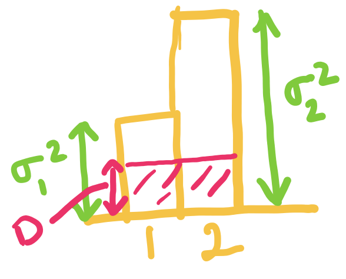
When exceeds but is below , we set to be , and choose such that the average distortion is .

When is equal to we can just set and .

Now consider a setting with and .
Q1.1 (1 point)
At , what are the optimal values of and :
( )
( )
( ) ,
( ) ,
Q1.2 (1 point)
At , what is the optimal rate
( ) bits/source component
( ) bits/source component
( ) bits/source component
( ) bits/source component
Q1.3 (1 point)
Which of the following is correct?
[ ] For below the two variances, we divide the distortions equally among the two components.
[ ] For below the two variances, we use a higher bitrate for the component with higher variance.
[ ] For between the two variances, we use zero bitrate for one of the component.
[ ] For between the two variances, we use zero bitrate for both of the components.
Quiz 14 (Transform Coding in real-life: image, audio, etc.)
Q1 (2 points)
Q1.1: Vector Quantization (1 point)
In which of the following cases do you expect vector quantization to improve the lossy compression performance? (select all the correct options)
[ ] i.i.d. data compressed with scalar quantization
[ ] non-i.i.d. (correlated) data with scalar quantization
Q1.2: Transform Coding (1 point)
In which of the following cases do you expect transform coding to improve the lossy compression performance? (select all the correct options)
[ ] i.i.d. data
[ ] non-i.i.d. (correlated) data
Q2 (3 points)
Match the signals to their DCT!
Signal 1

Signal 2

Signal 3

DCT A

DCT B
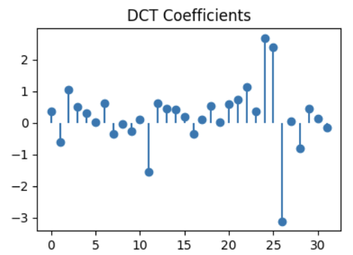
DCT C
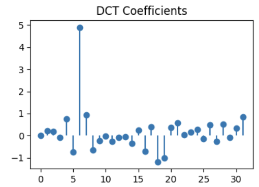
Q2.1 (1 point)
DCT for signal 1:
( ) DCT A
( ) DCT B
( ) DCT C
Q2.2 (1 point)
DCT for signal 2:
( ) DCT A
( ) DCT B
( ) DCT C
Q2.3 (1 point)
DCT for signal 3:
( ) DCT A
( ) DCT B
( ) DCT C
Q3: DCT truncation (1 point)

For the signal shown above, we take the DCT and truncate (zero out) the 16 highest frequencies (out of 32 total components in the DCT). Identify the reconstructed signal obtained after performing the inverse DCT.
( ) A

( ) B
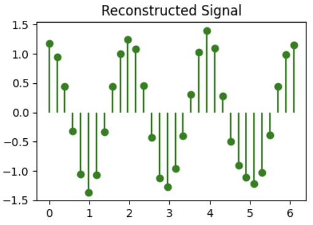
( ) C
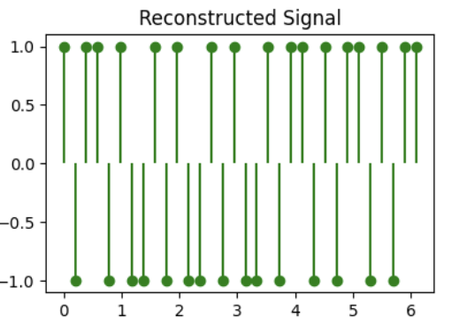
Quiz 15 (Image Compression: JPEG, BPG)
Q1: Image Compression (4 points)
Before the next big game, facing an inevitable loss, Berkeley students hacked into Stanford website and tried to mutilate the Stanford logo into a Berkeley blue color version (but did a bad job at it). The mutilated logo is shown as an image above.
This image is of dimensions , and contains channels (RGBA) instead of channels for colors we saw in class. The fourth channel is alpha channel which tells the transparency of the image. The bit-depth of this image is , which basically implies that every pixel in each channel is 8 bits.
This file can be compressed losslessly using PNG to (kilo-bytes).
Q1.1 (1 point)
What's the expected raw size of this image? Leave you answer in KB (note: Kilo Bytes not Kilo bits)
Q1.2 (1 point)
In this image you can see that there are basically just two colors (white and a bad version of Berkeley blue color). What will be the expected image size if we use only 2 colors to compress this image in KB? Note, we assume that you still need 8 bits for the alpha channel.
Q1.3 (1 point)
Now you also see that along with having just 2 colors, the image also has only two levels of transparency (perfectly transparent and perfectly opaque). Using these properties what will be the expected image size in KB?
Q1.4 (1 point)
PNG seems to perform better than even using 1 bit for color and 1 bit for alpha!
Give one reason why this might be the case. Note: there are many reasons! But we are only asking for one so feel free to choose.
Q2: JPEE274G Compressor (4 points)
EE274 students decided to come together and form JPEE274G (Joint Photographers EE 274 Group) coming up with an image compressor with the same name. Help them make the design decisions.
Q2.1 (1 point)
Riding on the compute revolution, JPEE274G decided to go for block size instead of .
Suppose you have the same image at resolution , ,
In which of the following case do we expect increasing the block-size help the the most.
( )
( )
( )
Q2.2 (1 point)
JPEE274G decided to use prediction of blocks based on previously encoded neighbors. In which of the following two images do we expect the prediction to help the most.


( ) Charizard (the one with the orange cranky being)
( ) Assorted Pokémons (the one with Pokemon written in it)
Q3: Predictive Coding (2 points)
You find a source where consecutive values are very close, so you decide to do predictive lossy compression. Encoder works in following fashion: it first transmits the first symbol and after that it quantizes the error based on prediction from last encoded symbol. The quantized prediction error is transmitted.
Formally, suppose is your original sequence and is the reconstruction sequence. Then we have:
- for the first symbol the reconstruction , i.e., you are losslessly encoding the first symbol
- prediction for is simply
- prediction error is
- quantized prediction error is
- reconstruction for is
- the transmitted sequence is
For this question, assume that the quantization for the prediction error is simply integer floor.
Example encoding for source sequence:
| 1 | - | 0.4 | - | - |
| 2 | 0.4 | 1.1 | 0.7 | 0 |
| 3 | 0.4 | 1.5 | 1.1 | 1 |
| 4 | 1.4 | 0.9 | -0.5 | -1 |
| 5 | 0.4 | 2.1 | 1.7 | 1 |
| 6 | 1.4 | 2.9 | 1.5 | 1 |
| 7 | 2.4 | - | - | - |
Q3.1: Errors (1 point)
What is the absolute value of reconstruction error for the last symbol?
Q3.2: Now Decode (1 point)
Given the transmitted sequence = , what is the final decoded value ?
Quiz 16 (Learnt Image Compression)
Q1 (7 points)
Have a look at the notebook we showed in class to answer following questions. The notebook can be found at class website as well as on this link.
Q1.1 (2 points)
We have defined the transforms, but we need to define a training procedure to train these non-linear transforms. We are using the distribution tfp.distributions.Normal(loc=0., scale=1.) as a prior for codelayer y. i.e. we are making the analysis_transform decorrelate input data to unit gaussians.
In which case do you expect the output of estimated_rate_loss(self.prior, y) to be higher:
( ) y=5
( ) y=0
Q1.2 (3 points)
Explain briefly why with unit normal prior for code layer y with latent_dims=50, the bits_used can never go below 50 bits.
Hint: take a look at the prior distribution on the integers on slide 41 here.
Bonus: can you think of a tighter lower-bound?
Q1.3 (2 points)
Which of the following would you expect to reduce the rate where the loss function is . Select all that apply.
[ ] increase
[ ] decrease
[ ] increase the latent space dimension
[ ] decrease the latent space dimension
Solutions
(X) y=5
( ) y=0
Solution: Note that the rate loss is defined as the negative log probability of the quantized Gaussian probability distribution, and hence y farther away from 0 gives us lower probability and hence higher rate.
-
Solution: The best you can do in terms of bits used is to have all the quantized latent variables be 0 (since that has the highest probability). Looking at the figure, we see the probability is below 0.4 so the number of bits used by arithmetic coder is more than log2(1/0.4) ~ 1.32 bits/latent dimension. Thus we will not go below 50 bits and a tighter bound would be 50*1.32=66 bits.
[ ] increase
[X] decrease
[ ] increase the latent space dimension
[X] decrease the latent space dimension
Solution: Lower gives lower emphasis on distortion and hence the training will lead to a model with higher distortion but lower rate. Decreasing the latent space dimension will also reduce the rate (in particular it will reduce the lowest rate you can achieve as you have seen in the previous question).
Quiz 17 (Humans and Compression)
Q1: MSE vs. L1 error vs. visual perception (1 point)
Recall the distortion functions MSE (mean square error) and L1 distortion (mean absolute error). Which of the following is always true?
( ) Lower MSE implies better visual perception
( ) Lower L1 implies better visual perception
( ) None of the above
Q2: Chroma subsampling (2 points)
In which of the following settings will chroma subsampling typically lead to most noticeable artifacts? (select all that apply)
[ ] Landscape image (natural images have low spatial frequencies)
[ ] Text image (say screenshot of wikipedia page)
[ ] Cartoon/Animated Content (note cartoons are artificially generated and have sharp edges)
[ ] Videos (note videos have temporal variance in noise along with spatial variance)
Q3: YCbCr matrix (4 points)
Look at the images we saw in class on color-space below. Recall that Y represents luminance or white/black opponent channel, Cb represents blue/yellow and Cr represents red/green color channel. It might be helpful to know that yellow can be represented as a combination of red and green. Answer the following questions:

 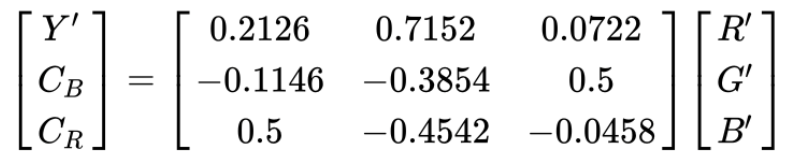
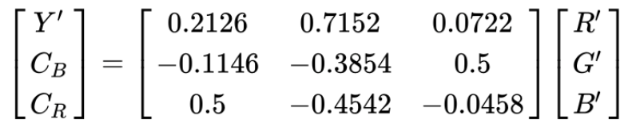
A student comes up with a new colorspace conversion recommendation for RGB to YUV conversion. Which of the following matrices are possibly correct color conversions: (select all that apply)
[ ]
[ ]
[ ]
[ ]
Solutions
Q1
( ) Lower MSE implies better visual perception
( ) Lower L1 implies better visual perception
(X) None of the above
Solution: Neither MSE nor L1 are an accurate estimate of visual perception.
Q2
[ ] Landscape image (natural images have low spatial frequencies)
[X] Text image (say screenshot of wikipedia page)
[X] Cartoon/Animated Content (note cartoons are artificially generated and have sharp edges)
[ ] Videos (note videos have temporal variance in noise along with spatial variance)
Solution: As seen in class, chroma subsampling produces significant artifacts when you have a lot of sharp edges like in text/screenshot and cartoons.
Q3
Solution: Only the first matrix is correct. In each of the other options, one of the rows doesn't represent the proper meaning of the YCbCr components. For example in the second option, the third row corresponding to Cr has R-B instead of R-G.